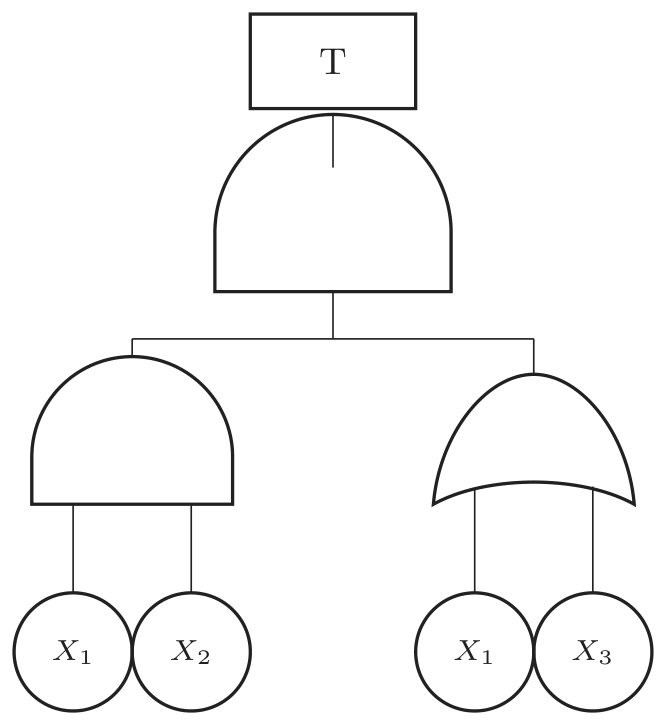
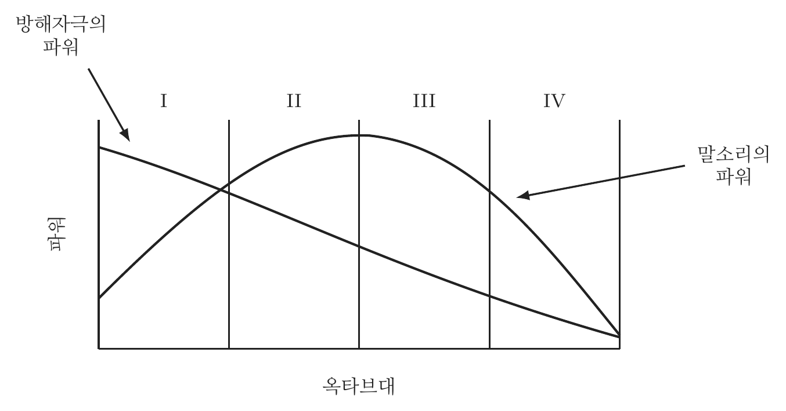

2023년 1회 · 산업안전기사 필기 CBT 기출 재배열 전사 검수본
지면(PDF)과 대조 검수용 · 수식은 KaTeX 렌더 · 총 문항
제1과목 안전관리론
001빈출도 ★☆☆난이도 1·쉬움개념형safe_A_2023_01_001
리더쉽의 유형에 해당되지 않는 것은?
① 권위형
② 민주형
③ 자유방임형
④ 혼합형
정답: 4
해설
「혼합형」이라는 유형은 없다. 셋은 권위형 · 민주형 · 자유방임형이다.
리더십의 세 유형
| 유형 | 무엇 | 특징 |
|---|
| 권위형(전제형) | 지도자가 혼자 정한다 | 급할 때는 빠르나 사기가 낮다 |
| 민주형 | 함께 의논해 정한다 | 사기와 창의성이 높다 |
| 자유방임형(개방적) | 구성원에게 맡긴다 | 전문가 집단에는 맞으나 대개 능률이 낮다 |
오답 분석
① 권위형은 리더십의 한 유형이다.
② 민주형도 그렇다.
③ 자유방임형도 그렇다.
관련 개념 · 암기
리더십의 유형세 유형은
「누가 정하는가」로 갈린다 —
지도자 혼자(권위형) · 함께(민주형) · 구성원에게(자유방임형).
민주형이 대체로 가장 낫다고 본다.
◈ 암기 권위 · 민주 · 자유방임 셋.
🃏 관련 암기카드
분류: — > — > 리더십 · 원본 2016.05.08
002빈출도 ★☆☆난이도 1·쉬움개념형safe_A_2023_01_002
교육의 형태에 있어 존 듀이(Dewey)가 주장하는 대표적인 형식적 교육에 해당하는 것은?
① 가정안전교육
② 사회안전교육
③ 학교안전교육
④ 부모안전교육
정답: 3
해설
학교안전교육이다. 짜인 교육과정과 자격을 갖춘 교사가 있는 것이 형식적 교육이다.
형식적 교육과 비형식적 교육
| 형식적 교육 | 비형식적 교육 |
|---|
| 어디서 | 학교 | 가정 · 사회 |
| 누가 | 자격을 갖춘 교사 | 부모 · 선배 · 사회 지도자 |
| 무엇으로 | 짜인 교육과정과 교과서 | 생활 그 자체 |
오답 분석
① 가정안전교육은 비형식적 교육이다.
② 사회안전교육도 그렇다.
④ 부모안전교육도 가정에서 이루어지는 비형식적 교육이다.
관련 개념 · 암기
형식적 교육과 비형식적 교육「형식」은 짜인 틀을 뜻한다.
교육과정 · 교사 자격 · 교재 · 평가가 갖추어진 것은 학교뿐이다.
◈ 암기 학교가 형식적 교육.
🃏 관련 암기카드
분류: — > — > 교육의 형태 · 원본 2016.03.06
003빈출도 ★☆☆난이도 1·쉬움개념형safe_A_2023_01_003
다음 중 재해를 한번 경험한 사람은 신경과민 등 심리적인 압박을 받게 되어 대처능력이 떨어져 재해가 빈번하게 발생된다는 설(設)은?
정답: 2
해설
암시설이다. 한 번 겪은 재해가 마음에 남아 다음 사고를 부른다는 설명이다.
재해빈발에 관한 여러 설
| 설 | 무엇 | |
|---|
| 기회설 | 위험한 작업에 배치되었기 때문 | 사람이 아니라 자리 탓 |
| 암시설 | 한 번 겪은 재해가 심리적 압박이 된다 | 이 문항 |
| 경향설(빈발경향자설) | 타고난 성향 탓 | 소질적 결함 |
| 미숙설 | 기능이 서툴러서 | |
오답 분석
① 기회설은 위험한 작업에 배치되어 사고가 잦다는 설명이다.
③ 경향설은 타고난 성향 탓으로 보는 설명이다.
④ 미숙설은 기능이 서툴러 사고가 난다는 설명이다.
관련 개념 · 암기
재해빈발에 관한 여러 설네 설이
자리 탓(기회) · 마음 탓(암시) · 성향 탓(경향) · 솜씨 탓(미숙)으로 갈린다.
「한 번 겪은 뒤」라는 말이 암시설을 가리킨다.
◈ 암기 한 번 겪은 뒤면 암시설.
🃏 관련 암기카드
분류: — > — > 재해빈발설 · 원본 2015.08.16
004빈출도 ★☆☆난이도 1·쉬움개념형safe_A_2023_01_004
다음 중 억압당한 욕구가 사회적ㆍ문화적으로 가치 있는 목적으로 향하여 노력함으로써 욕구를 충족하는 적응기제(Adjustment Mechanism)를 무엇이라 하는가?
정답: 3
해설
승화(昇華)다. 채우지 못한 욕구를 사회가 인정하는 쪽으로 돌려 푸는 것이다.
방어기제의 갈래
| 기제 | 무엇 | 보기 |
|---|
| 보상 | 못하는 것을 다른 것으로 메운다 | 공부를 못하면 운동으로 |
| 승화 | 욕구를 사회적으로 값진 쪽으로 돌린다 | 공격성을 운동선수로 |
| 동일시 | 남을 자기와 겹쳐 본다 | 영웅을 따라 한다 |
| 합리화 | 그럴듯한 핑계를 댄다 | 신 포도 |
| 투사 | 제 마음을 남에게 돌린다 | 내가 미워하면서 남이 나를 미워한다고 |
오답 분석
① 보상은 못하는 것을 다른 것으로 메우는 기제다.
② 투사는 제 마음을 남에게 돌리는 기제다.
④ 합리화는 그럴듯한 핑계를 대는 기제다.
관련 개념 · 암기
방어기제 — 승화(sublimation)「사회적·문화적으로 가치 있는」이라는 말이 승화를 가리킨다.
보상은 다른 것으로 메우는 것이고
승화는 같은 힘을 값진 쪽으로 돌리는 것이라는 점에서 갈린다.
◈ 암기 값진 쪽으로 돌리면 승화.
🃏 관련 암기카드
분류: — > — > 적응기제 · 원본 2015.08.16
005빈출도 ★☆☆난이도 2·보통개념형safe_A_2023_01_005
무재해운동 추진기법에 있어 위험예지훈련 4라운드에서 제3단계 진행방법에 해당하는 것은?
① 본질추구
② 현상파악
③ 목표설정
④ 대책수립
정답: 4
해설
제3라운드는 대책수립이다.
위험예지훈련 4라운드
| 라운드 | 이름 | 무엇을 하나 | 묻는 말 |
|---|
| 1R | 현상파악 | 어떤 위험이 있나 | 「어떤 위험이 숨어 있는가?」 |
| 2R | 본질추구 | 무엇이 진짜 문제인가 | 「이것이 위험의 요점이다」 |
| 3R | 대책수립 | 어떻게 할 것인가 | 「당신이라면 어떻게 하겠는가?」 |
| 4R | 행동목표 설정 | 무엇을 지킬 것인가 | 「우리는 이렇게 한다」 |
오답 분석
① 본질추구는 2라운드다.
② 현상파악은 1라운드다.
③ 목표설정(행동목표 설정)은 4라운드다.
관련 개념 · 암기
위험예지훈련 4라운드흐름은
보고 → 캐고 → 세우고 → 다짐한다다.
3R에서 대책을 세우고 4R에서 그 가운데 하나를 「우리의 행동목표」로 정한다.
◈ 암기 현상파악 · 본질추구 · 대책수립 · 행동목표.
🃏 관련 암기카드
분류: 무재해운동 > 무재해·위험예지 > 위험예지훈련 · 원본 2016.03.06
006빈출도 ★☆☆난이도 2·보통개념형safe_A_2023_01_006
석면 취급장소에서 사용하는 방진마스크의 등급으로 옳은 것은?
정답: 1
해설
특급이다. 석면은 발암성 분진이므로 가장 높은 등급을 쓴다.
방진마스크의 등급과 사용장소
| 등급 | 사용장소 | 여과효율(분리식) |
|---|
| 특급 | 베릴륨 등 독성이 강한 물질을 함유한 분진 · 석면 취급장소 | 99.95 [%] 이상 |
| 1급 | 금속흄 등 열적으로 생긴 분진 · 기계적으로 생긴 분진 | 94.0 [%] 이상 |
| 2급 | 특급과 1급 밖의 분진 | 80.0 [%] 이상 |
오답 분석
② 1급은 금속흄 등 열적으로 생긴 분진에 쓴다.
③ 2급은 그 밖의 분진에 쓴다.
④ 방진마스크에 3급은 없다.
관련 개념 · 암기
보호구 안전인증 고시 — 방진마스크의 등급방진마스크는 특급 · 1급 · 2급 세 등급뿐이다.
「3급」이라는 보기가 나오면 곧바로 걸러진다.
석면과 베릴륨은 특급이다.
◈ 암기 석면은 특급.
🃏 관련 암기카드
분류: 보호구 > 호흡·눈·귀 > 방진마스크 · 원본 2018.03.04
007빈출도 ★☆☆난이도 2·보통개념형safe_A_2023_01_007
집단의 기능에 관한 설명으로 틀린 것은?
① 집단의 규범은 변화하기 어려운 것으로 불변적이다.
② 집단 내에 머물도록 하는 내부의 힘을 응집력이라 한다.
③ 규범은 집단을 유지하고 집단의 목표를 달성하기 위해 만들어진 것이다.
④ 집단이 하나의 집으로서의 역할을 수행하기 위해서는 집단 목표가 있어야 한다.
정답: 1
해설
집단의 규범은 구성원이 바뀌거나 상황이 달라지면 함께 바뀐다. 「불변적」이라는 표현이 틀렸다.
오답 분석
② 집단 내에 머물게 하는 힘을 응집력이라 하는 것은 맞다.
③ 규범이 집단 유지와 목표 달성을 위해 만들어진 것도 맞다.
④ 집단의 역할 수행에 집단 목표가 있어야 하는 것도 맞다.
관련 개념 · 암기
집단의 기능집단의 세 기능은
집단 목표 · 규범 · 응집력이다.
「불변」·「절대」·「모든」 같은 절대적 표현이 붙은 보기는 대개 오답이다.
◈ 암기 집단 목표 · 규범 · 응집력 셋.
🃏 관련 암기카드
분류: 산업심리 > 집단·리더십 > 집단의 기능 · 원본 2016.03.06
008빈출도 ★☆☆난이도 1·쉬움개념형safe_A_2023_01_008
암실에서 정지된 소광점을 응시하면 광점이 움직이는 것 같이 보이는 현상을 운동의 착각 현상 중 『자동운동』이라 한다. 다음 중 자동운동이 생기기 쉬운 조건에 해당되지 않는 것은?
① 광점이 작은 것
② 대상이 단순한 것
③ 광의 강도가 큰 것
④ 시야의 다른 부분이 어두운 것
정답: 3
해설
빛의 세기가 작아야 자동운동이 잘 일어난다. 밝으면 둘레가 보여 기준이 생긴다.
자동운동이 생기기 쉬운 조건
| 조건 | 까닭 |
|---|
| 광점이 작을 것 | 기준으로 삼을 크기가 없다 |
| 빛의 세기가 작을 것 | 「클 것」이 아니다 |
| 대상이 단순할 것 | 비교할 것이 없다 |
| 시야의 다른 부분이 어두울 것 | 둘레에 기준이 없다 |
오답 분석
① 광점이 작은 것은 자동운동이 생기기 쉬운 조건이다.
② 대상이 단순한 것도 그렇다.
④ 시야의 다른 부분이 어두운 것도 그렇다.
관련 개념 · 암기
자동운동(autokinetic movement)네 조건이 모두
「견줄 기준이 없다」는 한 가지다.
눈은 늘 미세하게 떨리는데, 기준이 없으면 그 떨림을 광점의 움직임으로 잘못 읽는다.
◈ 암기 빛이 약해야 자동운동이 생긴다.
🃏 관련 암기카드
분류: 산업심리 > 부주의·착오 > 착시 · 원본 2015.08.16
009빈출도 ★☆☆난이도 1·쉬움개념형safe_A_2023_01_009
다음 중 헤드십(head-ship)의 특성으로 옳지 않은 것은?
① 권한의 근거는 공식적이다.
② 지휘의 형태는 권위주의적이다.
③ 상사와 부하와의 사회적 간격은 좁다.
④ 상사와 부하와의 관계는 지배적이다.
정답: 3
해설
헤드십은 상사와 부하 사이의 사회적 간격이 넓다. 좁은 것은 리더십이다.
헤드십과 리더십
| 헤드십(head-ship) | 리더십(leader-ship) |
|---|
| 권한의 근거 | 공식적 | 비공식적 |
| 어떻게 되나 | 위에서 임명 | 아래에서 추대·선출 |
| 지휘 형태 | 권위주의적 | 민주주의적 |
| 상사와 부하의 관계 | 지배적 | 개인적 영향 |
| 사회적 간격 | 넓다 | 좁다 |
| 책임 | 상사에게 | 상사와 부하 모두에게 |
오답 분석
① 권한의 근거가 공식적인 것은 맞다.
② 지휘 형태가 권위주의적인 것도 맞다.
④ 상사와 부하의 관계가 지배적인 것도 맞다.
관련 개념 · 암기
헤드십(head-ship)과 리더십(leader-ship)임명되면 헤드십, 따르게 하면 리더십이다. 헤드십은
자리에서 나온 힘이라
거리가 멀고 권위적이고, 리더십은
사람에게서 나온 힘이라
가깝고 민주적이다.
◈ 암기 헤드십은 간격이 넓다.
🃏 관련 암기카드
분류: 산업심리 > 집단·리더십 > 헤드십과 리더십 · 원본 2015.05.31
010빈출도 ★☆☆난이도 2·보통개념형safe_A_2023_01_010
산업안전보건법상 안전보건개선계획의 수립ㆍ시행명령을 받은 사업주는 고용노동부장관이 정하는 바에 따라 안전보건개선계획서를 작성하여 그 명령을 받은 날부터 며칠 이내에 관할 지방고용노동관서의 장에게 제출해야 하는가?
정답: 4
해설
60일 이내다.
오답 분석
① 15일 이내라는 기한은 없다.
② 30일 이내도 아니다.
③ 45일 이내도 아니다.
관련 개념 · 암기
산업안전보건법 시행규칙 제61조 — 안전보건개선계획서의 제출개선계획서 제출은 60일 이내다. 함께 나오는 기한으로
유해위험방지계획서는 제조업 15일 전 · 건설업 착공 전날,
공정안전보고서는 착공 30일 전이 있다.
◈ 암기 안전보건개선계획서는 60일 이내.
⚖ 근거 법령 — 산업안전보건법 시행규칙 제61조산업안전보건법 시행규칙 시행 2026. 8. 1.
① 법 제50조제1항에 따라 안전보건개선계획서를 제출해야 하는 사업주는 법 제49조제1항에 따른 안전보건개선계획서 수립ㆍ시행 명령을 받은 날부터 60일 이내에 관할 지방고용노동관서의 장에게 해당 계획서를 제출(전자문서로 제출하는 것을 포함한다)해야 한다.이 문항이 묻는 자리
② 제1항에 따른 안전보건개선계획서에는 시설, 안전보건관리체제, 안전보건교육, 산업재해 예방 및 작업환경의 개선을 위하여 필요한 사항이 포함되어야 한다.
분류: 안전보건관리 체제 > 안전보건관리규정 > 안전보건개선계획 · 원본 2016.08.21
011빈출도 ★☆☆난이도 1·쉬움개념형safe_A_2023_01_011
안전에 관한 기본 방침을 명확하게 해야 할 임무는 누구에게 있는가?
① 안전관리자
② 관리감독자
③ 근로자
④ 사업주
정답: 4
해설
사업주다. 안전에 관한 기본 방침을 세우는 것은 경영자의 몫이다.
오답 분석
① 안전관리자는 기술적 사항을 보좌하고 조언·지도한다.
② 관리감독자는 자기 부서의 안전보건 업무를 맡는다.
③ 근로자는 사업주가 정한 사항을 지킬 의무가 있다.
관련 개념 · 암기
산업안전보건법 제5조 — 사업주 등의 의무「방침을 세운다」는 것은 조직의 방향을 정하는 일이라
최고 결정권자인 사업주의 몫이다.
안전관리자와 관리감독자는 그 방침을 실행하고 보좌한다.
◈ 암기 기본 방침은 사업주.
⚖ 근거 법령 — 산업안전보건법 제5조산업안전보건법 시행 2026. 8. 1.
① 사업주(제77조에 따른 특수형태근로종사자로부터 노무를 제공받는 자와 제78조에 따른 물건의 수거ㆍ배달 등을 중개하는 자를 포함한다. 이하 이 조 및 제6조에서 같다)는 다음 각 호의 사항을 이행함으로써 근로자(제77조에 따른 특수형태근로종사자와 제78조에 따른 물건의 수거ㆍ배달 등을 하는 사람을 포함한다. 이하 이 조 및 제6조에서 같다)의 안전 및 건강을 유지ㆍ증진시키고 국가의 산업재해 예방정책을 따라야 한다. <개정 2020.5.26>
1. 이 법과 이 법에 따른 명령으로 정하는 산업재해 예방을 위한 기준
2. 근로자의 신체적 피로와 정신적 스트레스 등을 줄일 수 있는 쾌적한 작업환경의 조성 및 근로조건 개선
3. 해당 사업장의 안전 및 보건에 관한 정보를 근로자에게 제공
② 다음 각 호의 어느 하나에 해당하는 자는 발주ㆍ설계ㆍ제조ㆍ수입 또는 건설을 할 때 이 법과 이 법에 따른 명령으로 정하는 기준을 지켜야 하고, 발주ㆍ설계ㆍ제조ㆍ수입 또는 건설에 사용되는 물건으로 인하여 발생하는 산업재해를 방지하기 위하여 필요한 조치를 하여야 한다.이 문항이 묻는 자리
1. 기계ㆍ기구와 그 밖의 설비를 설계ㆍ제조 또는 수입하는 자
2. 원재료 등을 제조ㆍ수입하는 자
3. 건설물을 발주ㆍ설계ㆍ건설하는 자
분류: 안전보건관리 체제 > 선임·자격 > 사업주의 의무 · 원본 2016.05.08
012빈출도 ★☆☆난이도 1·쉬움개념형safe_A_2023_01_012
학습이론 중 자극과 반응의 이론이라 볼 수 없는 것은?
① Kohler의 통찰설
② Thorndike의 시행착오설
③ Pavlov의 조건반사설
④ Skinner의 조작적 조건화설
정답: 1
해설
쾰러의 통찰설은 인지설이다. 문제 상황 전체를 새로운 눈으로 파악해 단번에 해결 한다는 이론이다.
학습이론의 두 갈래
| 갈래 | 학자와 이론 | 요지 |
|---|
| 자극-반응(S-R)설 | 파블로프 조건반사설 | 종소리에 침을 흘린다 |
| 손다이크 시행착오설 | 되풀이하다 익힌다 |
| 스키너 조작적 조건화설 | 보상과 벌 |
| 인지(형태)설 | 쾰러 통찰설 | 전체를 새로운 눈으로 단번에 |
| 레빈 장(場)설 | 사람과 환경의 장 안에서 |
| 톨만 기호형태설 | 머릿속 인지적 지도 |
오답 분석
② 손다이크의 시행착오설은 자극-반응 이론이다.
③ 파블로프의 조건반사설도 그렇다.
④ 스키너의 조작적 조건화설도 그렇다.
관련 개념 · 암기
학습이론의 분류「반사 · 반복 · 보상」이면 자극-반응설, 「통찰 · 지도 · 장」이면 인지설이다.
쾰러의 침팬지 실험이 통찰설의 대표 사례다.
◈ 암기 통찰설만 인지설.
🃏 관련 암기카드
분류: 안전보건교육 > 학습이론 > 학습이론 · 원본 2016.05.08
013빈출도 ★☆☆난이도 2·보통개념형safe_A_2023_01_013
바람직한 안전교육을 진행시키기 위한 4단계 가운데 피 교육자로 하여금 작업습관의 확립과 토론을 통한 공감을 가지도록 하는 단계는?
정답: 3
해설
적용(응용) 단계다. 직접 해 보고 토론하며 몸에 익히는 단계다.
안전교육의 4단계
| 단계 | 이름 | 무엇을 하나 | 강의식 시간 |
|---|
| 1 | 도입 | 마음의 준비를 시킨다 | 5분 |
| 2 | 제시 | 내용을 알려 준다 | 40분 |
| 3 | 적용 | 직접 해 보고 토론하며 익힌다 | 10분 |
| 4 | 확인 | 익혔는지 본다 | 5분 |
오답 분석
① 도입은 마음의 준비를 시키는 단계다.
② 제시는 내용을 알려 주는 단계다.
④ 확인은 익혔는지 보는 단계다.
관련 개념 · 암기
안전교육의 4단계「습관의 확립」과 「토론을 통한 공감」은 모두
스스로 해 보는 일이다.
듣기만 해서는 습관이 되지 않는다는 점에서 적용 단계를 가리킨다.
◈ 암기 해 보고 토론하면 적용 단계.
🃏 관련 암기카드
분류: 안전보건교육 > 교육계획·평가 > 교육의 4단계 · 원본 2016.03.06
014빈출도 ★☆☆난이도 2·보통개념형safe_A_2023_01_014
참가자가 다수인 경우에 전원을 토의에 참가시키기 위한 방법으로 소집단을 구성하여 회의를 진행 시키며 6-6 회의라고도 하는 것은?
① 포럼(Forum)
② 심포지엄(Symposium)
③ 버즈 세션(Buzz session)
④ 패널 디스커션(Panel discussion)
정답: 3
해설
버즈 세션이다. 6명이 6분씩 이야기한다 하여 6-6 회의 라고도 한다.
토의식 교육의 갈래
| 방법 | 어떻게 | |
|---|
| 버즈 세션 | 6명씩 소집단으로 나눠 6분간 토의 | 6-6 회의 |
| 포럼 | 자료를 제시하고 참가자가 질문하며 토의 | |
| 심포지엄 | 여러 강사가 발표한 뒤 청중이 질문 | |
| 패널 디스커션 | 패널 몇 사람이 먼저 토의한 뒤 청중과 함께 | |
오답 분석
① 포럼은 자료를 제시한 뒤 참가자가 질문하며 토의하는 방법이다.
② 심포지엄은 여러 강사가 발표한 뒤 질문받는 방법이다.
④ 패널 디스커션은 패널이 먼저 토의한 뒤 청중이 참여하는 방법이다.
관련 개념 · 암기
버즈 세션(buzz session)「버즈(buzz)」는 벌이 윙윙거리는 소리다.
여러 소집단이 한꺼번에 이야기하는 웅성거림에서 온 이름이다.
참가자가 많을 때 전원을 참여시키는 방법이다.
◈ 암기 6명이 6분씩이면 버즈 세션.
🃏 관련 암기카드
분류: 안전보건교육 > 토의법 > 토의법 · 원본 2016.03.06
015빈출도 ★★☆난이도 1·쉬움개념형safe_A_2023_01_015
다음 중 태도교육을 통한 안전태도 형성요령과 가장 거리가 먼 것은?
① 이해한다.
② 칭찬한다.
③ 모범을 보인다.
④ 금전적 보상을 한다.
정답: 4
해설
금전적 보상은 태도 형성의 방법이 아니다. 돈으로 산 태도는 돈이 없으면 사라진다.
안전태도 형성의 요령
| 요령 | |
|---|
| 청취한다 | 먼저 듣는다 |
| 이해하고 납득시킨다 | |
| 모범을 보인다 | 말보다 행동으로 |
| 평가하고 권장한다(칭찬한다) | |
| 장려하고 처벌한다 | 벌은 마지막 수단 |
오답 분석
① 이해시키는 것은 태도 형성의 요령이다.
② 칭찬하는 것도 그렇다.
③ 모범을 보이는 것도 그렇다.
관련 개념 · 암기
안전태도 형성의 요령다섯을
청 · 이 · 모 · 평 · 장으로 새긴다.
태도는 마음의 문제라
듣고 · 알게 하고 · 보여 주고 · 인정해 주는 것으로 만들어진다.
◈ 암기 청취 · 이해 · 모범 · 평가 · 장려.
🃏 관련 암기카드
분류: 안전보건교육 > 교육 이론 > 태도교육 · 원본 2012.05.20 · 2015.08.16
016빈출도 ★☆☆난이도 1·쉬움개념형safe_A_2023_01_016
안전점검표(check list)에 포함되어야 할 사항이 아닌 것은?
① 점검대상
② 판정기준
③ 점검방법
④ 조치결과
정답: 4
해설
조치결과는 점검을 하고 난 뒤에 적는 것이다. 점검표에 미리 담을 항목이 아니다.
안전점검표에 담을 항목
| 항목 | |
|---|
| 점검대상 | 무엇을 볼 것인가 |
| 점검부분(점검개소) | |
| 점검항목 | 어떤 상태를 볼 것인가 |
| 점검주기 또는 기간 | 언제 |
| 점검방법 | 어떻게 |
| 판정기준 | 무엇을 합격으로 볼 것인가 |
| 조치사항 | 어긋나면 무엇을 할 것인가 — 「조치결과」가 아니다 |
오답 분석
① 점검대상은 점검표의 항목이다.
② 판정기준도 그렇다.
③ 점검방법도 그렇다.
관련 개념 · 암기
안전점검표(체크리스트)의 작성점검표는
점검하기 전에 만들어 두는 양식이다.
「조치사항(무엇을 할 것인가)」은 미리 정해 두지만, 「조치결과(무엇을 했는가)」는 하고 나서 적는다.
◈ 암기 조치「사항」은 담고 조치「결과」는 담지 않는다.
🃏 관련 암기카드
분류: 안전점검·인증 > 안전점검 > 안전점검표 · 원본 2017.05.07
017빈출도 ★☆☆난이도 2·보통개념형safe_A_2023_01_017
다음 중 재해예방의 4원칙에 관한 설명으로 틀린 것은?
① 재해의 발생에는 반드시 원인이 존재한다.
② 재해의 발생과 손실의 발생은 우연적이다.
③ 재해예방을 위한 가능한 안전대책은 반드시 존재한다.
④ 재해는 원인 제거가 불가능하므로 예방만이 최우선이다.
정답: 4
해설
원인을 없앨 수 있다는 것이 4원칙의 하나다. 「원인 제거가 불가능」은 정반대다.
재해예방의 4원칙
| 원칙 | 무엇 | 보기와의 대응 |
|---|
| 손실우연의 원칙 | 사고의 결과로 생기는 손실은 우연히 정해진다 | ② |
| 원인계기(연계)의 원칙 | 재해에는 반드시 원인이 있고 서로 이어져 있다 | ① |
| 예방가능의 원칙 | 천재지변을 빼면 모든 재해는 막을 수 있다 | ③ |
| 대책선정의 원칙 | 원인에 따라 알맞은 대책이 반드시 있다 | ③ |
오답 분석
① 재해 발생에 반드시 원인이 있는 것은 원인계기의 원칙이다.
② 재해 발생과 손실 발생이 우연적인 것은 손실우연의 원칙이다.
③ 안전대책이 반드시 존재하는 것은 대책선정의 원칙이다.
관련 개념 · 암기
재해예방의 4원칙네 원칙을
손 · 원 · 예 · 대로 새긴다.
「예방가능」이 있는 한 「원인 제거가 불가능」할 수 없다 — 두 말이 서로 어긋난다.
◈ 암기 손실우연 · 원인계기 · 예방가능 · 대책선정.
🃏 관련 암기카드
분류: 재해조사 및 분석 > 재해 발생 이론 > 재해예방의 4원칙 · 원본 2015.08.16
018빈출도 ★★☆난이도 1·쉬움개념형safe_A_2023_01_018
재해 코스트 산정에 있어 시몬즈(R.H. Simonds) 방식에 의한 재해코스트 산정법을 올바르게 나타낸 것은?
① 직접비 + 간접비
② 간접비 + 비보험코스트
③ 보험코스트 + 비보험코스트
④ 보험코스트 + 사업부보상금 지급액
정답: 3
해설
보험 코스트 + 비보험 코스트다.
재해손실비 산정의 두 방식
| 하인리히 방식 | 시몬즈 방식 |
|---|
| 식 | 직접비 + 간접비 | 보험 코스트 + 비보험 코스트 |
| 비율 | 1 : 4 | — |
| 특징 | 간접비를 직접비의 4배로 어림 | 비보험 코스트를 갈래별 평균치 × 건수로 셈한다 |
오답 분석
① 직접비 + 간접비는 하인리히 방식이다.
② 「간접비 + 비보험코스트」라는 식은 없다.
④ 「보험코스트 + 사업부보상금 지급액」이라는 식도 없다.
관련 개념 · 암기
시몬즈(Simonds)의 재해손실비 산정하인리히는 「직접비 + 간접비」, 시몬즈는 「보험 + 비보험」이다.
하인리히는 어림(1:4), 시몬즈는 실제 건수를 세어 셈한다는 점이 다르다.
◈ 암기 시몬즈는 보험 + 비보험.
🃏 관련 암기카드
분류: 재해조사 및 분석 > 재해 손실비 > 재해손실비 · 원본 2012.05.20 · 2015.03.08
019빈출도 ★☆☆난이도 2·보통개념형safe_A_2023_01_019
다음의 재해사례에서 기인물에 해당하는 것은?
기계작업에 배치된 작업자가 반장의 지시를 받기 전에 정지된 선반을 운전시키면서 변속치차의 덮개를 벗겨내고 치차를 저속으로 운전하면서 급유하려고 할 때 오른손이 변속치차에 맞물려 손가락이 절단되었다.
정답: 4
해설
선반이다. 재해를 일으킨 근원이 된 기계 이기 때문이다. 직접 손을 다치게 한 가해물은 변속치차다.
이 사례의 재해 요소
| 요소 | 무엇 | 이 사례에서는 |
|---|
| 기인물 | 재해를 일으킨 근원이 된 기계·장치·물체 | 선반 |
| 가해물 | 직접 사람을 다치게 한 물체 | 변속치차 |
| 불안전한 행동 | 사람의 잘못 | 지시를 받기 전 운전 · 덮개를 벗김 · 운전 중 급유 |
| 발생형태 | 어떻게 다쳤나 | 끼임(협착) |
| 상해종류 | 어떻게 되었나 | 절단 |
오답 분석
① 덮개는 벗겨진 방호장치일 뿐 기인물이 아니다.
② 급유는 작업 행위이지 물체가 아니다.
③ 변속치차는 직접 손을 다치게 한 가해물이다.
관련 개념 · 암기
기인물과 가해물기인물은 「어디서 비롯되었나」, 가해물은 「무엇에 맞았나」다.
기계 전체가 기인물, 그 가운데 손을 문 부분이 가해물인 경우가 많다.
◈ 암기 기인물은 기계 전체, 가해물은 닿은 부분.
🃏 관련 암기카드
분류: 재해조사 및 분석 > 재해 발생 형태 > 기인물과 가해물 · 원본 2015.03.08
020빈출도 ★☆☆난이도 3·어려움계산형safe_A_2023_01_020
버드(Bird)의 재해발생이론에 따를 경우 15건의 경상(물적 또는 인적 상해)사고가 발생하였다면 무상해, 무사고(위험순간)는 몇 건이 발생하겠는가?
정답: 4
해설
버드의 비율은 1 : 10 : 30 : 600이다. 경상 10이 15 이면 1.5배이므로 무상해·무사고는 $600 \times 1.5 = 900$ 건이다.
하인리히와 버드의 재해구성비율
| 하인리히 | 버드 |
|---|
| 비율 | 1 : 29 : 300 | 1 : 10 : 30 : 600 |
| 뜻 | 중상 1 · 경상 29 · 무상해 300 | 중상 1 · 경상 10 · 물적 손해 30 · 무상해·무사고 600 |
| 합 | 330 | 641 |
오답 분석
① 300 건은 배수를 곱하지 않은 값이다.
② 450 건은 계산과 맞지 않는다.
③ 600 건도 배수를 곱하지 않은 값이다.
관련 개념 · 암기
버드(Bird)의 재해구성비율하인리히는 1 : 29 : 300 (세 칸), 버드는 1 : 10 : 30 : 600 (네 칸)이다.
버드만 「물적 손해」라는 칸이 하나 더 있다는 점으로 갈린다.
◈ 암기 버드는 1 : 10 : 30 : 600.
🃏 관련 암기카드
분류: 재해조사 및 분석 > 상해 분류 > 재해구성비율 · 원본 2015.03.08
제2과목 인간공학 및 시스템안전공학
021빈출도 ★☆☆난이도 2·보통개념형safe_A_2023_01_021
인지 및 인식의 오류를 예방하기 위해 목표와 관련하여 작동을 계획해야 하는데 특수하고 친숙하지 않은 상황에서 발생하며, 부적절한 분석이나 의사결정을 잘못하여 발생하는 오류는?
① 기능에 기초한 행동(Skill-based Behavior)
② 규칙에 기초한 행동(Rule-based Behavior)
③ 사고에 기초한 행동(Accident-based Behavior)
④ 지식에 기초한 행동(Knowledge-based Behavior)
정답: 4
해설
지식에 기초한 행동이다. 처음 겪는 낯선 상황에서 따져 판단하다가 잘못하는 경우다.
라스무센(Rasmussen)의 인간행동 3분류
| 행동 | 언제 | 오류의 성격 |
|---|
| 기능(숙련) 기반 | 몸에 밴 일을 할 때 | 깜빡함(slip · lapse) |
| 규칙 기반 | 아는 규칙을 적용할 때 | 규칙을 잘못 고름 |
| 지식 기반 | 처음 겪는 낯선 상황에서 따질 때 | 분석·의사결정의 오류 |
오답 분석
① 기능에 기초한 행동의 오류는 깜빡하는 데서 온다.
② 규칙에 기초한 행동의 오류는 규칙을 잘못 고르는 데서 온다.
③ 「사고에 기초한 행동」은 이 분류에 없다.
관련 개념 · 암기
라스무센의 인간행동 3분류세 가지가
몸으로(기능) → 규칙으로(규칙) → 머리로(지식) 순으로
생각이 깊어지고 시간이 오래 걸린다.
「친숙하지 않은」·「분석」·「의사결정」이 지식 기반을 가리킨다.
◈ 암기 낯선 상황의 분석 오류면 지식 기반.
🃏 관련 암기카드
분류: 결함수분석 > FTA 기호·구조 > 라스무센의 행동 분류 · 원본 2016.05.08
022빈출도 ★☆☆난이도 3·어려움계산형safe_A_2023_01_022
다음의 FT도에서 정상 사상 T의 발생확률은 얼마인가? (단, X1, X2, X3의 발생확률은 모두 0.1이다.)

① 0.0019
② 0.01
③ 0.019
④ 0.0361
정답: 2
해설
식으로 적으면 $T = ( X_{1} X_{2} ) ( X_{1} + X_{3} )$다. 전개하면 $X_{1} X_{2} X_{1} + X_{1} X_{2} X_{3} = X_{1} X_{2} + X_{1} X_{2} X_{3}$ 인데, 흡수법칙($A + AB = A$)으로 $T = X_{1} X_{2}$가 된다. 따라서 $T = 0.1 \times 0.1 = 0.01$이다.
중복사상이 있을 때의 계산
| 계산 | 값 | |
|---|
| 그대로 곱한 값 | $0.01 \times 0.19 = 0.0019$ | ① — 흡수법칙을 놓친 값 |
| 불 대수로 정리한 뒤 | $X_{1} X_{2} = 0.01$ | ② — 맞는 값 |
오답 분석
① 0.0019는 흡수법칙을 적용하지 않고 그대로 곱한 값이다.
③ 0.019는 계산과 맞지 않는다.
④ 0.0361 도 맞지 않는다.
관련 개념 · 암기
불 대수와 흡수법칙같은 기본사상($X_{1}$
)이 두 곳에 나오면 그냥 곱해서는 안 된다.
먼저 불 대수로 정리해 미니멀 컷셋을 구한 뒤 계산한다.
흡수법칙 $A + AB = A$를 쓰면 정리된다.
◈ 암기 중복사상이 있으면 먼저 불 대수로 정리.
🃏 관련 암기카드
분류: 결함수분석 > 컷셋·확률 > FTA 확률 계산 · 원본 2015.08.16
023빈출도 ★☆☆난이도 2·보통개념형safe_A_2023_01_023
Rasmussen은 행동을 세 가지로 분류하였는데, 그 분류에 해당하지 않는 것은?
① 숙련 기반 행동(skill-based behavior)
② 지식 기반 행동(knowledge-based behavior)
③ 경험 기반 행동(experience-based behavior)
④ 규칙 기반 행동(rule-based behavior)
정답: 3
해설
「경험 기반 행동」은 없다. 셋은 숙련(기능) · 규칙 · 지식 기반이다.
오답 분석
① 숙련 기반 행동은 세 분류에 든다.
② 지식 기반 행동도 그렇다.
④ 규칙 기반 행동도 그렇다.
관련 개념 · 암기
라스무센의 인간행동 3분류21번과 짝이다.
「경험」은 숙련 기반 행동을 달리 부른 말처럼 보이지만 정식 이름이 아니다. 셋을
숙련 · 규칙 · 지식으로 못 박아 둔다.
◈ 암기 숙련 · 규칙 · 지식 셋.
🃏 관련 암기카드
분류: 결함수분석 > FTA 기호·구조 > 라스무센의 행동 분류 · 원본 2015.05.31
024빈출도 ★☆☆난이도 1·쉬움개념형safe_A_2023_01_024
다음 중 소음에 대한 대책으로 가장 적합하지 않은 것은?
① 소음원의 통제
② 소음의 격리
③ 소음의 분배
④ 적절한 배치
정답: 3
해설
「소음의 분배」라는 대책은 없다. 소음을 나눈다고 줄어들지 않는다.
소음 대책
| 대책 | 무엇을 하나 |
|---|
| 소음원의 통제 | 소리가 나는 곳을 고친다 — 가장 근본적 |
| 소음의 격리 | 차음벽·방음실로 가로막는다 |
| 차폐장치와 흡음재의 사용 | 소리를 빨아들인다 |
| 적절한 배치 | 소음원과 사람을 떼어 놓는다 |
| 보호구 착용 | 귀마개 · 귀덮개 — 마지막 수단 |
오답 분석
① 소음원의 통제는 소음 대책이다.
② 소음의 격리도 그렇다.
④ 적절한 배치도 그렇다.
관련 개념 · 암기
소음의 방지대책대책은
나는 곳을 고치고(통제) · 가로막고(격리 · 차폐) · 떼어 놓고(배치) · 마지막에 귀를 막는다(보호구) 순으로 낫다.
「분배」라는 개념 자체가 없다.
◈ 암기 통제 · 격리 · 차폐 · 배치 · 보호구.
🃏 관련 암기카드
분류: 기계 일반 > 소음·진동 > 소음 대책 · 원본 2016.03.06
025빈출도 ★☆☆난이도 2·보통개념형safe_A_2023_01_025
다음 중 인간공학에 대한 설명으로 틀린 것은?
① 인간이 사용하는 물건, 설비, 환경의 설계에 작용된다.
② 인간의 생리적, 심리적인 면에서의 특성이나 한계점을 고려한다.
③ 인간을 작업과 기계에 맞추는 실제 철학이 바탕이 된다.
④ 인간 기계 시스템의 안전성과 편리성, 효율성을 높인다.
정답: 3
해설
작업과 기계를 사람에게 맞추는 것이 인간공학이다. 사람을 기계에 맞추는 것이 아니다.
오답 분석
① 물건·설비·환경의 설계에 적용되는 것은 맞다.
② 인간의 생리적·심리적 특성과 한계를 고려하는 것도 맞다.
④ 인간-기계 시스템의 안전성·편리성·효율성을 높이는 것도 맞다.
관련 개념 · 암기
인간공학의 정의인간공학의 한 문장은
「사람을 기계에 맞추지 말고 기계를 사람에게 맞춘다」다.
방향을 뒤집어 놓는 것이 이 유형의 단골 함정이다.
◈ 암기 기계를 사람에게 맞춘다.
🃏 관련 암기카드
분류: 신뢰성 > 보전 > 인간공학 · 원본 2015.08.16
026빈출도 ★☆☆난이도 2·보통공식형safe_A_2023_01_026
주어진 자극에 대해 인간이 갖는 변화감지역을 표현하는 데에는 웨버(Webber)의 법칙을 이용한다. 이 때 웨버(Webber) 비의 관계식으로 옳은 것은? (단, 변화감지역을 ΔI, 표준자극을 I라 한다.)
① 웨버(Webber)의 비 = ΔI / I
② 웨버(Webber)의 비 = I / ΔI
③ 웨버(Webber)의 비 = ΔI × I
④ 웨버(Webber)의 비 = (ΔI − I) / I
정답: 1
해설
$\text{웨버비} = \dfrac{\Delta I}{I}$다. 변화를 알아채는 데 필요한 차이($\Delta I$)를 원래 자극의 크기($I$)로 나눈 값이다.
감각별 웨버비
| 감각 | 웨버비 | |
|---|
| 시각(밝기) | 약 1/60 | 가장 예민하다 |
| 무게 | 약 1/50 | |
| 청각(음의 세기) | 약 1/10 | |
| 후각 | 약 1/4 | |
| 미각(짠맛) | 약 1/3 | 가장 둔하다 |
오답 분석
② $I / \Delta I$는 뒤집힌 식이다.
③ $\Delta I \times I$라는 식은 없다.
④ $( \Delta I - I ) / I$도 없다.
관련 개념 · 암기
웨버(Weber)의 법칙웨버비가 작을수록 예민하다 —
조금만 달라져도 알아챈다는 뜻이다.
원래 자극이 클수록 변화를 알아채려면 더 크게 달라져야 한다는 것이 이 법칙의 요지다.
◈ 암기 $\text{웨버비} = \Delta I \div I$.
🃏 관련 암기카드
분류: 정보입력표시 > 동작·반응 법칙 > 웨버의 법칙 · 원본 2015.05.31
027빈출도 ★☆☆난이도 3·어려움계산형safe_A_2023_01_027
말소리의 질에 대한 객관적 측정 방법으로 명료도 지수를 사용하고 있다. 그림에서와 같은 경우 명료도 지수는 약 얼마인가?
옥타브대 Ⅰ Ⅱ Ⅲ Ⅳ
log(S/N) −0.7 0.18 0.6 0.7
가중치 1 1 2 1

① 0.38
② 0.68
③ 1.38
④ 5.68
정답: 3
해설
$AI = \sum ( \log ( S / N ) \times \text{가중치} ) = (-0.7 \times 1 ) + ( 0.18 \times 1 ) + ( 0.6 \times 2 ) + ( 0.7 \times 1 ) =-0.7 + 0.18 + 1.2 + 0.7 = 1.38$이다.
오답 분석
① 0.38은 계산과 맞지 않는다.
② 0.68 도 맞지 않는다.
④ 5.68 도 맞지 않는다.
관련 개념 · 암기
명료도 지수(articulation index)각 옥타브대의 $\log ( S / N )$
에 가중치를 곱해 모두 더한다.
Ⅰ대의 값이 음수(−0.7)라 그냥 더하면 값이 줄어드는데,
이 부호를 놓치면 다른 보기로 빠진다.
◈ 암기 $\log ( S / N )$ × 가중치의 합.
🃏 관련 암기카드
분류: 정보입력표시 > 청각·경보 > 명료도 지수 · 원본 2015.05.31
028빈출도 ★☆☆난이도 2·보통개념형safe_A_2023_01_028
시스템 안전 프로그램에 있어 시스템의 수명 주기를 일반적으로 5단계로 구분할 수 있는데 다음 중 시스템 수명주기의 단계에 해당하지 않는 것은?
① 구상단계
② 생산단계
③ 운전단계
④ 분석단계
정답: 4
해설
「분석단계」는 없다. 다섯은 구상 · 정의 · 개발 · 생산 · 운전이다.
시스템 수명주기 5단계
| 단계 | 이름 | 하는 일 |
|---|
| 1 | 구상단계 | PHA · 시스템 안전 목표 설정 |
| 2 | 정의(사양결정)단계 | 안전성 부문의 사양 결정 · SSPP 작성 |
| 3 | 개발단계 | FMEA · FTA 등 위험분석 · 시제품 시험 |
| 4 | 생산단계 | 품질관리 · 공정 안전 |
| 5 | 운전(배치)단계 | 안전점검 기준 · 사고 조사 |
오답 분석
① 구상단계는 수명주기의 첫 단계다.
② 생산단계는 넷째 단계다.
③ 운전단계는 다섯째 단계다.
관련 개념 · 암기
시스템 수명주기다섯을
구 · 정 · 개 · 생 · 운으로 새긴다.
「분석」은 각 단계에서 하는 일이지 단계 이름이 아니다.
◈ 암기 구 · 정 · 개 · 생 · 운 다섯.
🃏 관련 암기카드
분류: 시스템 위험분석 > 시스템 안전 일반 > 시스템 수명주기 · 원본 2013.03.10
029빈출도 ★☆☆난이도 1·쉬움개념형safe_A_2023_01_029
다음 중 FMEA(Failure Mode and Effect Analysis)가 가장 유효한 경우는?
① 일정 고장률을 달성하고자 하는 경우
② 고장 발생을 최소로 하고자 하는 경우
③ 마멸 고장만 발생하도록 하고 싶은 경우
④ 시험 시간을 단축하고자 하는 경우
정답: 2
해설
고장 발생을 최소로 하려는 경우다. 부품 하나하나의 고장 형태와 그 영향을 미리 따져 설계를 고친다.
오답 분석
① 일정 고장률을 달성하는 것은 신뢰도 배분의 문제다.
③ 마멸 고장만 발생하게 하는 것은 FMEA의 목적이 아니다.
④ 시험 시간 단축도 FMEA의 목적이 아니다.
관련 개념 · 암기
FMEA(고장형태 및 영향분석)FMEA는
「이 부품이 이렇게 고장 나면 무슨 일이 벌어지나」를 부품마다 따지는
상향식 · 귀납적 · 정성적 기법이다. 그래서
설계 단계에서 고장을 줄이는 데 가장 쓸모 있다.
◈ 암기 고장을 줄이려면 FMEA.
🃏 관련 암기카드
분류: 시스템 위험분석 > PHA·FHA·FMEA > FMEA · 원본 2013.03.10
030빈출도 ★☆☆난이도 2·보통공식형safe_A_2023_01_030
FMEA에서 고장의 발생확률 β가 다음 값의 범위일 경우 고장의 영향으로 옳은 것은?
0.10 ≤ β < 1.00
① 손실의 영향이 없음
② 실제 손실이 예상됨
③ 실제 손실이 발생됨
④ 손실 발생의 가능성이 있음
정답: 2
해설
실제 손실이 예상됨이다.
FMEA의 고장 발생확률 β 와 영향
| β 의 범위 | 고장의 영향 | |
|---|
| β = 1.00 | 실제 손실이 발생됨 | 반드시 손실 |
| 0.10 ≤ β < 1.00 | 실제 손실이 예상됨 | 이 문항 |
| 0 < β < 0.10 | 손실 발생의 가능성이 있음 | |
| β = 0 | 손실의 영향이 없음 | |
오답 분석
① 손실의 영향이 없는 것은 $\beta = 0$일 때다.
③ 실제 손실이 발생되는 것은 $\beta = 1.00$일 때다.
④ 손실 발생의 가능성이 있는 것은 $0 < \beta < 0.10$일 때다.
관련 개념 · 암기
FMEA의 고장 영향 평가네 구간을
0 · 0~0.1 · 0.1~1 · 1로 나누고,
없음 → 가능성 → 예상 → 발생으로 짝지어 둔다.
「예상」과 「발생」을 바꿔 놓는 것이 함정이다.
◈ 암기 0 없음 · 0~0.1 가능성 · 0.1~1 예상 · 1 발생.
🃏 관련 암기카드
분류: 신뢰성 > 가용도·수리율 > FMEA · 원본 2016.03.06
031빈출도 ★★☆난이도 3·어려움계산형safe_A_2023_01_031
다음 중 시스템 신뢰도에 관한 설명으로 옳지 않은 것은?
① 시스템의 성공적 퍼포먼스를 확률로 나타낸 것이다.
② 각 부품이 동일한 신뢰도를 가질 경우 직렬 구조의 신뢰도는 병렬 구조에 비해 신뢰도가 낮다.
③ 시스템의 병렬구조는 시스템의 어느 한 부품이 고장나면 시스템이 고장나는 구조이다
④ n중 k구조는 n개의 부품으로 구성된 시스템에서 k개 이상의 부품이 작동하면 시스템이 정상적으로 가동되는 구조이다.
정답: 3
해설
어느 한 부품이 고장 나면 시스템이 멈추는 것은 직렬 구조다. 병렬은 하나만 살아 있어도 돌아간다.
직렬 시스템과 병렬 시스템
| 직렬 | 병렬 |
|---|
| 신뢰도 | $R = R_{1} R_{2} \cdots R_{n}$ | $R = 1 - ( 1 - R_{1} ) ( 1 - R_{2} ) \cdots$ |
| 언제 정상 | 모두 정상이어야 | 어느 하나만 정상이면 |
| 언제 고장 | 어느 하나만 고장 나도 | 모두 고장 나야 |
| 신뢰도 크기 | 가장 낮은 부품보다도 낮다 | 가장 높은 부품보다도 높다 |
오답 분석
① 성공적 퍼포먼스를 확률로 나타낸 것이라는 설명은 맞다.
② 직렬 구조가 병렬 구조보다 신뢰도가 낮은 것도 맞다.
④ n중 k구조의 설명도 맞다.
관련 개념 · 암기
직렬 시스템과 병렬 시스템직렬은 「모두 있어야 하고」, 병렬은 「하나만 있으면 된다」다.
보기 ②가 「직렬이 낮다」고 이미 말하고 있으므로, ③이 그와 어긋난다는 점으로도 찾을 수 있다.
◈ 암기 하나만 고장 나도 멈추면 직렬.
🃏 관련 암기카드
분류: 신뢰성 > 신뢰도 계산 > 직렬과 병렬 · 원본 2012.05.20 · 2015.08.16
032빈출도 ★☆☆난이도 1·쉬움개념형safe_A_2023_01_032
위험구역의 울타리 설계시 인체 측정자료 중 적용해야 할 인체치수로 가장 적절한 것은?
① 인체측정 최대치
② 인체측정 평균치
③ 인체측정 최소치
④ 구조적 인체 측정치
정답: 1
해설
최대 집단치다. 가장 큰 사람도 넘거나 빠져나가지 못하게 해야 한다.
인체측정치 응용의 세 원리
| 원리 | 언제 | 보기 |
|---|
| 최대 집단치 | 모자라면 곤란한 치수 | 울타리 높이 · 문 높이 · 통로 폭 · 그네의 지지 강도 |
| 최소 집단치 | 넘치면 곤란한 치수 | 선반 높이 · 조작버튼까지의 거리 · 의자 깊이 |
| 조절식 | 사람마다 맞출 수 있을 때 | 의자 높이 · 자동차 좌석 |
오답 분석
② 평균치는 대부분의 설계에서 쓰지 않는다 — 평균인 사람은 없다.
③ 최소치는 넘치면 곤란한 치수에 쓴다.
④ 「구조적 인체 측정치」는 정지 자세로 잰 치수를 가리키는 말이지 응용 원리가 아니다.
관련 개념 · 암기
인체측정치의 응용 원리울타리가 가장 큰 사람에게 낮으면 소용이 없다 — 그래서 최대 집단치다.
「평균치」는 특별한 경우(은행 창구 높이 등)를 빼면 거의 쓰지 않는다.
◈ 암기 울타리는 최대 집단치.
🃏 관련 암기카드
분류: 인간계측·작업공간 > 인체계측 > 인체측정치의 응용 · 원본 2015.08.16
033빈출도 ★☆☆난이도 3·어려움계산형safe_A_2023_01_033
어떤 작업을 수행하는 작업자의 배기량을 5분간 측정하였더니 100L이었다. 가스미터를 이용하여 배기 성분을 조사한 결과 산소가 20%, 이산화탄소가 3%이었다. 이 때 작업자의 분당 산소소비량(A)과 분당 에너지소비량(B)은 약 얼마인가? (단, 흡기 공기 중 산소는 21vol%, 질소는 79vol%를 차지하고 있다.)
① A : 0.038L/min, B : 0.77kcal/min
② A : 0.008L/min, B : 0.57kcal/min
③ A : 0.073L/min, B : 0.36kcal/min
④ A : 0.093L/min, B : 0.46kcal/min
정답: 4
해설
분당 배기량은 20 [L/min], 흡기량은 $V_{i} = 20 \times \dfrac{77}{79} \fallingdotseq 19.49$ [L/min]이다. 산소소비량은 $19.49 \times 0.21 - 20 \times 0.20 \fallingdotseq 0.093$ [L/min]이고, 에너지소비량은 $0.093 \times 5 \fallingdotseq 0.46$ [kcal/min]이다.
산소소비량과 에너지소비량
| 단계 | 식 | |
|---|
| 흡기량 | $V_{i} = V_{e} \times \dfrac{100 - O_{2} - CO_{2}}{79}$ | 질소량이 같다는 데서 나온다 |
| 산소소비량 | $V_{i} \times 0.21 - V_{e} \times O_{2}$ | |
| 에너지소비량 | 산소소비량 × 5 [kcal/L] | 산소 1 [L]는 약 5 [kcal] |
오답 분석
① A가 0.038 [L/min] 이면 계산과 맞지 않는다.
② 0.008 [L/min] 도 맞지 않는다.
③ 0.073 [L/min] 도 맞지 않는다.
관련 개념 · 암기
산소소비량에 의한 에너지소비량 산출질소는 몸에서 쓰이지 않으므로 들이마신 양과 내쉰 양이 같다 — 여기서 흡기량 식이 나온다.
산소 1 [L] = 약 5 [kcal]라는 환산도 함께 외워 둔다.
◈ 암기 산소 1 [L]는 약 5 [kcal].
🃏 관련 암기카드
분류: 인간계측·작업공간 > 생리·에너지 > 산소소비량 · 원본 2015.08.16
034빈출도 ★★☆난이도 2·보통개념형safe_A_2023_01_034
다음 중 실효온도(Effective Temperature)에 대한 설명으로 틀린 것은?
① 체온계로 입안의 온도를 측정하여 기준으로 한다.
② 실제로 감각되는 온도로서 실감온도라고 한다.
③ 온도, 습도 및 공기 유동이 인체에 미치는 열효과를 나타낸 것이다.
④ 상대습도 100% 일 때의 건구온도에서 느끼는 것과 동일한 온감이다.
정답: 1
해설
실효온도는 몸의 온도가 아니라 둘레 환경의 온도를 다룬다. 체온계로 입안을 재는 것과 관계없다.
오답 분석
② 실제로 감각되는 온도로서 실감온도라 하는 것은 맞다.
③ 온도·습도·공기 유동의 열효과를 나타낸 것도 맞다.
④ 상대습도 100 [%] 일 때의 건구온도와 같은 온감이라는 것도 맞다.
관련 개념 · 암기
실효온도(감각온도)실효온도는 「환경이 얼마나 덥게 느껴지나」를 하나의 숫자로 나타낸 것이다.
온도 · 습도 · 기류 세 가지를 묶는다.
체온은 사람 쪽의 값이라 결이 다르다.
◈ 암기 온도 · 습도 · 기류 셋이면 실효온도.
🃏 관련 암기카드
분류: 작업환경관리 > 열교환·실효온도 > 온열지수 · 원본 2012.03.04 · 2015.05.31
035빈출도 ★★☆난이도 1·쉬움개념형safe_A_2023_01_035
다음 중 HAZOP 기법에서 사용되는 가이드워드와 그 의미가 잘못 연결된 것은?
① As well as : 성질상의 증가
② More/Less : 정량적인 증가 또는 감소
③ Part of : 성질상의 감소
④ Other than : 기타 환경적인 요인
정답: 4
해설
Other than은 「완전한 대체」다. 「기타 환경적인 요인」이라는 뜻이 아니다.
HAZOP의 가이드워드
| 가이드워드 | 뜻 | 보기 |
|---|
| No/Not | 설계 의도가 전혀 이루어지지 않음 | 흐름이 없다 |
| More/Less | 정량적인 증가 또는 감소 | 유량이 많다/적다 |
| As well as | 성질상의 증가 | 의도한 것 말고 다른 것도 함께 |
| Part of | 성질상의 감소 | 일부만 이루어짐 |
| Reverse | 설계 의도와 정반대 | 역류 |
| Other than | 완전한 대체 | 전혀 다른 것으로 바뀜 |
오답 분석
① As well as가 성질상의 증가인 것은 맞다.
② More/Less가 정량적인 증가·감소인 것도 맞다.
③ Part of가 성질상의 감소인 것도 맞다.
관련 개념 · 암기
HAZOP의 가이드워드여섯을
없다(No) · 많다/적다(More/Less) · 더 있다(As well as) · 일부만(Part of) · 거꾸로(Reverse) · 딴것으로(Other than)로 새긴다.
Other than은 「그 밖의」가 아니라 「전혀 다른 것」이다.
◈ 암기 Other than은 완전한 대체.
🃏 관련 암기카드
분류: 정보입력표시 > 표시장치·조종장치 > HAZOP · 원본 2011.08.21 · 2015.03.08
036빈출도 ★☆☆난이도 1·쉬움개념형safe_A_2023_01_036
다음 중 모든 시스템 안전 프로그램에서의 최초단계 해석으로 시스템의 위험요소가 어떤 위험 상태에 있는가를 정성적으로 평가하는 분석 방법은?
정답: 1
해설
PHA(예비위험분석)다. 가장 이른 단계에서 정성적으로 훑는다.
PHA의 위험 4등급
| 등급 | 이름 | 무엇 |
|---|
| 카테고리 Ⅰ | 파국적(catastrophic) | 사망이나 시스템 손실 |
| 카테고리 Ⅱ | 위기적(critical) | 중대한 상해나 시스템 손상 |
| 카테고리 Ⅲ | 한계적(marginal) | 경미한 상해 · 대처 가능 |
| 카테고리 Ⅳ | 무시가능(negligible) | 상해나 손상이 없다 |
오답 분석
② FHA는 분담 설계에서 다른 곳의 영향을 보는 기법이다.
③ FMEA는 설계 단계의 귀납적 기법이다.
④ FTA는 정량적·연역적 기법이다.
관련 개념 · 암기
PHA(예비위험분석)PHA의 P가 Preliminary(예비)다.
아직 설계도 없는 구상 단계에서 「무엇이 위험할까」를 먼저 훑는 것이라 가장 앞에 온다.
네 등급을 파 · 위 · 한 · 무로 새긴다.
◈ 암기 맨 처음의 정성적 해석은 PHA.
🃏 관련 암기카드
분류: 정보입력표시 > 표시장치·조종장치 > 위험분석 기법 · 원본 2015.03.08
037빈출도 ★☆☆난이도 3·어려움계산형safe_A_2023_01_037
다음 중 인간의 제어 및 조정능력을 나타내는 법칙인 Fitts' law와 관련된 변수가 아닌 것은?
① 표적의 너비
② 표적의 색상
③ 시작점에서 표적까지의 거리
④ 작업의 난이도(Index of Difficulty)
정답: 2
해설
표적의 색상은 식에 들어가지 않는다. $MT = a + b \log_{2} ( \dfrac{2 A}{W} )$에는 거리 $A$와 너비 $W$만 나온다.
Fitts의 법칙
| 변수 | 기호 | 무엇 |
|---|
| 이동 거리 | A | 시작점에서 표적까지 |
| 표적의 너비 | W | 표적의 크기 |
| 난이도 지수 | ID | $\log_{2} ( 2 A / W )$ |
| 이동 시간 | MT | $a + b \times ID$ |
오답 분석
① 표적의 너비는 Fitts 법칙의 변수다.
③ 시작점에서 표적까지의 거리도 그렇다.
④ 작업의 난이도(ID)도 그렇다.
관련 개념 · 암기
Fitts의 법칙거리와 크기, 두 가지뿐이다.
색상 · 모양 · 밝기는 「찾는 데」 영향을 주지만 「손을 옮기는 시간」에는 들어가지 않는다.
◈ 암기 거리와 너비 둘뿐.
🃏 관련 암기카드
분류: 정보입력표시 > 동작·반응 법칙 > Fitts의 법칙 · 원본 2015.03.08
038빈출도 ★☆☆난이도 1·쉬움개념형safe_A_2023_01_038
다음 중 정보전달에 있어서 시각적 표시장치보다 청각적 표시장치를 사용하는 것이 바람직한 경우는?
① 정보의 내용이 긴 경우
② 정보의 내용이 복잡한 경우
③ 정보의 내용이 후에 재참조되지 않는 경우
④ 정보의 내용이 즉각적인 행동을 요구하지 않는 경우
정답: 3
해설
다시 볼 일이 없으면 청각이 낫다. 나머지 셋은 모두 시각이 나은 경우다.
시각과 청각 표시장치의 선택
| 시각이 나은 경우 | 청각이 나은 경우 |
|---|
| 메시지 | 길고 복잡하다 | 짧고 간단하다 |
| 다시 볼 일 | 나중에 다시 참조한다 | 그때뿐이다 |
| 공간 | 공간적 위치를 다룬다 | 시간적 사건을 다룬다 |
| 긴급함 | 즉각적 행동이 필요 없다 | 즉각적 행동이 필요하다 |
| 수신자 | 한곳에 머문다 | 자주 움직인다 |
오답 분석
① 정보의 내용이 길면 시각이 낫다.
② 복잡해도 시각이 낫다.
④ 즉각적인 행동을 요구하지 않으면 시각이 낫다.
관련 개념 · 암기
시각·청각 표시장치의 선택귀는 언제나 열려 있고 눈은 향한 곳만 본다. 그래서
급하거나 움직이면 청각,
길고 다시 볼 것이면 시각이다.
소리는 흘러가 버리므로 다시 볼 일이 없을 때 알맞다.
◈ 암기 다시 볼 일이 없으면 청각.
🃏 관련 암기카드
분류: 정보입력표시 > 시각 > 표시장치의 선택 · 원본 2015.03.08
039빈출도 ★☆☆난이도 2·보통개념형safe_A_2023_01_039
다음 중 정성적 표시장치를 설명한 것으로 적절하지 않은 것은?
① 연속적으로 변하는 변수의 대략적인 값이나 변화추세 변화율 등을 알고자 할 때 사용된다.
② 정성적 표시장치의 근본 자료 자체는 정량적인 것이다.
③ 색체 부호가 부적합한 경우에는 계기판 표시 구간을 형상 부호화하여 나타낸다.
④ 전력계에서와 같이 기계적 혹은 전자적으로 숫자가 표시된다.
정답: 4
해설
숫자로 나타내는 것은 정량적 표시장치(계수형)다. 정성적 표시장치가 아니다.
정량적 표시장치와 정성적 표시장치
| 정량적 표시장치 | 정성적 표시장치 |
|---|
| 무엇을 보나 | 정확한 값 | 대략의 값 · 변화 추세 · 정상 여부 |
| 형태 | 계수형(숫자) · 동침형 · 동목형 | 색 부호 · 형상 부호 · 구간 표시 |
| 보기 | 전력계의 숫자 · 디지털 온도계 | 자동차 연료계 · 정상/주의/위험 구간 |
오답 분석
① 변화 추세나 변화율을 알고자 할 때 쓰는 것은 맞다.
② 근본 자료 자체가 정량적인 것도 맞다.
③ 색채 부호가 부적합하면 형상 부호화하는 것도 맞다.
관련 개념 · 암기
정성적 표시장치정성적 표시장치도 바탕은 숫자지만,
그 숫자를 「정상 · 주의 · 위험」 같은 구간으로 바꿔 보여 준다.
숫자를 그대로 보여 주면 정량적이다.
◈ 암기 숫자를 그대로 보이면 정량적.
🃏 관련 암기카드
분류: 정보입력표시 > 표시장치·조종장치 > 표시장치 · 원본 2015.03.08
040빈출도 ★☆☆난이도 2·보통공식형safe_A_2023_01_040
다음 중 광원의 밝기에 비례하고, 거리의 제곱에 반비례하며, 반사체의 반사율과는 상관없이 일정한 값을 갖는 것은?
정답: 3
해설
조도(illuminance)다. $\text{조도} = \dfrac{\text{광도}}{\text{거리}^{2}}$이며 면이 얼마나 반사하는지와 무관하다.
조명 관련 용어
| 용어 | 단위 | 무엇 |
|---|
| 광속 | lumen [lm] | 광원에서 나오는 빛의 총량 |
| 광도 | candela [cd] | 광원이 어느 방향으로 내는 빛의 세기 |
| 조도 | lux [lx] | 면에 도달한 빛의 양 — $\text{광도} / \text{거리}^{2}$ |
| 휘도 | [cd/㎡] | 면에서 반사되어 눈에 오는 빛 — 반사율에 좌우된다 |
| 반사율 | [%] | $\text{휘도} / \text{조도}$ |
오답 분석
① 광도는 광원이 내는 빛의 세기로 거리와 무관하다.
② 휘도는 면에서 반사되어 나오는 빛으로 반사율에 좌우된다.
④ 휘광(glare)은 눈부심을 뜻하는 말이다.
관련 개념 · 암기
조도(illuminance)조도는 「받은 빛」, 휘도는 「되돌려 보낸 빛」이다.
같은 조도라도 하얀 벽은 밝게, 검은 벽은 어둡게 보이는 까닭이 휘도의 차이다.
반사율 = 휘도 ÷ 조도다.
◈ 암기 조도는 광도 ÷ 거리 제곱.
🃏 관련 암기카드
분류: 정보입력표시 > 시각 > 조명 용어 · 원본 2015.03.08
제3과목 기계위험방지기술
041빈출도 ★☆☆난이도 2·보통개념형safe_A_2023_01_041
연삭기의 연삭숫돌을 교체했을 경우 시운전은 최소 몇 분 이상 실시해야 하는가?
정답: 2
해설
3분 이상이다. 새 숫돌은 금이 가 있을 수 있어 더 오래 돌려 본다.
연삭기의 시운전
| 언제 | 시운전 시간 | |
|---|
| 작업 시작 전 | 1분 이상 | |
| 연삭숫돌을 교체한 뒤 | 3분 이상 | 이 문항 |

연삭기의 숫자 묶음
오답 분석
① 1분은 작업 시작 전의 시운전 시간이다.
③ 5분이라는 기준은 없다.
④ 7분도 없다.
관련 개념 · 암기
안전보건규칙 제122조 — 연삭숫돌의 덮개 등작업 전 1분, 숫돌 교체 뒤 3분이 한 짝이다. 연삭기는 이 밖에
플랜지는 숫돌 지름의 1/3 이상 · 지름 5 [cm] 이상이면 덮개 · 받침대 간격 3 [mm] 이내가 함께 나온다.
◈ 암기 작업 전 1분, 교체 뒤 3분.
⚖ 근거 법령 — 산업안전보건기준에 관한 규칙 제122조산업안전보건기준에 관한 규칙 시행 2026. 3. 2.
① 사업주는 회전 중인 연삭숫돌(지름이 5센티미터 이상인 것으로 한정한다)이 근로자에게 위험을 미칠 우려가 있는 경우에 그 부위에 덮개를 설치하여야 한다.
② 사업주는 연삭숫돌을 사용하는 작업의 경우 작업을 시작하기 전에는 1분 이상, 연삭숫돌을 교체한 후에는 3분 이상 시험운전을 하고 해당 기계에 이상이 있는지를 확인하여야 한다.이 문항이 묻는 자리
③ 제2항에 따른 시험운전에 사용하는 연삭숫돌은 작업시작 전에 결함이 있는지를 확인한 후 사용하여야 한다.
④ 사업주는 연삭숫돌의 최고 사용회전속도를 초과하여 사용하도록 해서는 아니 된다.
⑤ 사업주는 측면을 사용하는 것을 목적으로 하지 않는 연삭숫돌을 사용하는 경우 측면을 사용하도록 해서는 아니 된다.
분류: 공작기계 > 연삭기 > 연삭기 · 원본 2017.03.05
042빈출도 ★☆☆난이도 3·어려움계산형safe_A_2023_01_042
두께 2mm이고 치진폭이 2.5mm인 목재가공용 둥근톱에서 반발예방장치 분할날의 두께(t)로 적절한 것은?
① 2.2 mm ≦ t <2.5mm
② 2.0 mm ≦ t <3.5mm
③ 1.5 mm ≦ t <2.5mm
④ 2.5 mm ≦ t <3.5mm
정답: 1
해설
분할날 두께는 톱날 두께의 1.1배 이상이면서 치진폭보다는 작아야 한다. $2 \times 1.1 = 2.2$ [mm]이므로 2.2 ≤ t < 2.5 [mm]다.
목재가공용 둥근톱 분할날의 기준
| 항목 | 기준 | |
|---|
| 두께 | 톱날 두께의 1.1배 이상, 치진폭 미만 | $1.1 t_{1} \le t < b$ |
| 길이 | 톱날 원주의 1/4 이상 | |
| 톱날과의 간격 | 12 [mm] 이내 | |
| 물리는 부분 | 톱 뒷날의 2/3 이상을 덮을 것 | |
오답 분석
② 2.0 [mm]는 1.1배(2.2 [mm])에 못 미친다.
③ 1.5 [mm] 도 그렇다.
④ 2.5 [mm]는 치진폭과 같거나 커서 톱자국에 끼인다.
관련 개념 · 암기
목재가공용 둥근톱의 분할날톱날보다 두꺼워야 벌어진 톱자국을 벌려 놓을 수 있고,
치진폭보다는 얇아야 그 틈에 들어갈 수 있다. 두 조건 사이에 값이 놓인다.
◈ 암기 톱날 두께의 1.1배 이상, 치진폭 미만.
🃏 관련 암기카드
분류: 공작기계 > 목재가공 > 둥근톱 분할날 · 원본 2017.03.05
043빈출도 ★☆☆난이도 2·보통개념형safe_A_2023_01_043
휴대용 연삭기 덮개의 각도는 몇 도 이내인가?
① 60°
② 90°
③ 125°
④ 180°
정답: 4
해설
180° 이내다. 손에 들고 쓰는 연삭기는 작업면을 넓게 열어야 하므로 덮개 각도가 가장 크다.
오답 분석
① 60° 는 탁상용 연삭기의 수평면 이하 연삭 시 각도다.
② 90° 라는 기준은 없다.
③ 125° 는 탁상용 연삭기의 각도다.
관련 개념 · 암기
안전보건규칙 별표 — 연삭기 덮개의 노출각도네 값을
60 → 125 → 150 → 180으로 잡는다.
아래를 향해 갈수록 좁게, 손에 들수록 넓게라는 흐름이다.
◈ 암기 휴대용은 180° 이내.
🃏 관련 암기카드
분류: 공작기계 > 연삭기 > 연삭기 덮개 · 원본 2016.08.21
044빈출도 ★☆☆난이도 1·쉬움개념형safe_A_2023_01_044
선반작업 시 발생하는 칩(chip)으로 인한 재해를 예방하기 위하여 칩을 짧게 끊어지게 하는 것은?
① 방진구
② 브레이크
③ 칩 브레이커
④ 덮개
정답: 3
해설
칩 브레이커다. 바이트에 홈이나 턱을 두어 칩이 길게 이어지지 못하게 한다.
선반의 방호장치
| 장치 | 무엇을 막나 | |
|---|
| 칩 브레이커 | 칩이 길게 이어져 감기는 것 | 바이트에 직접 설치 |
| 실드(shield) | 칩과 절삭유가 튀는 것 | |
| 척커버 | 회전하는 척에 말리는 것 | |
| 브레이크 | 관성 회전 | |
| 방진구 | 긴 일감의 떨림 | 지름의 12배 이상일 때 |
오답 분석
① 방진구는 긴 일감의 떨림을 막는 장치다.
② 브레이크는 관성 회전을 멈추는 장치다.
④ 덮개는 회전부를 가리는 것이다.
관련 개념 · 암기
칩 브레이커(chip breaker)길게 이어진 칩은 채찍처럼 휘둘리며 사람을 벤다. 그래서
짧게 끊어 떨어지게 만든다.
바이트에 직접 설치 한다는 점도 함께 나온다.
◈ 암기 칩을 짧게 끊으면 칩 브레이커.
🃏 관련 암기카드
분류: 기계 일반 > 소음·진동 > 선반의 방호장치 · 원본 2015.05.31
045빈출도 ★☆☆난이도 2·보통개념형safe_A_2023_01_045
다음 중 선반의 안전장치 및 작업시 주의사항으로 잘못된 것은?
① 선반의 바이트는 되도록 짧게 물린다.
② 방진구는 공작물의 길이가 지름의 5배 이상일 때 사용한다.
③ 선반의 베드 위에는 공구를 올려놓지 않는다.
④ 칩 브레이커는 바이트에 직접 설치한다.
정답: 2
해설
방진구는 지름의 12배 이상일 때 쓴다. 5배가 아니다.
오답 분석
① 바이트를 되도록 짧게 무는 것은 맞다.
③ 베드 위에 공구를 올려놓지 않는 것도 맞다.
④ 칩 브레이커를 바이트에 직접 설치하는 것도 맞다.
관련 개념 · 암기
선반 작업의 안전수칙바이트는 짧게, 방진구는 12배 이상 두 숫자를 함께 잡는다.
길수록 휘어 떨리므로 바이트는 짧게 물리고 긴 일감은 중간을 붙든다.
◈ 암기 방진구는 지름의 12배 이상.
🃏 관련 암기카드
분류: 기계 일반 > 소음·진동 > 선반 작업 · 원본 2015.05.31
046빈출도 ★☆☆난이도 3·어려움계산형safe_A_2023_01_046
완전회전식 클러치 기구가 있는 동력프레스에서 양수기동식 방호장치의 안전거리는 얼마 이상이어야 하는가? (단, 확동 클러치의 봉합개소의 수는 8개, 분당 행정수는 250SPM을 가진다.)
① 240mm
② 360mm
③ 400mm
④ 420mm
정답: 1
해설
$T_{m} = ( \dfrac{1}{2} + \dfrac{1}{\text{클러치 맞물림 개소 수}} ) \times \dfrac{60 {,} 000}{\text{매분 행정수}} = ( 0.5 + 0.125 ) \times \dfrac{60 {,} 000}{250} = 0.625 \times 240 = 150$ [ms]다. 안전거리는 $D = 1.6 T_{m} = 1.6 \times 150 = 240$ [mm]다.
오답 분석
② 360 [mm]는 계산과 맞지 않는다.
③ 400 [mm] 도 맞지 않는다.
④ 420 [mm] 도 맞지 않는다.
관련 개념 · 암기
양수기동식 방호장치의 안전거리두 단계다 — $T_{m}$
을 먼저 구하고 1.6을 곱한다. $1 / 2$
은 「반 바퀴 돌 시간」, $1 / n$
은 「맞물림 한 칸을 지날 시간」이라는 뜻이다.
◈ 암기 $D = 1.6 T_{m}$, $T_{m} = ( 1 / 2 + 1 / n ) \times 60 {,} 000 \div \mathrm{SPM}$.
🃏 관련 암기카드
분류: 기계 일반 > 위험점·방호 > 안전거리 · 원본 2015.05.31
047빈출도 ★☆☆난이도 1·쉬움개념형safe_A_2023_01_047
산업안전보건기준에 관한 규칙에 따라 기계.기구 및 설비의 위험예방을 위하여 사업주는 회전축.기어.풀리 및 풀라이휠 등에 부속되는 키.핀 등의 기계요소는 어떠한 형태로 설치하여야 하는가?
정답: 3
해설
묻힘형이다. 튀어나온 키나 핀에 옷이 걸려 말려 들어가는 것을 막는다.
오답 분석
① 개방형은 오히려 걸릴 위험을 키운다.
② 돌출형은 정반대다.
④ 「고정형」은 조문의 표현이 아니다.
관련 개념 · 암기
안전보건규칙 제87조 — 원동기·회전축 등의 위험 방지같은 조문에
벨트의 이음 부분에 돌출된 고정구를 사용해서는 안 된다는 규정도 함께 있다. 요지는 하나 —
회전부에 튀어나온 것을 두지 않는다.
◈ 암기 키와 핀은 묻힘형.
⚖ 근거 법령 — 산업안전보건기준에 관한 규칙 제87조산업안전보건기준에 관한 규칙 시행 2026. 3. 2.
① 사업주는 기계의 원동기ㆍ회전축ㆍ기어ㆍ풀리ㆍ플라이휠ㆍ벨트 및 체인 등 근로자가 위험에 처할 우려가 있는 부위에 덮개ㆍ울ㆍ슬리브 및 건널다리 등을 설치하여야 한다.
② 사업주는 회전축ㆍ기어ㆍ풀리 및 플라이휠 등에 부속되는 키ㆍ핀 등의 기계요소는 묻힘형으로 하거나 해당 부위에 덮개를 설치하여야 한다.
③ 사업주는 벨트의 이음 부분에 돌출된 고정구를 사용해서는 아니 된다.이 문항이 묻는 자리
④ 사업주는 제1항의 건널다리에는 안전난간 및 미끄러지지 아니하는 구조의 발판을 설치하여야 한다.
⑤ 사업주는 연삭기(硏削機) 또는 평삭기(平削機)의 테이블, 형삭기(形削機) 램 등의 행정끝이 근로자에게 위험을 미칠 우려가 있는 경우에 해당 부위에 덮개 또는 울 등을 설치하여야 한다.
⑥ 사업주는 선반 등으로부터 돌출하여 회전하고 있는 가공물이 근로자에게 위험을 미칠 우려가 있는 경우에 덮개 또는 울 등을 설치하여야 한다.
⑦ 사업주는 원심기(원심력을 이용하여 물질을 분리하거나 추출하는 일련의 작업을 하는 기기를 말한다. 이하 같다)에는 덮개를 설치하여야 한다.
⑧ 사업주는 분쇄기ㆍ파쇄기ㆍ마쇄기ㆍ미분기ㆍ혼합기 및 혼화기 등(이하 "분쇄기등"이라 한다)을 가동하거나 원료가 흩날리거나 하여 근로자가 위험해질 우려가 있는 경우 해당 부위에 덮개를 설치하는 등 필요한 조치를 해야 하며, 분쇄기등의 가동 중 덮개를 열어야 하는 경우에는 다음 각 호의 어느 하나 이상에 해당하는 조치를 해야 한다. <개정 2024.6.28>
1. 근로자가 덮개를 열기 전에 분쇄기등의 가동을 정지하도록 할 것
2. 분쇄기등과 덮개 간에 연동장치를 설치하여 덮개가 열리면 분쇄기등이 자동으로 멈추도록 할 것
3. 분쇄기등에 광전자식 방호장치 등 감응형(感應形) 방호장치를 설치하여 근로자의 신체가 위험한계에 들어가게 되면 분쇄기등이 자동으로 멈추도록 할 것
⑨ 사업주는 근로자가 분쇄기등의 개구부로부터 가동 부분에 접촉함으로써 위해(危害)를 입을 우려가 있는 경우 덮개 또는 울 등을 설치해야 하며, 분쇄기등의 가동 중 덮개 또는 울 등을 열어야 하는 경우에는 다음 각 호의 어느 하나 이상에 해당하는 조치를 해야 한다. <개정 2024.6.28>
1. 근로자가 덮개 또는 울 등을 열기 전에 분쇄기등의 가동을 정지하도록 할 것
2. 분쇄기등과 덮개 또는 울 등 간에 연동장치를 설치하여 덮개 또는 울 등이 열리면 분쇄기등이 자동으로 멈추도록 할 것
3. 분쇄기등에 광전자식 방호장치 등 감응형 방호장치를 설치하여 근로자의 신체가 위험한계에 들어가게 되면 분쇄기등이 자동으로 멈추도록 할 것
⑩ 사업주는 종이ㆍ천ㆍ비닐 및 와이어 로프 등의 감김통 등에 의하여 근로자가 위험해질 우려가 있는 부위에 덮개 또는 울 등을 설치하여야 한다.
⑪ 사업주는 압력용기 및 공기압축기 등(이하 "압력용기등"이라 한다)에 부속하는 원동기ㆍ축이음ㆍ벨트ㆍ풀리의 회전 부위 등 근로자가 위험에 처할 우려가 있는 부위에 덮개 또는 울 등을 설치하여야 한다.
분류: 기계 일반 > 동력전달·통로 > 회전부의 방호 · 원본 2015.05.31
048빈출도 ★☆☆난이도 2·보통개념형safe_A_2023_01_048
롤러기의 방호장치 설치 시 유의해야 할 사항으로 거리가 먼 것은?
① 손으로 조작하는 급정지장치의 조작부는 롤러기의 전면 및 후면에 각각 1개씩 수평으로 설치하여야 한다.
② 앞면 롤러의 표면속도가 30m/min 미만인 경우 급정지 거리는 앞면 롤러 원주의 1/2.5 이하로 한다.
③ 작업자의 복부로 조작하는 급정지장치는 높이가 밑면으로부터 0.8m 이상 1.1m 이내에 설치되어야 한다.
④ 급정지장치의 조작부에 사용하는 줄은 사용 중 늘어져서는 안되며 충분한 인장강도를 가져야 한다.
정답: 2
해설
표면속도 30 [m/min] 미만이면 원주의 1/3 이내다. 1/2.5는 30 [m/min] 이상일 때다.
롤러기의 급정지거리
| 앞면 롤러의 표면속도 | 급정지거리 | |
|---|
| 30 [m/min] 미만 | 앞면 롤러 원주의 1/3 이내 | 느릴수록 짧게 |
| 30 [m/min] 이상 | 앞면 롤러 원주의 1/2.5 이내 | |
오답 분석
① 손 조작 급정지장치의 조작부를 전면과 후면에 각각 1개씩 수평으로 설치하는 것은 맞다.
③ 복부 조작 급정지장치를 밑면에서 0.8 ~ 1.1 [m]에 설치하는 것도 맞다.
④ 조작부의 줄이 늘어지지 않고 충분한 인장강도를 가져야 하는 것도 맞다.
관련 개념 · 암기
방호장치 안전인증 고시 — 롤러기 급정지장치느린 기계일수록 더 짧게 세워야 한다는 것이 뜻밖이지만,
느릴수록 사람이 말려 들어갈 여지가 크기 때문이다.
1/3과 1/2.5를 바꿔 놓는 것이 단골 함정이다.
◈ 암기 30 [m/min] 미만이면 1/3.
🃏 관련 암기카드
분류: 기계 일반 > 위험점·방호 > 롤러기 급정지거리 · 원본 2015.05.31
049빈출도 ★★☆난이도 1·쉬움개념형safe_A_2023_01_049
다음 중 설비의 내부에 균열 결함을 확인할 수 있는 가장 적절한 검사방법은?
① 육안검사
② 초음파탐상검사
③ 피로검사
④ 액체침투탐상검사
정답: 2
해설
초음파탐상검사(UT)다. 초음파가 안쪽 결함에 부딪혀 되돌아오는 것을 잡아낸다.
비파괴검사로 찾을 수 있는 결함의 위치
| 기호 | 이름 | 찾을 수 있는 결함 |
|---|
| RT | 방사선투과 | 내부 결함 |
| UT | 초음파탐상 | 내부 결함 · 두께 측정 |
| MT | 자분탐상 | 표면과 표면 바로 아래 · 강자성체만 |
| PT | 침투탐상 | 표면에 열린 결함만 |
| ET | 와류탐상 | 표면 · 도전성 재료 |
오답 분석
① 육안검사는 겉으로 드러난 것만 볼 수 있다.
③ 피로검사는 파괴시험이다.
④ 액체침투탐상검사는 표면에 열린 결함만 찾는다.
관련 개념 · 암기
초음파탐상검사(UT)안을 보려면 RT 나 UT뿐이다.
RT는 방사선 차폐와 자격이 필요해 현장에서 쓰기 어렵고, UT는 장비만 있으면 된다.
「내부」라는 말이 나오면 UT를 먼저 떠올린다.
◈ 암기 내부 결함은 초음파탐상.
🃏 관련 암기카드
분류: 기계 일반 > 재료·강도시험 > 비파괴검사 · 원본 2012.03.04 · 2015.03.08
050빈출도 ★★☆난이도 1·쉬움개념형safe_A_2023_01_050
회전축, 커플링에 사용하는 덮개는 다음 중 어떠한 위험점을 방호하기 위한 것인가?
① 협착점
② 접선물림점
③ 절단점
④ 회전말림점
정답: 4
해설
회전말림점이다. 돌아가는 축이나 커플링에 옷·머리·장갑이 감겨 들어가는 위험점이다.
기계설비의 여섯 가지 위험점
| 위험점 | 어디에 생기나 | 보기 |
|---|
| 협착점 | 왕복운동하는 부분과 고정부 사이 | 프레스 · 전단기 |
| 끼임점 | 회전운동하는 부분과 고정부 사이 | 연삭숫돌과 덮개 |
| 절단점 | 회전하는 운동부 자체 | 밀링 커터 · 띠톱날 |
| 물림점 | 서로 반대로 도는 두 회전체 사이 | 롤러기 · 기어 |
| 접선물림점 | 접선 방향으로 물려 들어가는 곳 | 벨트와 풀리 · 체인과 스프로킷 |
| 회전말림점 | 회전하는 축·커플링에 감기는 곳 | 드릴 · 회전축 · 나사 |

위험점 여섯 가지 — 「무엇과 무엇 사이인가」로 갈린다
오답 분석
① 협착점은 왕복운동하는 부분과 고정부 사이에 생긴다.
② 접선물림점은 벨트와 풀리처럼 접선 방향으로 물려 들어가는 곳이다.
③ 절단점은 회전하는 운동부 자체에 생긴다.
관련 개념 · 암기
회전말림점(trapping point)「감긴다」는 말이 회전말림점을 가리킨다. 그래서
회전 기계 앞에서는 장갑을 끼지 않고, 긴 머리는 묶고, 소매를 여민다.
◈ 암기 축에 감기면 회전말림점.
🃏 관련 암기카드
분류: 기계 일반 > 위험점·방호 > 위험점 · 원본 2012.05.20 · 2015.03.08
051빈출도 ★☆☆난이도 2·보통개념형safe_A_2023_01_051
기계설비의 안전조건 중 외관의 안전성을 향상시키는 조치에 해당하는 것은?
① 전압강하ㆍ정전시의 오작동을 방지하기 위하여 자동제어장치를 하였다.
② 고장 발생을 최소화하기 위해 정기점검을 실시하였다.
③ 강도이 열화를 생각하여 안전율을 최대로 고려하여 설계하였다.
④ 작업자가 접촉할 우려가 있는 기계의 회전부를 덮개로 씌우고 안전색채를 적용하였다.
정답: 4
해설
덮개를 씌우고 안전색채를 칠하는 것이 외관의 안전화다. 눈에 보이는 겉을 다루기 때문이다.
기계설비의 안전조건
| 안전화 | 무엇 | 보기 |
|---|
| 외관의 안전화 | 겉으로 드러난 위험을 가리거나 알린다 | 덮개 · 울 · 안전색채 · 격리 |
| 기능의 안전화 | 오작동을 막는다 | 자동제어장치 · 페일세이프 · 인터록 |
| 구조의 안전화 | 튼튼하게 만든다 | 재료 선정 · 안전율 · 가공 결함 방지 |
| 보전작업의 안전화 | 정비를 쉽고 안전하게 | 점검 · 부품 교환의 용이성 |
오답 분석
① 자동제어장치로 오작동을 막는 것은 기능의 안전화다.
② 정기점검은 보전작업의 안전화다.
③ 안전율을 고려한 설계는 구조의 안전화다.
관련 개념 · 암기
기계설비의 안전조건네 갈래를
겉(외관) · 움직임(기능) · 뼈대(구조) · 손질(보전)로 새긴다.
「덮개 · 색채」는 눈에 보이는 것이라 외관의 안전화다.
◈ 암기 덮개와 색채는 외관의 안전화.
🃏 관련 암기카드
분류: 기계 일반 > 안전조건·안전율 > 기계설비의 안전조건 · 원본 2015.03.08
052빈출도 ★☆☆난이도 2·보통개념형safe_A_2023_01_052
선반작업시 사용되는 방진구는 일반적으로 공작물의 길이가 직경의 몇 배 이상일 때 사용하는가?
① 4배 이상
② 6배 이상
③ 8배 이상
④ 12배 이상
정답: 4
해설
지름의 12배 이상일 때 쓴다.
오답 분석
① 4배는 기준에 못 미친다.
② 6배도 그렇다.
③ 8배도 그렇다.
관련 개념 · 암기
선반의 방진구길수록 휘어 떨린다 — 그래서
길이가 지름의 12배를 넘으면 중간을 붙드는 방진구를 쓴다. 45번과 짝을 이루는 문항이다.
◈ 암기 방진구는 지름의 12배 이상.
🃏 관련 암기카드
분류: 기계 일반 > 소음·진동 > 선반 작업 · 원본 2015.03.08
053빈출도 ★☆☆난이도 1·쉬움개념형safe_A_2023_01_053
보일러 발생증기가 불안정하게 되는 현상이 아닌 것은?
① 캐리 오버(carry over)
② 프라이밍(priming)
③ 절탄기(economizer)
④ 포밍(forming)
정답: 3
해설
절탄기는 배기가스의 남은 열로 급수를 데우는 장치다. 이상현상이 아니다.
보일러의 이상현상
| 현상 | 무엇 | 원인 |
|---|
| 프라이밍(비수) | 물방울이 증기에 섞여 나간다 | 급격한 부하 변동 · 고수위 |
| 포밍(물거품) | 수면에 거품이 인다 | 불순물 · 유지분 |
| 캐리오버 | 물이나 불순물이 증기와 함께 실려 나간다 | 프라이밍·포밍의 결과 |
| 수격작용 | 배관에 충격이 온다 | 캐리오버로 물이 배관에 들어갈 때 |
| 절탄기 | 배기열로 급수를 데우는 장치 | 현상이 아니라 설비 |
오답 분석
① 캐리 오버는 물이나 불순물이 증기와 함께 실려 나가는 현상이다.
② 프라이밍은 물방울이 증기에 섞여 나가는 현상이다.
④ 포밍은 수면에 거품이 이는 현상이다.
관련 개념 · 암기
보일러의 이상현상「~기(器)」로 끝나면 장치이지 현상이 아니다.
절탄기 · 과열기 · 공기예열기는 모두 보일러의 부속설비다.
◈ 암기 절탄기는 장치이지 현상이 아니다.
🃏 관련 암기카드
분류: 산업용 기계 > 보일러·압력용기 > 보일러의 이상현상 · 원본 2016.03.06
054빈출도 ★★☆난이도 1·쉬움개념형safe_A_2023_01_054
산업용 로봇의 작동범위 내에서 해당 로봇에 대하여 교시 등의 작업 시 예기치 못한 작동 및 오조작에 의한 위험을 방지하기 위하여 수립해야 하는 지침사항에 해당하지 않는 것은?
① 로봇의 조작방법 및 순서
② 작업 중의 매니퓰레이터의 속도
③ 로봇 구성품의 설계 및 조립방법
④ 2명 이상의 근로자에게 작업을 시킬 경우의 신호방법
정답: 3
해설
구성품의 설계와 조립방법은 만드는 쪽의 일이다. 교시작업 지침에 담을 내용이 아니다.
교시 등의 작업 지침 (규칙 제222조)
| 지침 내용 |
|---|
| 로봇의 조작방법 및 순서 |
| 작업 중의 매니퓰레이터의 속도 |
| 2명 이상의 근로자에게 작업을 시킬 경우의 신호방법 |
| 이상을 발견하면 즉시 운전을 정지시키기 위한 조치 |
| 이상을 발견해 로봇의 운전을 정지시킨 뒤 재가동시킬 때의 확인 방법 |
오답 분석
① 로봇의 조작방법 및 순서는 지침사항이다.
② 작업 중 매니퓰레이터의 속도도 그렇다.
④ 2명 이상이 작업할 때의 신호방법도 그렇다.
관련 개념 · 암기
안전보건규칙 제222조 — 교시 등지침은 모두
「그 자리에서 어떻게 움직이고 무엇을 살필 것인가」다.
「설계」·「조립」·「제조」는 만드는 쪽의 일이라 결이 다르다.
◈ 암기 설계와 조립은 지침에 없다.
⚖ 근거 법령 — 산업안전보건기준에 관한 규칙 제222조산업안전보건기준에 관한 규칙 시행 2026. 3. 2.
사업주는 산업용 로봇(이하 "로봇"이라 한다)의 작동범위에서 해당 로봇에 대하여 교시(敎示) 등[매니퓰레이터(manipulator)의 작동순서, 위치ㆍ속도의 설정ㆍ변경 또는 그 결과를 확인하는 것을 말한다. 이하 같다]의 작업을 하는 경우에는 해당 로봇의 예기치 못한 작동 또는 오(誤)조작에 의한 위험을 방지하기 위하여 다음 각 호의 조치를 하여야 한다. 다만, 로봇의 구동원을 차단하고 작업을 하는 경우에는 제2호와 제3호의 조치를 하지 아니할 수 있다. <개정 2016.4.7>
1. 다음 각 목의 사항에 관한 지침을 정하고 그 지침에 따라 작업을 시킬 것
가. 로봇의 조작방법 및 순서
나. 작업 중의 매니퓰레이터의 속도
다. 2명 이상의 근로자에게 작업을 시킬 경우의 신호방법
라. 이상을 발견한 경우의 조치
마. 이상을 발견하여 로봇의 운전을 정지시킨 후 이를 재가동시킬 경우의 조치
바. 그 밖에 로봇의 예기치 못한 작동 또는 오조작에 의한 위험을 방지하기 위하여 필요한 조치
2. 작업에 종사하고 있는 근로자 또는 그 근로자를 감시하는 사람은 이상을 발견하면 즉시 로봇의 운전을 정지시키기 위한 조치를 할 것
3. 작업을 하고 있는 동안 로봇의 기동스위치 등에 작업 중이라는 표시를 하는 등 작업에 종사하고 있는 근로자가 아닌 사람이 그 스위치 등을 조작할 수 없도록 필요한 조치를 할 것
분류: 산업용 기계 > 로봇·기타 > 산업용 로봇 · 원본 2011.08.21 · 2015.08.16
055빈출도 ★☆☆난이도 2·보통개념형safe_A_2023_01_055
다음은 산업안전보건기준에 관한 규칙상 아세틸렌 용접장치에 관한 설명이다. ( )안에 공통으로 들어갈 내용으로 옳은 것은?
· 사업주는 아세틸렌 용접장치의 취관마다 ( )를 설치하여야 한다.
· 사업주는 가스용기가 발생기와 분리되어 있는 아세틸렌 용접장치에 대하여 발생기와 가스용기 사이에 ( )를 설치하여야 한다.
① 분기장치
② 자동발생 확인장치
③ 안전기
④ 유수 분리장치
정답: 3
해설
안전기다. 역화와 역류를 막는 장치다.
안전기의 설치 (규칙 제289조)
| 어디에 | |
|---|
| 취관마다 | 불꽃이 나오는 곳마다 |
| 주관과 취관에 가장 가까운 분기관마다 | 분기할 때마다 |
| 가스용기가 발생기와 분리되어 있으면 그 사이에 | |
오답 분석
① 분기장치는 가스를 나누는 부속이다.
② 자동발생 확인장치는 아세틸렌 발생을 확인하는 장치다.
④ 유수 분리장치는 물과 기름을 나누는 장치다.
관련 개념 · 암기
안전보건규칙 제289조 — 안전기의 설치안전기는 「불이 거꾸로 들어오는 길목마다」 둔다 —
취관 · 분기관 · 용기와 발생기 사이.
수봉식과 건식 두 가지가 있다.
◈ 암기 취관마다 안전기.
⚖ 근거 법령 — 산업안전보건기준에 관한 규칙 제289조산업안전보건기준에 관한 규칙 시행 2026. 3. 2.
① 사업주는 아세틸렌 용접장치의 취관마다 안전기를 설치하여야 한다. 다만, 주관 및 취관에 가장 가까운 분기관(分岐管)마다 안전기를 부착한 경우에는 그러하지 아니하다.이 문항이 묻는 자리
② 사업주는 가스용기가 발생기와 분리되어 있는 아세틸렌 용접장치에 대하여 발생기와 가스용기 사이에 안전기를 설치하여야 한다.
분류: 산업용 기계 > 아세틸렌·용접 > 아세틸렌 용접장치 · 원본 2015.08.16
056빈출도 ★☆☆난이도 1·쉬움개념형safe_A_2023_01_056
기계 고장률의 기본 모형이 아닌 것은?
① 초기고장
② 우발고장
③ 마모고장
④ 수시고장
정답: 4
해설
「수시고장」이라는 갈래는 없다. 셋은 초기 · 우발 · 마모 고장이다.
욕조곡선의 세 구간
| 구간 | 고장률 | 원인과 대책 |
|---|
| 초기고장 | 감소형(DFR) | 설계·제작 결함 → 디버깅 · 번인(길들이기) |
| 우발고장 | 일정형(CFR) | 예기치 못한 사고 → 극한상황을 넘지 않게 관리 |
| 마모고장 | 증가형(IFR) | 부품의 노화 → 예방보전(PM) |
오답 분석
① 초기고장은 고장률의 기본 모형이다.
② 우발고장도 그렇다.
③ 마모고장도 그렇다.
관련 개념 · 암기
욕조곡선(bathtub curve)세 구간이
욕조 모양을 이룬다 —
처음에는 높다가(초기) 낮게 이어지다가(우발) 끝에 다시 오른다(마모).
각 구간마다 대책이 다르다는 것이 요점이다.
◈ 암기 초기 · 우발 · 마모 셋.
🃏 관련 암기카드
분류: 설비진단 > 고장·수명곡선 > 고장률의 유형 · 원본 2016.05.08
057빈출도 ★☆☆난이도 2·보통개념형safe_A_2023_01_057
와이어로프의 표기에서 「6×19」 중 숫자 「6」이 의미하는 것은?
① 소선의 지름(mm)
② 소선의 수량(wire수)
③ 꼬임의 수량(strand수)
④ 로프의 인장강도(kg/cm2)
정답: 3
해설
스트랜드(꼬임)의 수다. 6 × 19는 스트랜드 6개, 각 스트랜드마다 소선 19가닥이라는 뜻이다.
와이어로프의 표기 「6 × 19」
| 자리 | 무엇 | |
|---|
| 앞의 6 | 스트랜드(꼬임)의 수 | 심강을 감싸는 다발의 수 |
| 뒤의 19 | 한 스트랜드 안의 소선 수 | 가는 강선의 가닥 수 |
| 전체 소선 | 6 × 19 = 114 가닥 | |
오답 분석
① 소선의 지름은 표기에 나타나지 않는다.
② 소선의 수량은 뒤의 19다.
④ 로프의 인장강도도 표기에 나타나지 않는다.
관련 개념 · 암기
와이어로프의 구성 표기소선 → 스트랜드 → 로프라는 세 단계를 떠올리면
앞이 큰 단위(스트랜드), 뒤가 작은 단위(소선)라는 것이 자연스럽다.
◈ 암기 앞이 스트랜드, 뒤가 소선.
🃏 관련 암기카드
분류: 운반·양중기 > 크레인 > 와이어로프 · 원본 2015.08.16
058빈출도 ★☆☆난이도 1·쉬움개념형safe_A_2023_01_058
크레인용 와이어로프에서 보통꼬임이 랭꼬임에 비하여 우수한 점은?
① 수명이 길다.
② 킹크의 발생이 적다.
③ 내마모성이 우수하다.
④ 소선의 접촉 길이가 길다.
정답: 2
해설
보통꼬임은 킹크(꼬임이 뒤틀려 매듭처럼 되는 것)가 적다. 스트랜드와 소선의 꼬임 방향이 반대라 서로 풀리려는 힘이 상쇄 되기 때문이다.
보통꼬임과 랭꼬임
| 보통꼬임(regular lay) | 랭꼬임(lang's lay) |
|---|
| 꼬임 방향 | 스트랜드와 소선이 반대 | 같다 |
| 킹크 | 적다 | 잘 생긴다 |
| 취급 | 쉽다 · 자체 형태를 잘 지킨다 | 어렵다 |
| 내마모성 | 낮다 | 높다 (소선의 접촉 길이가 길다) |
| 수명 | 짧다 | 길다 |
| 쓰임 | 크레인 등 일반 | 광산 · 삭도 등 |
오답 분석
① 수명이 긴 것은 랭꼬임이다.
③ 내마모성이 우수한 것도 랭꼬임이다.
④ 소선의 접촉 길이가 긴 것도 랭꼬임이다.
관련 개념 · 암기
와이어로프의 꼬임 방식랭꼬임은 오래가지만 다루기 까다롭고, 보통꼬임은 덜 가지만 다루기 쉽다.
크레인처럼 자주 감았다 풀었다 하는 곳에는 킹크가 적은 보통꼬임을 쓴다.
◈ 암기 보통꼬임은 킹크가 적다.
🃏 관련 암기카드
분류: 운반·양중기 > 크레인 > 와이어로프의 꼬임 · 원본 2015.08.16
059빈출도 ★☆☆난이도 1·쉬움개념형safe_A_2023_01_059
다음 중 프레스 작업시작 전 일반적인 점검사항으로서 가장 필요한 것은?
① 클러치 상태점검
② 상하 형틀의 간극 점검
③ 전원단전 유무확인
④ 테이블의 상태 점검
정답: 1
해설
클러치 상태 점검이다. 클러치가 고장 나면 슬라이드가 멈추지 않고 계속 내려온다.
프레스 작업시작 전 점검사항 (규칙 별표3)
| 점검사항 | |
|---|
| 클러치 및 브레이크의 기능 | 가장 중요 |
| 크랭크축·플라이휠·슬라이드·연결봉 및 연결 나사의 풀림 여부 | |
| 1행정 1정지기구·급정지장치 및 비상정지장치의 기능 | |
| 슬라이드 또는 칼날에 의한 위험방지 기구의 기능 | |
| 프레스의 금형 및 고정볼트 상태 | |
| 방호장치의 기능 | |
| 전단기의 칼날 및 테이블의 상태 | |
오답 분석
② 상하 형틀의 간극 점검은 조문의 항목이 아니다.
③ 전원단전 유무 확인도 그렇다.
④ 테이블의 상태 점검은 전단기의 항목이다.
관련 개념 · 암기
안전보건규칙 별표3 — 작업시작 전 점검사항일곱 항목 가운데
클러치와 브레이크가 맨 앞에 놓여 있다.
프레스 사고는 대개 「멈추지 않아서」 일어난다 — 그것을 맡는 것이 클러치와 브레이크다.
◈ 암기 클러치와 브레이크가 첫째.
⚖ 근거 법령 — 산업안전보건기준에 관한 규칙 별표 3산업안전보건기준에 관한 규칙 시행 2026. 3. 2.
분류: 프레스·전단기 > 프레스 > 작업시작 전 점검사항 · 원본 2015.03.08
060빈출도 ★☆☆난이도 3·어려움계산형safe_A_2023_01_060
클러치 맞물림 개소수가 4개, 양수기동식 안전장치의 안전거리가 360mm일 때 양손으로 누름단추를 조작하고 슬라이드가 하사점에 도달하기까지의 소요 최대시간은 얼마인가?
① 90ms
② 125ms
③ 225ms
④ 576ms
정답: 3
해설
$D = 1.6 T_{m}$이므로 $T_{m} = \dfrac{360}{1.6} = 225$ [ms]다.
오답 분석
① 90 [ms]는 계산과 맞지 않는다.
② 125 [ms] 도 맞지 않는다.
④ 576 [ms]는 1.6을 곱해 버린 값이다.
관련 개념 · 암기
양수기동식 방호장치의 안전거리46번의 거꾸로다.
거리를 알고 시간을 구할 때는 1.6으로 나눈다.
「맞물림 개소수 4개」는 이 물음에 쓰이지 않는 미끼다 — $T_{m}$을 바로 묻고 있기 때문이다.
◈ 암기 $T_{m} = D \div 1.6$.
🃏 관련 암기카드
분류: 프레스·전단기 > 프레스 > 안전거리 · 원본 2015.03.08
제4과목 전기위험방지기술
061빈출도 ★☆☆난이도 2·보통개념형safe_A_2023_01_061
인체 감전사고 방지책으로써 가장 좋은 방법은?
① 중성선을 접지한다.
② 단상 3선식을 채택한다.
③ 변압기의 1, 2차를 접지한다.
④ 계통을 비접지 방식으로 한다.
정답: 4
해설
비접지 방식이다. 전원이 대지와 끊어져 있으면 사람이 한 선에 닿아도 전류가 돌아갈 길이 없다.
접지 방식과 감전 위험
| 접지계통 | 비접지계통 |
|---|
| 전류의 길 | 대지를 통해 돌아간다 | 돌아갈 길이 없다 |
| 한 선에 닿으면 | 감전된다 | 거의 감전되지 않는다 |
| 지락 검출 | 쉽다 | 어렵다 |
| 쓰이는 곳 | 일반 배전계통 | 병원 수술실 · 화학공장 등 |
오답 분석
① 중성선 접지는 오히려 대지를 통한 전류의 길을 만든다.
② 단상 3선식은 배전 방식일 뿐 감전 방지와 직접 관계없다.
③ 변압기 1·2차 접지도 대지를 통한 길을 만든다.
관련 개념 · 암기
비접지 방식과 감전 방지감전은
전류가 사람 몸을 지나 대지로 돌아갈 길이 있을 때 일어난다.
그 길 자체를 없애는 것이 비접지 방식이다. 다만
지락을 알아채기 어려워 절연감시장치를 함께 둔다.
◈ 암기 돌아갈 길을 없애면 비접지.
🃏 관련 암기카드
분류: 감전재해 > 감전 방지대책 > 감전 방지대책 · 원본 2015.08.16
062빈출도 ★☆☆난이도 2·보통개념형safe_A_2023_01_062
인체가 현저하게 젖어있는 상태 또는 금속성의 전기기계 장치나 구조물에 인체의 일부가 상시 접속되어 있는 상태에서의 허용접촉전압은 일반적으로 몇 V 이하로 하고 있는가?
① 2.5V 이하
② 25V 이하
③ 50V 이하
④ 75V 이하
정답: 2
해설
제2종, 25 [V] 이하다.
허용접촉전압의 종별
| 종별 | 어떤 상태 | 허용접촉전압 |
|---|
| 제1종 | 인체의 대부분이 물에 젖어 있는 상태 | 2.5 [V] 이하 |
| 제2종 | 현저히 젖어 있거나 금속제 기계·구조물에 몸의 일부가 늘 닿아 있는 상태 | 25 [V] 이하 |
| 제3종 | 통상의 인체 상태로 접촉전압이 가해지면 위험성이 높은 상태 | 50 [V] 이하 |
| 제4종 | 위험성이 낮거나 접촉전압이 가해질 우려가 없는 경우 | 제한 없음 |
오답 분석
① 2.5 [V] 이하는 제1종(몸의 대부분이 물에 젖은 상태)이다.
③ 50 [V] 이하는 제3종이다.
④ 75 [V]라는 기준은 없다.
관련 개념 · 암기
허용접촉전압의 종별2.5 → 25 → 50 → 무제한으로
젖은 정도와 닿는 정도가 덜할수록 커진다.
「대부분 젖음」은 제1종, 「현저히 젖음」은 제2종이라는 정도 차이에 유의한다.
◈ 암기 2.5 · 25 · 50 · 무제한.
🃏 관련 암기카드
분류: 감전재해 > 보폭·접촉전압 > 허용접촉전압 · 원본 2015.05.31
063빈출도 ★★☆난이도 1·쉬움개념형safe_A_2023_01_063
심장의 맥동주기 중 어느 때에 전격이 인가되면 심실세동을 일으킬 확률이 크고 위험한가?
① 심방의 수축이 있을 때
② 심실의 수축이 있을 때
③ 심실의 수축종료 후 심실의 휴식이 있을 때
④ 심실의 수축이 있고 심방의 휴식이 있을 때
정답: 3
해설
심실이 수축을 마치고 쉬는 때(T 파)다. 이때가 취약기(vulnerable period)로 심실세동이 가장 잘 일어난다.
심전도의 파형
| 파형 | 무엇 | |
|---|
| P 파 | 심방의 수축 | |
| QRS 군 | 심실의 수축 | |
| T 파 | 심실의 수축이 끝나고 회복(휴식) | 여기서 감전되면 가장 위험 |
오답 분석
① 심방의 수축은 P 파로 위험이 크지 않다.
② 심실의 수축은 QRS 군이다.
④ 심실 수축과 심방 휴식이 겹치는 때라는 설명은 T 파와 맞지 않는다.
관련 개념 · 암기
심전도와 심실세동T 파 구간은
심근세포가 다시 흥분할 준비를 하는 불안정한 때 라서
작은 자극에도 박동이 흐트러진다.
쉴 때가 오히려 위험 하다는 점이 뜻밖이다.
◈ 암기 T 파에서 감전되면 가장 위험.
🃏 관련 암기카드
분류: 감전재해 > 인체 영향 > 심실세동 · 원본 2015.05.31 · 2018.08.19
064빈출도 ★☆☆난이도 2·보통개념형safe_A_2023_01_064
다음 중 계통접지의 목적으로 가장 옳은 것은?
① 누전되고 있는 기기에 접촉되었을 때의 감전방지를 위해
② 고압전로와 저압전로가 혼촉되었을 때의 감전이나 화재방지를 위해
③ 병원에 있어서 의료기기 계통의 누전을 10㎂ 정도도 허용하지 않기 위해
④ 의사의 몸에 축적된 정전기에 의해 환자가 쇼크사 하지 않도록 하기 위해
정답: 2
해설
고압과 저압이 섞였을 때(혼촉) 저압측 전위가 치솟는 것을 막는 것이 계통접지의 목적이다.
접지의 목적별 갈래
| 접지 | 목적 | |
|---|
| 계통접지 | 고압과 저압의 혼촉 시 저압측 전위 상승을 막는다 | 변압기 중성점 접지 |
| 기기접지(보호접지) | 기기 외함의 대지전압 상승을 막아 감전을 방지 | ①이 여기 |
| 지락검출용 접지 | 지락을 알아채기 위해 | |
| 정전기 접지 | 정전기를 흘려보내기 위해 | ④가 여기 |
| 잡음방지용 접지 | 전자기 잡음을 줄이기 위해 | ③이 여기 |
오답 분석
① 누전된 기기에 접촉했을 때의 감전방지는 기기접지(보호접지)의 목적이다.
③ 의료기기 계통의 미세 누전을 다루는 것은 잡음방지·의료용 접지 쪽이다.
④ 정전기에 의한 쇼크를 막는 것은 정전기 접지의 목적이다.
관련 개념 · 암기
접지의 목적별 분류계통접지는 「전원 쪽(변압기 중성점)」, 기기접지는 「기기 쪽(외함)」이다.
계통접지가 없으면 고압이 저압으로 흘러넘쳐 온 집의 전기가 고압이 된다.
◈ 암기 계통접지는 혼촉 방지.
🃏 관련 암기카드
분류: 감전재해 > 감전 방지대책 > 접지의 목적 · 원본 2015.03.08
065빈출도 ★☆☆난이도 1·쉬움개념형safe_A_2023_01_065
절연열화가 진행되어 누설전류가 증가하면 여러 가지 사고를 유발하게 되는 경우로서 거리가 먼 것은?
① 감전사고
② 누전화재
③ 정전기 증가
④ 아크 지락에 의한 기기의 손상
정답: 3
해설
정전기는 절연이 좋을 때 오히려 잘 쌓인다. 절연이 나빠지면 전하가 빠져나가 정전기는 줄어든다.
오답 분석
① 감전사고는 누설전류가 늘 때 생긴다.
② 누전화재도 그렇다.
④ 아크 지락에 의한 기기 손상도 그렇다.
관련 개념 · 암기
절연열화와 누설전류절연이 나빠지면 전류가 새어 나간다 — 그 결과가
감전 · 누전화재 · 지락이다.
정전기는 전하가 갇혀 있어야 쌓이므로 방향이 정반대다.
◈ 암기 절연이 나빠지면 정전기는 오히려 줄어든다.
🃏 관련 암기카드
분류: 감전재해 > 누전차단기 > 절연열화 · 원본 2015.03.08
066빈출도 ★☆☆난이도 1·쉬움개념형safe_A_2023_01_066
전력케이블을 사용하는 회로나 역률개선용 전력콘덴서 등이 접속되어 있는 회로의 정전작업 시에 감전의 위험을 방지하기 위한 조치로서 가장 옳은 것은?
① 개폐기의 통전금지
② 잔류전하의 방전
③ 근접활선에 대한 방호장치
④ 안전표지의 설치
정답: 2
해설
잔류전하의 방전이다. 케이블과 콘덴서는 전원을 끊어도 전하를 그대로 품고 있다.
잔류전하가 남는 곳
| 설비 | 왜 남나 |
|---|
| 전력용 콘덴서 | 전하를 저장하는 것이 본디 역할 |
| 전력 케이블 | 긴 도체가 정전용량을 갖는다 |
| 용량이 큰 부하기기 | 내부에 콘덴서 성분 |
| 방전 코일 | 전하를 빼내는 장치 — 남지 않는다 |
오답 분석
① 개폐기의 통전금지는 모든 정전작업에 공통되는 조치다.
③ 근접활선에 대한 방호장치는 옆에 살아 있는 선이 있을 때의 조치다.
④ 안전표지의 설치도 공통 조치다.
관련 개념 · 암기
정전작업 시의 잔류전하 방전「케이블」과 「콘덴서」라는 낱말이 나오면 잔류전하를 떠올린다.
전원을 끊고 나서도 만지면 감전되므로
반드시 방전한 뒤 검전한다.
◈ 암기 케이블과 콘덴서는 잔류전하.
🃏 관련 암기카드
분류: 감전재해 > 감전 방지대책 > 정전작업 · 원본 2015.03.08
067빈출도 ★☆☆난이도 1·쉬움개념형safe_A_2023_01_067
방폭지역에 전기기기를 설치할 때 그 위치로 적당하지 않은 것은?
① 운전ㆍ조작ㆍ조정이 편리한 위치
② 수분이나 습기에 노출되지 않는 위치
③ 정비에 필요한 공간이 확보되는 위치
④ 부식성 가스발산구 주변 검지가 용이한 위치
정답: 4
해설
가스가 나오는 곳 가까이에 전기기기를 두어서는 안 된다. 검지가 쉽다는 것은 곧 가스가 많다는 뜻이다.
오답 분석
① 운전·조작·조정이 편리한 위치는 적당하다.
② 수분이나 습기에 노출되지 않는 위치도 그렇다.
③ 정비에 필요한 공간이 확보되는 위치도 그렇다.
관련 개념 · 암기
방폭기기의 설치 위치세 조건이
다루기 쉽고 · 상하지 않고 · 손보기 좋은 자리를 말한다. 보기 ④는
위험한 곳으로 일부러 다가가는 것이라 정반대다.
◈ 암기 가스 발산구 가까이는 안 된다.
🃏 관련 암기카드
분류: — > — > 방폭기기의 설치 · 원본 2016.05.08
068빈출도 ★☆☆난이도 1·쉬움개념형safe_A_2023_01_068
화재대비 비상용 동력 설비에 포함되지 않는 것은?
① 소화 펌프
② 급수 펌프
③ 배연용 송풍기
④ 스프링클러 펌프
정답: 2
해설
급수 펌프는 평소에 물을 대는 설비다. 화재 대비 비상용이 아니다.
오답 분석
① 소화 펌프는 비상용 동력설비다.
③ 배연용 송풍기도 그렇다.
④ 스프링클러 펌프도 그렇다.
관련 개념 · 암기
화재 대비 비상용 동력설비비상용 동력설비는
불을 끄거나(소화 펌프 · 스프링클러 펌프) 연기를 빼내거나(배연 송풍기) 사람을 대피시키는(비상용 엘리베이터 · 비상조명) 것이다.
급수는 평소의 일이다.
◈ 암기 급수 펌프는 비상용이 아니다.
🃏 관련 암기카드
분류: — > — > 비상용 동력설비 · 원본 2016.05.08
069빈출도 ★☆☆난이도 1·쉬움개념형safe_A_2023_01_069
다음 물질 중 정전기에 의한 분진 폭발을 일으키는 최소발화(착화) 에너지가 가장 작은 것은?
① 마그네슘
② 폴리에틸렌
③ 알루미늄
④ 소맥분
정답: 2
해설
폴리에틸렌이다. 약 10 [mJ]로 보기 가운데 가장 작다.
분진의 최소발화에너지
| 분진 | 최소발화에너지 | |
|---|
| 폴리에틸렌 | 약 10 [mJ] | 가장 작다 |
| 알루미늄 | 약 20 [mJ] | |
| 마그네슘 | 약 80 [mJ] | |
| 소맥분(밀가루) | 약 160 [mJ] | 가장 크다 |
오답 분석
① 마그네슘은 약 80 [mJ]다.
③ 알루미늄은 약 20 [mJ]다.
④ 소맥분은 약 160 [mJ]로 가장 크다.
관련 개념 · 암기
분진의 최소발화에너지(MIE)값이 작을수록 작은 불꽃에도 터진다.
플라스틱 가루(폴리에틸렌)가 금속분보다 오히려 잘 붙는다는 점이 뜻밖이다.
정전기 방전 에너지가 이 값을 넘으면 폭발한다.
◈ 암기 폴리에틸렌이 가장 작다.
🃏 관련 암기카드
분류: 전기 방폭 > 분진 방폭 > 최소발화에너지 · 원본 2013.06.02
070빈출도 ★☆☆난이도 1·쉬움개념형safe_A_2023_01_070
다음 중 비전도성 가연성 분진은?
정답: 2
해설
염료다. 유기물이라 전기가 통하지 않는다.
분진의 분류
| 종류 | 무엇 | 보기 |
|---|
| 폭연성 분진 | 산소가 적어도 폭발하는 금속 분진 | 마그네슘 · 알루미늄 · 티타늄 · 아연 |
| 도전성 가연성 분진 | 전기가 통하는 가연성 분진 | 카본블랙 · 코크스 · 그을음 · 철분 |
| 비도전성 가연성 분진 | 전기가 통하지 않는 가연성 분진 | 밀가루 · 전분 · 설탕 · 합성수지 · 염료 |
오답 분석
① 아연은 금속 분진으로 폭연성 쪽이다.
③ 코크스는 도전성 가연성 분진이다.
④ 카본블랙도 도전성 가연성 분진이다.
관련 개념 · 암기
가연성 분진의 도전성 구분탄소 계열(카본블랙 · 코크스 · 그을음)은 전기가 통한다.
밀가루 · 설탕 · 염료 같은 유기물은 통하지 않는다.
금속은 폭연성으로 따로 친다.
◈ 암기 탄소 계열은 도전성, 유기물은 비도전성.
🃏 관련 암기카드
분류: 전기 방폭 > 분진 방폭 > 분진의 분류 · 원본 2013.06.02
071빈출도 ★☆☆난이도 1·쉬움개념형safe_A_2023_01_071
내압방폭구조의 기본적 성능에 관한 사항으로 옳지 않은 것은?
① 내부에서 폭발할 경우 그 압력에 견딜 것
② 폭발화염이 외부로 유출되지 않을 것
③ 습기침투에 대한 보호가 될 것
④ 외함 표면온도가 주위의 가연성 가스에 점화하지 않을 것
정답: 3
해설
습기 침투 보호는 방수·방진 등급(IP)의 일이다. 내압 방폭구조의 기본 성능이 아니다.
내압 방폭구조의 세 가지 기본 성능
| 성능 | |
|---|
| 내부에서 폭발할 경우 그 압력에 견딜 것 | 견딜 내(耐) |
| 폭발화염이 외부로 유출되지 않을 것 | 최대안전틈새(MESG) |
| 외함 표면온도가 주위의 가연성 가스에 점화하지 않을 것 | 온도등급(T1 ~ T6) |
오답 분석
① 내부 폭발 압력에 견디는 것은 기본 성능이다.
② 폭발화염이 밖으로 새지 않는 것도 그렇다.
④ 외함 표면온도가 가연성 가스를 점화하지 않는 것도 그렇다.
관련 개념 · 암기
내압(耐壓) 방폭구조의 기본 성능세 성능이
견디고 · 새지 않고 · 뜨겁지 않은 것이다.
「습기」와 「분진」은 IP 등급의 몫이라 방폭 성능과 결이 다르다.
◈ 암기 견디고 · 새지 않고 · 뜨겁지 않게.
🃏 관련 암기카드
분류: 전기 방폭 > 방폭구조 > 내압 방폭구조 · 원본 2013.03.10
072빈출도 ★☆☆난이도 2·보통공식형safe_A_2023_01_072
내측원통의 반경이 r이고 외측원통의 반경이 R인 원통간극(r/R⁻¹(=0.368))에서 인가전압이 V인 경우 최대 전계 Er = V / (r ln(R/r))이다. 인가전압을 간극 간 공기의 절연파괴전압 전까지 낮은 전압에서 서서히 증가할 때의 설명으로 틀린 것은?
① 최대전계가 감소한다.
② 안정된 코로나 방전이 존재할 수 있다.
③ 외측원통의 반경이 증대되는 효과가 있다.
④ 내측원통 표면부터 코로나 방전 발생이 시작된다.
정답: 3
해설
외측 원통의 반경이 커지는 효과는 없다. 코로나 방전이 생기면 내측 원통 둘레에 전하층이 생겨 마치 내측 반경이 커진 것 같은 효과가 난다.
원통 전극의 코로나 방전
| 현상 | |
|---|
| 최대전계는 내측 원통 표면에서 가장 크다 | $E_{r} = V / ( r \ln ( R / r ) )$ |
| 코로나 방전은 내측 원통 표면에서 먼저 시작된다 | |
| 방전으로 생긴 전하층이 내측 반경을 키운 것 같은 효과를 낸다 | 외측이 아니다 |
| 그 결과 최대전계가 낮아지고 안정된 코로나 방전이 이어진다 | |
오답 분석
① 최대전계가 감소하는 것은 맞다.
② 안정된 코로나 방전이 존재할 수 있는 것도 맞다.
④ 내측 원통 표면부터 코로나 방전이 시작되는 것도 맞다.
관련 개념 · 암기
원통 전극의 코로나 방전$E_{r} = V / ( r \ln ( R / r ) )$에서 $r$
가 커지면 $E_{r}$
가 작아진다.
전하층이 내측 원통을 두툼하게 감싸 실질 반경을 키우는 셈이라 전계가 낮아지고 방전이 안정된다.
◈ 암기 커지는 것은 내측 반경.
🃏 관련 암기카드
분류: 전기 일반 > 전기 기초 계산 > 코로나 방전 · 원본 2015.08.16
073빈출도 ★☆☆난이도 3·어려움계산형safe_A_2023_01_073
6600/100 V, 15 kVA의 변압기에서 공급하는 저압 전선로의 허용 누설전류의 최대값[A]은?
① 0.025
② 0.045
③ 0.075
④ 0.085
정답: 3
해설
최대공급전류는 $I = \dfrac{15 {,} 000}{100} = 150$ [A]다. 허용 누설전류는 최대공급전류의 1/2,000이므로 $150 / 2 {,} 000 = 0.075$ [A]다.
오답 분석
① 0.025 [A]는 계산과 맞지 않는다.
② 0.045 [A] 도 맞지 않는다.
④ 0.085 [A] 도 맞지 않는다.
관련 개념 · 암기
누설전류의 허용값저압측 전압 100 [V]를 써야 한다 —
6,600 [V]는 1차측이라 미끼다.
1/2,000이라는 비율을 외워 두면 두 줄로 끝난다.
◈ 암기 누설전류는 최대공급전류의 1/2,000.
🃏 관련 암기카드
분류: 전기설비 > 절연·측정 > 누설전류 · 원본 2013.06.02
074빈출도 ★☆☆난이도 2·보통개념형safe_A_2023_01_074
전로의 사용전압이 380 V 인 경우 전선로의 전선 상호간 및 전로와 대지 사이의 절연저항은 몇 [MΩ] 이상이어야 하는가?
① 0.4 MΩ
② 0.3 MΩ
③ 0.2 MΩ
④ 0.1 MΩ
정답: 2
해설
옛 기준으로 사용전압 300 [V] 초과 400 [V] 미만은 0.3 [MΩ] 이상이다.
옛 저압전로의 절연저항 기준 (지금은 폐지)
| 사용전압 | 절연저항 | |
|---|
| 대지전압 150 [V] 이하 | 0.1 [MΩ] 이상 | |
| 대지전압 150 [V] 초과 300 [V] 이하 | 0.2 [MΩ] 이상 | |
| 사용전압 300 [V] 초과 400 [V] 미만 | 0.3 [MΩ] 이상 | 이 문항 |
| 사용전압 400 [V] 이상 | 0.4 [MΩ] 이상 | |
오답 분석
① 0.4 [MΩ]은 400 [V] 이상의 값이다.
③ 0.2 [MΩ]은 300 [V] 이하의 값이다.
④ 0.1 [MΩ]은 150 [V] 이하의 값이다.
관련 개념 · 암기
저압전로의 절연저항 (옛 전기설비기술기준)네 값을
0.1 · 0.2 · 0.3 · 0.4로 잡고, 경계를
150 · 300 · 400 [V]로 짝지어 둔다.
380 [V]는 400 [V] 「미만」이라 0.3이다 — 한 칸 차이로 갈린다.
◈ 암기 0.1 · 0.2 · 0.3 · 0.4.
⚠ 주의사항 2021. 1. 1. KEC 시행으로 절연저항 기준이 세 줄로 단순해졌다 — SELV·PELV는 0.5 [MΩ] 이상, FELV와 500 [V] 이하는 1.0 [MΩ] 이상, 500 [V] 초과는 1.0 [MΩ] 이상. 현행 기준으로는 380 [V] 도 1.0 [MΩ] 이상이다. 옛 숫자(0.1 · 0.2 · 0.3 · 0.4)는 지금 쓰지 않는다.
🃏 관련 암기카드
분류: 전기설비 > 절연·측정 > 절연저항 · 원본 2013.06.02
075빈출도 ★☆☆난이도 2·보통개념형safe_A_2023_01_075
일반적으로 고압 또는 특고압용 개폐기ㆍ차단기ㆍ피뢰기 기타 이와 유사한 기구로서 동작시에 아크가 생기는 것은 목재의 벽 또는 천장 기타의 가연성 물체로부터 각각 몇 [m] 이상 떼어 놓아야 하는가?
① 고압용 1.0[m]이상, 특고압용 2.0[m]이상
② 고압용 1.5[m]이상, 특고압용 2.0[m]이상
③ 고압용 1.5[m]이상, 특고압용 2.5[m]이상
④ 고압용 2.0[m]이상, 특고압용 2.5[m]이상
정답: 1
해설
고압용 1.0 [m] 이상, 특고압용 2.0 [m] 이상이다.
오답 분석
② 고압용 1.5 [m]는 기준보다 크다.
③ 1.5 [m] · 2.5 [m] 도 맞지 않는다.
④ 2.0 [m] · 2.5 [m] 도 맞지 않는다.
관련 개념 · 암기
한국전기설비규정(KEC) 341.7 — 아크를 발생하는 기구의 시설고압 1 [m], 특고압 2 [m]로
두 배다.
전압이 높을수록 아크가 길게 뻗으므로 더 멀리 떼어 놓는다.
◈ 암기 고압 1 [m], 특고압 2 [m].
🃏 관련 암기카드
분류: 전기설비 > 차단기·개폐기 > 아크 발생 기구의 이격거리 · 원본 2013.03.10
076빈출도 ★☆☆난이도 1·쉬움개념형safe_A_2023_01_076
이상적인 피뢰기가 가져야 할 성능으로 틀린 것은?
① 제한전압이 낮을 것
② 방전개시전압이 낮을 것
③ 뇌전류 방전능력이 적을 것
④ 속류차단을 확실하게 할 수 있을 것
정답: 3
해설
뇌전류 방전능력은 커야 한다. 큰 벼락도 흘려보내야 하기 때문이다.
피뢰기의 구비조건
| 조건 | 까닭 | |
|---|
| 충격방전 개시전압이 낮을 것 | 빨리 열려야 뒤의 기기를 지킨다 | |
| 제한전압이 낮을 것 | 남겨 보내는 전압이 낮아야 한다 | |
| 뇌전류의 방전 능력이 클 것 | 큰 벼락도 흘려보내야 한다 | 「적을 것」이 아니다 |
| 속류의 차단 능력이 클 것 | 방전 뒤 상용주파 전류를 끊어야 한다 | |
| 내구성과 경제성이 있을 것 | | |
오답 분석
① 제한전압이 낮아야 하는 것은 맞다.
② 방전개시전압이 낮아야 하는 것도 맞다.
④ 속류차단을 확실히 할 수 있어야 하는 것도 맞다.
관련 개념 · 암기
피뢰기의 구비조건「낮게 · 크게」로 새긴다 —
전압 두 가지(개시전압 · 제한전압)는 낮게, 능력 두 가지(방전 능력 · 속류 차단)는 크게.
◈ 암기 전압은 낮게, 능력은 크게.
🃏 관련 암기카드
분류: 전기화재 > 전기화재·피뢰 > 피뢰기 · 원본 2018.08.19
077빈출도 ★☆☆난이도 2·보통개념형safe_A_2023_01_077
내압방폭 금속관배선에 대한 설명으로 틀린 것은?
① 전선관은 박강전선관을 사용한다.
② 배관 인입부분은 씰링피팅(Sealing Fitting)을 설치하고 씰링콤파운드로 밀봉한다.
③ 전선관과 전기기기와의 접속은 관용평형나사에 의해 완전나사부가 「5턱」이상 결합되도록 한다.
④ 가용성을 요하는 접속부분에는 플렉시블 피팅(Flexible Fitting)을 사용한다.
정답: 1
해설
후강전선관을 써야 한다. 박강은 얇아 폭발 압력을 견디지 못한다.
후강전선관과 박강전선관
| 후강전선관 | 박강전선관 |
|---|
| 두께 | 두껍다(2.3 [mm] 이상) | 얇다(1.6 [mm] 이상) |
| 나사 | 관용 평행나사 | 관용 테이퍼나사 |
| 호칭 | 안지름에 가까운 짝수 (16 · 22 · 28 …) | 바깥지름에 가까운 홀수 (19 · 25 · 31 …) |
| 쓰이는 곳 | 방폭 · 매입 등 튼튼해야 하는 곳 | 일반 노출 배관 |
오답 분석
② 씰링피팅과 씰링콤파운드로 밀봉하는 것은 맞다.
③ 완전나사부가 5턱 이상 결합되도록 하는 것도 맞다.
④ 가용성이 필요한 부분에 플렉시블 피팅을 쓰는 것도 맞다.
관련 개념 · 암기
내압방폭 금속관배선방폭에는 언제나 두꺼운 후강전선관이다.
「박강」과 「후강」한 글자를 바꿔 놓는 것이 이 유형의 함정이다.
5턱(약 8 [mm]) 이상도 함께 잡는다.
◈ 암기 방폭에는 후강전선관.
🃏 관련 암기카드
분류: 접지 > 접지 일반 > 방폭 배선 · 원본 2016.08.21
078빈출도 ★☆☆난이도 2·보통개념형safe_A_2023_01_078
정전기로 인하여 화재로 진전되는 조건 중 관계가 없는 것은?
① 방전하기에 충분한 전위차가 있을 때
② 가연성가스 및 증기가 폭발한계 내에 있을 때
③ 대전하기 쉬운 금속부분에 접지를 한 상태일 때
④ 정전기의 스파크 에너지가 가연성가스 및 증기의 최소점화 에너지 이상일 때
정답: 3
해설
접지를 하면 전하가 빠져나가 오히려 화재를 막는다. 조건이 아니라 대책이다.
정전기가 화재로 이어지는 세 조건
| 조건 | |
|---|
| 방전하기에 충분한 전위차가 있을 것 | 전하가 쌓여야 한다 |
| 가연성 가스나 증기가 폭발범위 안에 있을 것 | 탈 것이 있어야 한다 |
| 방전 에너지가 최소발화에너지 이상일 것 | 불씨가 세야 한다 |
오답 분석
① 방전하기에 충분한 전위차가 있는 것은 조건이다.
② 가연성가스가 폭발범위 내에 있는 것도 조건이다.
④ 방전 에너지가 최소발화에너지 이상인 것도 조건이다.
관련 개념 · 암기
정전기에 의한 화재·폭발의 조건세 조건이
전하가 쌓이고 · 탈 것이 있고 · 불씨가 세다는 것이다.
접지는 첫째 조건을 없애는 대책이라 정반대 자리에 있다.
◈ 암기 접지는 대책이지 조건이 아니다.
🃏 관련 암기카드
분류: 접지 > 접지 일반 > 정전기 화재 · 원본 2016.08.21
079빈출도 ★☆☆난이도 1·쉬움개념형safe_A_2023_01_079
정전기의 발생에 영향을 주는 요인이 아닌 것은?
① 물체의 표면상태
② 외부공기의 풍속
③ 접촉면적 및 압력
④ 박리속도
정답: 2
해설
외부 공기의 풍속은 다섯 인자에 들지 않는다. 다섯은 물체의 특성 · 표면상태 · 이력 · 접촉면적과 압력 · 분리속도다.
정전기 발생량에 영향을 주는 다섯 인자
| 인자 | 발생량 |
|---|
| 물체의 특성(대전서열) | 서열이 멀수록 크다 |
| 물체의 표면 상태 | 오염되거나 거칠수록 크다 |
| 물체의 이력 | 처음이 가장 크고 되풀이하면 작아진다 |
| 접촉 면적과 압력 | 넓고 클수록 크다 |
| 분리 속도(박리속도) | 빠를수록 크다 |
오답 분석
① 물체의 표면상태는 영향 인자다.
③ 접촉면적 및 압력도 그렇다.
④ 박리속도(분리속도)도 그렇다.
관련 개념 · 암기
정전기 발생량의 영향 인자다섯 인자는 모두
두 물체가 어떻게 닿았다 떨어졌는가에 관한 것이다.
「풍속」·「기온」은 둘레의 조건이라 발생량 자체에는 들어가지 않는다(다만
습도는 쌓이는 정도에 영향을 준다).
◈ 암기 특성 · 표면 · 이력 · 면적압력 · 분리속도 다섯.
🃏 관련 암기카드
분류: 정전기 > 정전기 발생·방전 > 정전기 발생 · 원본 2014.08.17
080빈출도 ★☆☆난이도 1·쉬움개념형safe_A_2023_01_080
정전기 화재폭발 원인인 인체대전에 대한 예방대책으로 옳지 않은 것은?
① 대전물체를 금속판 등으로 차폐한다.
② 대전방지제를 넣은 제전복을 착용한다.
③ 대전방지 성능이 있는 안전화를 착용한다.
④ 바닥 재료는 고유저항이 큰 물질로 사용한다.
정답: 4
해설
바닥은 고유저항이 작은(전기가 조금 통하는) 재료라야 한다. 저항이 크면 전하가 발밑으로 빠져나가지 못한다.
인체 대전의 예방대책
| 대책 | 원리 |
|---|
| 대전방지제를 넣은 제전복 착용 | 옷에 쌓이지 않게 |
| 대전방지 성능이 있는 안전화 착용 | 발을 통해 빠져나가게 |
| 바닥을 도전성 재료로 시공 | 고유저항이 작아야 한다 |
| 대전물체를 금속판으로 차폐 | 전계를 막는다 |
| 작업장의 습도를 60 ~ 70 [%]로 유지 | 물기로 전하를 흘려보낸다 |
오답 분석
① 대전물체를 금속판으로 차폐하는 것은 옳은 대책이다.
② 대전방지제를 넣은 제전복 착용도 그렇다.
③ 대전방지 성능이 있는 안전화 착용도 그렇다.
관련 개념 · 암기
인체 대전의 방지제전화와 도전성 바닥은 한 짝이다 —
둘 다 있어야 전하가 몸에서 땅으로 빠진다.
바닥 저항이 크면 제전화를 신어도 소용없다.
◈ 암기 바닥은 저항이 작아야 한다.
🃏 관련 암기카드
분류: 정전기 > 정전기 발생·방전 > 정전기 대책 · 원본 2014.05.25
제5과목 화학설비위험방지기술
081빈출도 ★★☆난이도 1·쉬움개념형safe_A_2023_01_081
공업용 용기의 몸체 도색으로 가스명과 도색명의 연결이 옳은 것은?
① 산소 - 청색
② 질소 - 백색
③ 수소 - 주황색
④ 아세틸렌 - 회색
정답: 3
해설
수소는 주황색이 맞다.
고압가스 용기의 도색
| 가스 | 공업용 | 비고 |
|---|
| 산소 | 녹색 | 청색이 아니다 · 의료용은 백색 |
| 수소 | 주황색 | 이 문항 |
| 아세틸렌 | 황색 | 회색이 아니다 |
| 질소 | 회색 | 백색이 아니다 |
| 액화석유가스(LPG) | 회색 | |
| 액화암모니아 | 백색 | |
| 액화염소 | 갈색 | |
오답 분석
① 산소는 청색이 아니라 녹색이다.
② 질소는 백색이 아니라 회색이다.
④ 아세틸렌은 회색이 아니라 황색이다.
관련 개념 · 암기
고압가스 용기의 도색산소 녹색 · 수소 주황 · 아세틸렌 황색 · 질소 회색 · 암모니아 백색 · 염소 갈색 여섯을 통째로 잡아 둔다.
네 보기가 하나씩 어긋나도록 짜여 있다.
◈ 암기 수소는 주황색.
🃏 관련 암기카드
분류: 연소·폭발 > 연소 이론 > 가스용기의 색 · 원본 2014.08.17 · 2018.04.28
082빈출도 ★★☆난이도 3·어려움계산형safe_A_2023_01_082
비중이 1.5이고, 직경이 74㎛인 분체가 종말속도 0.2m/s로 직경 6m의 사일로(silo)에서 질량유속 400kg/h로 흐를 때 평균 농도는 약 얼마인가?
① 10.8mg/L
② 14.8mg/L
③ 19.8mg/L
④ 25.8mg/L
정답: 3
해설
단면적 $A = \pi \times 3^{2} \fallingdotseq 28.27$ [㎡]이므로 부피유량은 $28.27 \times 0.2 = 5.655$ [㎥/s], 질량유량은 $400 / 3 {,} 600 \fallingdotseq 0.1111$ [kg/s]다. 농도는 $\dfrac{0.1111}{5.655} \fallingdotseq 0.0197$ [kg/㎥] = 19.8 [mg/L]다.
오답 분석
① 10.8 [mg/L]는 계산과 맞지 않는다.
② 14.8 [mg/L] 도 맞지 않는다.
④ 25.8 [mg/L] 도 맞지 않는다.
관련 개념 · 암기
분진의 평균 농도$\text{농도} = \dfrac{\text{질량유량}}{\text{부피유량}}$이다.
1 [kg/㎥] = 1 [g/L] = 1,000 [mg/L]라는 환산만 알면 마지막 단계가 쉽다.
비중과 입자 지름은 종말속도를 정하는 값이라 이 계산에는 쓰이지 않는 미끼다.
◈ 암기 농도 = 질량유량 ÷ 부피유량.
🃏 관련 암기카드
분류: — > — > 분진 농도 · 원본 2015.05.31 · 2018.04.28
083빈출도 ★☆☆난이도 2·보통공식형safe_A_2023_01_083
다음 중 에틸알콜(C2H5OH)이 완전연소시는 CO2와 H2O의 몰수로 알맞은 것은?
① CO2=1, H2O=4
② CO2=2, H2O=3
③ CO2=3, H2O=2
④ CO2=4, H2O=1
정답: 2
해설
$C_{2} H_{5} OH + 3 O_{2} \rightarrow 2 CO_{2} + 3 H_{2} O$다. 탄소 2개는 CO₂ 2몰, 수소 6개는 H₂O 3몰이 된다.
오답 분석
① CO₂ 1몰은 탄소가 1개일 때다.
③ CO₂ 3몰, H₂O 2몰은 개수가 뒤바뀐 값이다.
④ CO₂ 4몰, H₂O 1몰도 맞지 않는다.
관련 개념 · 암기
완전연소 반응식탄소 개수 = CO₂ 몰수, 수소 개수 ÷ 2 = H₂O 몰수다.
에틸알코올의 수소는 5 + 1 = 6개이므로 물은 3몰이다.
◈ 암기 C 개수는 CO₂, H 개수 절반은 H₂O.
🃏 관련 암기카드
분류: 연소·폭발 > 연소 이론 > 연소반응식 · 원본 2012.05.20
084빈출도 ★☆☆난이도 1·쉬움개념형safe_A_2023_01_084
다음 중 인화점에 대한 설명으로 틀린 것은?
① 가연성 액체의 발화와 관계가 있다.
② 반드시 점화원의 존재와 관련된다.
③ 연소가 지속적으로 확산될 수 있는 최저온도이다.
④ 연료의 조성, 점도, 비중에 따라 달라진다.
정답: 3
해설
연소가 계속 이어지는 최저온도는 연소점이다. 인화점은 순간 불이 붙는 온도일 뿐이다.
인화점 · 연소점 · 발화점
| 용어 | 무엇 | 관계 |
|---|
| 인화점 | 불씨를 대면 순간 불이 붙는 최저온도 | 붙었다 꺼질 수 있다 |
| 연소점 | 붙은 불이 계속 타는 최저온도 | 인화점보다 5 ~ 10 [℃] 높다 |
| 발화점 | 불씨 없이 스스로 불붙는 최저온도 | 가장 높다 |
오답 분석
① 가연성 액체의 발화와 관계가 있는 것은 맞다.
② 반드시 점화원이 있어야 하는 것도 맞다.
④ 연료의 조성·점도·비중에 따라 달라지는 것도 맞다.
관련 개념 · 암기
인화점과 연소점인화점에서는 붙었다가도 꺼진다 — 증기가 계속 나올 만큼 뜨겁지 않기 때문이다.
연소점에 이르러야 스스로 이어 탄다.
「지속적으로」라는 말이 연소점을 가리킨다.
◈ 암기 계속 타면 연소점.
🃏 관련 암기카드
분류: 연소·폭발 > 연소 이론 > 인화점 · 원본 2012.03.04
085빈출도 ★☆☆난이도 2·보통개념형safe_A_2023_01_085
다음 중 분진폭발이 발생하는 순서로 옳은 것은?
① 퇴적분진 → 비산 → 분산 → 발화원 → 전면폭발 → 2차폭발
② 퇴적분진 → 발화원 → 분산 → 비산 → 전면폭발 → 2차폭발
③ 비산 → 퇴적분진 → 분산 → 발화원 → 2차폭발 → 전면폭발
④ 비산 → 분산 → 퇴적분진 → 발화원 → 2차폭발 → 전면폭발
정답: 1
해설
퇴적분진 → 비산 → 분산 → 발화원 → 전면폭발 → 2차폭발이다.
분진폭발의 진행 순서
| 순서 | 단계 | 무엇이 일어나나 |
|---|
| 1 | 퇴적분진 | 바닥과 설비에 가루가 쌓여 있다 |
| 2 | 비산 | 충격이나 기류로 날아오른다 |
| 3 | 분산 | 공기 중에 고루 퍼진다 |
| 4 | 발화원 | 불씨가 닿는다 |
| 5 | 전면폭발 | 퍼진 분진이 한꺼번에 탄다 |
| 6 | 2차폭발 | 그 충격이 쌓인 가루를 날려 다시 폭발 |
오답 분석
② 발화원이 분산보다 앞설 수 없다.
③ 퇴적분진이 비산보다 뒤에 올 수 없다.
④ 2차폭발이 전면폭발보다 앞설 수 없다.
관련 개념 · 암기
분진폭발의 진행쌓여 있던 것이 날아올라 퍼진 뒤 불이 붙는다는 자연스러운 순서다.
2차폭발이 1차보다 큰 피해를 내는 것이 분진폭발의 무서운 점이다.
◈ 암기 퇴적 · 비산 · 분산 · 발화 · 전면 · 2차.
🃏 관련 암기카드
분류: 연소·폭발 > 폭발 현상 > 분진폭발 · 원본 2012.03.04
086빈출도 ★☆☆난이도 1·쉬움개념형safe_A_2023_01_086
다음 중 연소하고 있는 가연물이 들어 있는 용기를 기계적으로 밀폐하여 공기의 공급을 차단하거나 타고 있는 액체나 고체의 표면을 거품 또는 불연성 액체로 피복하여 연소에 필요한 공기의 공급을 차단시키는 방법의 소화방법은?
① 냉각소화
② 질식소화
③ 제거소화
④ 억제소화
정답: 2
해설
질식소화다. 공기(산소)를 끊는 방법이다.
소화의 네 가지 원리
| 소화 | 무엇을 없애나 | 보기 |
|---|
| 냉각소화 | 점화에너지(열) | 물 · 강화액 |
| 질식소화 | 산소 | 밀폐 · 포 · 이산화탄소 · 건조사 |
| 제거소화 | 가연물 | 밸브 잠그기 · 촛불 불어 끄기 |
| 억제(부촉매)소화 | 연쇄반응 | 할론 · 분말 |
오답 분석
① 냉각소화는 열을 빼앗는 방법이다.
③ 제거소화는 가연물을 치우는 방법이다.
④ 억제소화는 연쇄반응을 끊는 방법이다.
관련 개념 · 암기
질식소화「밀폐」·「피복」·「덮는다」는 말이 모두 질식소화를 가리킨다.
산소 농도를 약 15 [%] 아래로 낮추면 불이 꺼진다.
◈ 암기 덮거나 막으면 질식소화.
🃏 관련 암기카드
분류: 연소·폭발 > 연소 이론 > 소화의 원리 · 원본 2012.03.04
087빈출도 ★☆☆난이도 3·어려움계산형safe_A_2023_01_087
다음 중 완전조성농도가 가장 낮은 것은?
① 메탄 (CH4)
② 프로판(C3H8)
③ 부탄(C4H10)
④ 아세틸렌(C2H2)
정답: 3
해설
$C_{\mathrm{st}} = \dfrac{100}{1 + 4.773 ( n + m / 4 )}$이다. 부탄은 $n + m / 4 = 4 + 2.5 = 6.5$로 가장 커서 $C_{\mathrm{st}}$가 가장 낮다(약 3.1 [%]).
보기 물질의 완전조성농도
| 물질 | $n + m / 4$ | $C_{\mathrm{st}}$ | |
|---|
| 메탄 CH₄ | 2 | 9.5 [%] | 가장 높다 |
| 아세틸렌 C₂H₂ | 2.5 | 7.7 [%] | |
| 프로판 C₃H₈ | 5 | 4.0 [%] | |
| 부탄 C₄H₁₀ | 6.5 | 3.1 [%] | 가장 낮다 |
오답 분석
① 메탄은 9.5 [%]로 가장 높다.
② 프로판은 4.0 [%]다.
④ 아세틸렌은 약 7.7 [%]다.
관련 개념 · 암기
화학양론조성($C_{\mathrm{st}}$)탄소와 수소가 많을수록 산소가 더 많이 필요하므로 연료의 몫이 줄어든다 — 그래서 $C_{\mathrm{st}}$가 낮아진다.
분자가 큰 것을 고르면 된다는 어림으로도 풀린다.
◈ 암기 분자가 클수록 $C_{\mathrm{st}}$가 낮다.
🃏 관련 암기카드
분류: 연소·폭발 > 혼합가스 계산 > 화학양론조성 · 원본 2012.03.04
088빈출도 ★☆☆난이도 2·보통개념형safe_A_2023_01_088
다음 중 연소범위에 있는 혼합기의 최소발화에너지에 영향을 끼치는 인자에 관한 설명으로 틀린 것은?
① 온도가 높아질수록 최소발화에너지는 낮아진다.
② 산소보다 공기 중에서의 최소발화에너지가 더 낮다.
③ 압력이 너무 낮아지면 최소발화에너지 관계식을 적용할 수 없으며, 아무리 큰 에너지를 주어도 발화하지 않을 수 있다.
④ 메탄-공기 혼합기에서 메탄의 농도가 양론농도보다 약간 클 때, 기압이 높을수록, 최소발화에너지는 낮아진다.
정답: 2
해설
산소 중에서 최소발화에너지가 더 낮다. 산소가 많을수록 작은 불꽃에도 붙는다.
최소발화에너지에 영향을 주는 인자
| 인자 | 최소발화에너지 | |
|---|
| 온도가 오르면 | 낮아진다 | |
| 압력이 오르면 | 낮아진다 | |
| 산소 농도가 높아지면 | 낮아진다 | 공기보다 순산소에서 더 낮다 |
| 화학양론조성에 가까우면 | 가장 낮다 | |
| 난류가 심하면 | 높아진다 | 열이 흩어진다 |
오답 분석
① 온도가 높아지면 최소발화에너지가 낮아지는 것은 맞다.
③ 압력이 너무 낮으면 관계식을 쓸 수 없고 발화하지 않을 수 있는 것도 맞다.
④ 양론농도 부근에서 기압이 높을수록 낮아지는 것도 맞다.
관련 개념 · 암기
최소발화에너지(MIE)온도 · 압력 · 산소 농도가 높을수록 최소발화에너지는 낮아진다 — 즉
더 쉽게 불붙는다.
공기(산소 21 [%])보다 순산소가 훨씬 위험하다.
◈ 암기 산소 중에서 더 낮다.
🃏 관련 암기카드
분류: 연소·폭발 > 연소 이론 > 최소발화에너지 · 원본 2011.08.21
089빈출도 ★☆☆난이도 1·쉬움개념형safe_A_2023_01_089
산업안전보건법령상 위험물질의 종류와 해당물질의 연결이 옳은 것은?
① 폭발성 물질 : 마그네슘분말
② 인화성 고체 : 중크롬산
③ 산화성 물질 : 니트로소화합물
④ 인화성 가스 : 에탄
정답: 4
해설
에탄은 인화성 가스다. 나머지 셋은 갈래가 어긋난다.
보기 물질의 바른 분류
| 물질 | 바른 분류 | |
|---|
| 에탄 C₂H₆ | 인화성 가스 | ④가 맞다 |
| 마그네슘 분말 | 물반응성 물질 및 인화성 고체 | 폭발성이 아니다 |
| 중크롬산 | 산화성 액체 및 산화성 고체 | 인화성 고체가 아니다 |
| 니트로소화합물 | 폭발성 물질 | 산화성이 아니다 |
오답 분석
① 마그네슘분말은 폭발성이 아니라 물반응성 물질 및 인화성 고체다.
② 중크롬산은 인화성 고체가 아니라 산화성 물질이다.
③ 니트로소화합물은 산화성이 아니라 폭발성 물질이다.
관련 개념 · 암기
안전보건규칙 별표1 — 위험물질의 종류「니트로」·「니트로소」가 붙으면 폭발성,
「중크롬산 · 과망간산 · 질산」은 산화성,
상온에서 기체면 인화성 가스다. 세 규칙으로 세 보기가 걸러진다.
◈ 암기 에탄은 인화성 가스.
⚖ 근거 법령 — 산업안전보건기준에 관한 규칙 별표 1산업안전보건기준에 관한 규칙 시행 2026. 3. 2.
분류: 위험물 > 위험물 분류·저장 > 위험물질의 분류 · 원본 2017.03.05
090빈출도 ★☆☆난이도 1·쉬움개념형safe_A_2023_01_090
인화성액체 위험물을 액체상태로 저장하는 저장탱크를 설치할 때, 위험물질이 누출되어 확산되는 것을 방지하기 위하여 설치해야 하는 것은?
① 방유제
② 유막시스템
③ 방폭제
④ 수막시스템
정답: 1
해설
방유제다. 탱크 둘레에 둑을 쌓아 새어 나온 기름이 퍼지지 못하게 한다.
방유제의 기준
| 항목 | 기준 |
|---|
| 탱크가 하나일 때 | 탱크 용량의 110 [%] 이상 |
| 탱크가 둘 이상일 때 | 가장 큰 탱크 용량의 110 [%] 이상 |
| 높이 | 0.5 [m] 이상 3 [m] 이하 |
오답 분석
② 「유막시스템」은 저장탱크의 확산 방지시설이 아니다.
③ 「방폭제」라는 설비는 없다.
④ 수막시스템은 물의 막으로 복사열을 막는 설비다.
관련 개념 · 암기
안전보건규칙 제272조 — 방유제의 설치방유제는 「기름을 막는 둑」이다.
110 [%]라는 값은
탱크가 통째로 터져도 다 담을 수 있게 여유를 둔 것이다.
◈ 암기 새어 나온 기름을 막으면 방유제.
⚖ 근거 법령 — 산업안전보건기준에 관한 규칙 제272조산업안전보건기준에 관한 규칙 시행 2026. 3. 2.
제272조(방유제 설치) 사업주는 별표 1 제4호부터 제7호까지의 위험물을 액체상태로 저장하는 저장탱크를 설치하는 경우에는 위험물질이 누출되어 확산되는 것을 방지하기 위하여 방유제(防油堤)를 설치하여야 한다.
분류: 위험물 > 위험물 분류·저장 > 방유제 · 원본 2016.05.08
091빈출도 ★☆☆난이도 3·어려움계산형safe_A_2023_01_091
공기 중 암모니아가 20ppm(노출기준 25ppm), 톨루엔이 20ppm(노출기준 50ppm)이 완전 혼합되어 존재하고 있다. 혼합물질의 노출기준을 보정하는데 활용하는 노출지수는 약 얼마인가? (단, 두 물질 간에 유해성이 인체의 서로 다른 부위에 작용한다는 증거는 없다.)
정답: 2
해설
$EI = \sum \dfrac{C_{i}}{\mathrm{TLV}_{i}} = \dfrac{20}{25} + \dfrac{20}{50} = 0.8 + 0.4 = 1.2$다.
혼합물질의 노출지수
| 항목 | 내용 | |
|---|
| 식 | $EI = C_{1} / \mathrm{TLV}_{1} + C_{2} / \mathrm{TLV}_{2} + \cdots$ | 상가작용을 가정 |
| 판정 | EI > 1 이면 노출기준 초과 | 이 문항은 1.2로 초과 |
| 보정 노출기준 | $\dfrac{C_{1} + C_{2} + \cdots}{EI}$ | |
오답 분석
① 1.0은 계산과 맞지 않는다.
③ 1.5 도 맞지 않는다.
④ 1.6 도 맞지 않는다.
관련 개념 · 암기
혼합물질의 노출지수(exposure index)「서로 다른 부위에 작용한다는 증거가 없다」는 단서가 곧
상가작용(더해서 본다)을 뜻한다.
각 물질이 저마다는 기준 아래여도 합치면 넘을 수 있다.
◈ 암기 각 농도를 제 기준으로 나눠 더한다.
🃏 관련 암기카드
분류: 유해화학물질 > 노출기준·독성 > 노출지수 · 원본 2014.05.25
092빈출도 ★☆☆난이도 2·보통개념형safe_A_2023_01_092
산업안전보건법령상 물질안전보건자료를 작성할 때에 혼합물로 된 제품들이 각각의 제품을 대표하여 하나의 물질안전보건자료를 작성할 수 있는 충족 요건 중 각 구성성분의 함량변화는 얼마 이하이어야 하는가?
정답: 2
해설
10 [%] 이하다.
하나의 MSDS로 갈음할 수 있는 요건
| 요건 | |
|---|
| 혼합물로 된 제품의 구성성분이 같을 것 | |
| 각 구성성분의 함량변화가 10 [%] 이하일 것 | 이 문항 |
| 유사한 유해성을 가질 것 | |
오답 분석
① 5 [%]는 기준보다 엄격하다.
③ 15 [%]는 기준보다 느슨하다.
④ 30 [%] 도 그렇다.
관련 개념 · 암기
산업안전보건법 시행규칙 제156조 — 물질안전보건자료의 작성세 요건이 모두
「사실상 같은 제품으로 볼 수 있는가」를 묻는다.
성분이 같고 · 함량 차이가 10 [%] 안이고 · 유해성이 비슷하면 하나로 갈음한다.
◈ 암기 함량변화 10 [%] 이하.
⚖ 근거 법령 — 산업안전보건법 시행규칙 제156조산업안전보건법 시행규칙 시행 2026. 8. 1.
① 법 제110조제1항에 따른 물질안전보건자료대상물질(이하 "물질안전보건자료대상물질"이라 한다)을 제조ㆍ수입하려는 자가 물질안전보건자료를 작성하는 경우에는 그 물질안전보건자료의 신뢰성이 확보될 수 있도록 인용된 자료의 출처를 함께 적어야 한다.
② 법 제110조제1항제5호에서 "물리ㆍ화학적 특성 등 고용노동부령으로 정하는 사항"이란 다음 각 호의 사항을 말한다.
1. 물리ㆍ화학적 특성
2. 독성에 관한 정보
3. 폭발ㆍ화재 시의 대처방법
4. 응급조치 요령
5. 그 밖에 고용노동부장관이 정하는 사항
③ 그 밖에 물질안전보건자료의 세부 작성방법, 용어 등 필요한 사항은 고용노동부장관이 정하여 고시한다.
분류: 유해화학물질 > MSDS·경고표지 > 물질안전보건자료 · 원본 2014.03.02
093빈출도 ★☆☆난이도 1·쉬움개념형safe_A_2023_01_093
화재감지기의 종류 중 연기감지기의 작동방식에 해당되는 것은?
정답: 4
해설
이온화식이다. 연기가 이온 전류를 가로막는 것을 잡아낸다.
화재감지기의 갈래
| 갈래 | 종류 | 무엇을 보나 |
|---|
| 열감지기 | 차동식 · 정온식 · 보상식 | 온도의 변화나 도달 |
| 연기감지기 | 이온화식 · 광전식 | 연기 |
| 불꽃감지기 | 자외선식 · 적외선식 | 불꽃의 빛 |
오답 분석
① 차동식은 온도가 오르는 속도를 보는 열감지기다.
② 보상식은 차동식과 정온식을 합친 열감지기다.
③ 정온식은 정해진 온도에 이르렀는지 보는 열감지기다.
관련 개념 · 암기
화재감지기의 종류열 · 연기 · 불꽃 세 갈래다.
「~온」·「~동」이 붙으면 열, 「이온화」·「광전」이면 연기, 「자외선」·「적외선」이면 불꽃이다.
◈ 암기 이온화식과 광전식은 연기감지기.
🃏 관련 암기카드
분류: 화재·소화 > 감지기·경보 > 화재감지기 · 원본 2015.03.08
094빈출도 ★☆☆난이도 1·쉬움개념형safe_A_2023_01_094
다음 중 포소화설비 적용대상이 아닌 것은?
① 유류저장탱크
② 비행기 격납고
③ 주차장 또는 차고
④ 유압차단기 등의 전기기기 설치장소
정답: 4
해설
전기기기 설치장소에는 쓸 수 없다. 포에는 물이 많아 전기가 통한다.
오답 분석
① 유류저장탱크는 포소화설비의 대표적 적용대상이다.
② 비행기 격납고도 그렇다.
③ 주차장이나 차고도 그렇다.
관련 개념 · 암기
포소화설비의 적용대상포소화설비는
기름 위를 거품으로 덮어 산소를 끊는 것이라
유류(B급)에 알맞다.
전기(C급)에는 물기 때문에 쓸 수 없다 — 이때는 이산화탄소나 분말을 쓴다.
◈ 암기 포는 전기설비에 못 쓴다.
🃏 관련 암기카드
분류: 화재·소화 > 소화 이론·설비 > 포소화설비 · 원본 2014.08.17
095빈출도 ★☆☆난이도 2·보통개념형safe_A_2023_01_095
다음 설명이 의미하는 것은?
온도, 압력 등 제어상태가 규정의 조건을 벗어나는 것에 의해 반응속도가 지수함수적으로 증대되고, 반응용기 내의 온도·압력이 급격히 이상 상승되어 규정 조건을 벗어나고, 반응이 과격화되는 현상
정답: 4
해설
반응폭주(runaway reaction)다. 발열반응에서 열이 빠져나가는 속도보다 나는 속도가 빨라져 걷잡을 수 없게 되는 현상이다.
반응폭주의 얼개와 대책
| 항목 | 내용 | |
|---|
| 원인 | 온도가 오르면 반응이 빨라지고, 반응이 빨라지면 다시 열이 난다 | 되먹임 고리 |
| 대책 — 계측 | 온도계 · 압력계 · 유량계 + 자동경보장치 | |
| 대책 — 차단 | 긴급차단장치로 원료 공급을 끊고 내용물을 뺀다 | |
| 대책 — 방출 | 안전밸브 · 파열판 | |
오답 분석
① 비등은 액체가 끓는 현상이다.
② 과열·과압은 상태를 가리키는 말이지 이 현상의 이름이 아니다.
③ 폭발은 결과일 뿐 이 현상의 이름이 아니다.
관련 개념 · 암기
반응폭주(runaway reaction)「지수함수적으로 증대」라는 말이 반응폭주를 가리킨다.
열이 반응을 부르고 반응이 다시 열을 부르는 되먹임이라
시간이 갈수록 걷잡을 수 없이 빨라진다.
◈ 암기 지수함수적으로 빨라지면 반응폭주.
🃏 관련 암기카드
분류: 화학설비 > 반응기·증류탑 > 반응폭주 · 원본 2017.05.07
096빈출도 ★☆☆난이도 1·쉬움개념형safe_A_2023_01_096
사업주는 특수화학설비를 설치할 때 내부의 이상상태를 조기에 파악하기 위하여 필요한 계측장치를 설치하여야 한다. 다음 중 이에 해당하는 특수화학설비가 아닌 것은?
① 발열 반응이 일어나는 반응장치
② 증류, 증발 등 분리를 행하는 장치
③ 가열로 또는 가열기
④ 액체의 누설을 방지하는 방유장치
정답: 4
해설
방유장치는 특수화학설비가 아니다. 새어 나온 것을 담는 둑일 뿐이다.
특수화학설비 여섯 가지 (규칙 제273조)
| 설비 |
|---|
| 발열반응이 일어나는 반응장치 |
| 가열시켜 부생가스가 발생하는 장치 |
| 증류·정류·증발·추출 등 분리를 하는 장치 |
| 반응폭주 등 이상 화학반응으로 위험물질이 발생할 우려가 있는 설비 |
| 온도가 350 [℃] 이상이거나 게이지 압력이 980 [kPa] 이상인 상태에서 운전되는 설비 |
| 가열로 또는 가열기 |
오답 분석
① 발열 반응이 일어나는 반응장치는 특수화학설비다.
② 증류·증발 등 분리를 행하는 장치도 그렇다.
③ 가열로 또는 가열기도 그렇다.
관련 개념 · 암기
안전보건규칙 제273조 — 계측장치 등의 설치여섯이 모두
열이 나거나 · 높은 온도·압력에서 돌거나 · 이상반응이 날 만한 설비다.
방유장치는 사고가 난 뒤를 대비하는 것이라 결이 다르다.
◈ 암기 방유장치는 특수화학설비가 아니다.
⚖ 근거 법령 — 산업안전보건기준에 관한 규칙 제273조산업안전보건기준에 관한 규칙 시행 2026. 3. 2.
사업주는 별표 9에 따른 위험물을 같은 표에서 정한 기준량 이상으로 제조하거나 취급하는 다음 각 호의 어느 하나에 해당하는 화학설비(이하 "특수화학설비"라 한다)를 설치하는 경우에는 내부의 이상 상태를 조기에 파악하기 위하여 필요한 온도계ㆍ유량계ㆍ압력계 등의 계측장치를 설치하여야 한다.
1. 발열반응이 일어나는 반응장치
2. 증류ㆍ정류ㆍ증발ㆍ추출 등 분리를 하는 장치
3. 가열시켜 주는 물질의 온도가 가열되는 위험물질의 분해온도 또는 발화점보다 높은 상태에서 운전되는 설비
4. 반응폭주 등 이상 화학반응에 의하여 위험물질이 발생할 우려가 있는 설비
5. 온도가 섭씨 350도 이상이거나 게이지 압력이 980킬로파스칼 이상인 상태에서 운전되는 설비
6. 가열로 또는 가열기
분류: 화학설비 > 건조·열전달 > 특수화학설비 · 원본 2017.03.05
097빈출도 ★☆☆난이도 1·쉬움개념형safe_A_2023_01_097
증류탑에서 포종탑내에 설치되어 있는 포종의 주요 역할로 옳은 것은?
① 압력을 증가시켜주는 역할
② 탑내 액체를 이송하는 역할
③ 화학적 반응을 시켜주는 역할
④ 증기와 액체의 접촉을 용이하게 해주는 역할
정답: 4
해설
증기와 액체가 잘 만나게 하는 것이 포종의 역할이다. 올라오는 증기를 액체 속으로 잘게 갈라 넣어 접촉 면적을 넓힌다.
증류탑의 일상점검 항목
| 점검항목 |
|---|
| 보온재와 보냉재의 파손 상태 |
| 도장의 노후 상황 |
| 플랜지·밸브·배관 등의 외부 부식과 누출 |
| 기초볼트의 체결 상태 |
| 감시창·투시창·배기구의 막힘 상태 |
오답 분석
① 압력을 올리는 것은 포종의 역할이 아니다.
② 액체를 옮기는 것은 다운커머(강액관)의 역할이다.
③ 증류탑은 물리적 분리를 하는 곳이지 화학반응을 시키는 곳이 아니다.
관련 개념 · 암기
증류탑의 포종(bubble cap)증류는
끓는점 차이를 이용해 나누는 물리적 조작이다.
증기와 액체가 자주 만날수록 잘 나뉘므로,
포종 · 시브트레이 · 충전물이 모두 접촉을 늘리는 장치다.
◈ 암기 포종은 증기와 액체를 만나게 한다.
🃏 관련 암기카드
분류: 화학설비 > 반응기·증류탑 > 증류탑 · 원본 2017.03.05
098빈출도 ★★☆난이도 1·쉬움개념형safe_A_2023_01_098
다음 중 산업안전보건법령상 화학설비에 해당하는 것은?
① 응축기ㆍ냉각기ㆍ가열기ㆍ증발기 등 열교환기류
② 사이클론ㆍ백필터ㆍ전기집진기 등 분진처리설비
③ 온도ㆍ압력ㆍ유량 등을 지시ㆍ기록 등을 하는 자동제어 관련설비
④ 안전밸브ㆍ안전판ㆍ긴급차단 또는 방출밸브 등 비상조치 관련설비
정답: 1
해설
열교환기류는 화학설비 본체다. 나머지 셋은 모두 부속설비다.
화학설비와 그 부속설비 (규칙 별표7)
| 화학설비 | 부속설비 |
|---|
| 무엇 | 물질을 만들고 바꾸고 옮기는 것 | 그 둘레에서 돕는 것 |
| 보기 | 반응기 · 혼합조 · 증류탑 · 흡수탑 · 열교환기류 · 저장탱크 · 펌프류 · 압축기 · 화학제품 가공설비 | 배관·밸브·플랜지 · 자동제어 관련설비 · 비상조치 관련설비 · 냉각·가열·환기·소화 설비 · 정전기 제거장치 · 분진처리설비 · 폐가스처리설비 |
오답 분석
② 분진처리설비는 부속설비다.
③ 자동제어 관련설비도 부속설비다.
④ 비상조치 관련설비도 부속설비다.
관련 개념 · 암기
안전보건규칙 별표7 — 화학설비 및 그 부속설비가르는 물음 —
물질 자체를 다루는가, 그 둘레를 돌보는가.
「처리」·「제어」·「비상조치」·「공급」이 붙으면 부속설비다.
◈ 암기 열교환기는 화학설비 본체.
⚖ 근거 법령 — 산업안전보건기준에 관한 규칙 별표 7산업안전보건기준에 관한 규칙 시행 2026. 3. 2.
분류: 화학설비 > 계측·제어 > 화학설비와 부속설비 · 원본 2011.06.12 · 2016.08.21
099빈출도 ★★☆난이도 1·쉬움개념형safe_A_2023_01_099
다음 중 파열판과 스프링식 안전밸브를 직렬로 설치해야 할 경우가 아닌 것은?
① 부식물질로부터 스프링식 안전밸브를 보호할 때
② 독성이 매우 강한 물질을 취급시 완벽하게 격리를 할 때
③ 스프링식 안전밸브에 막힘을 유발시킬 수 있는 슬러리를 방출시킬 때
④ 릴리프 장치가 작동 후 방출라인이 개방되어야 할 때
정답: 4
해설
방출라인이 열려 있어야 한다면 파열판을 앞에 둘 수 없다. 파열판은 찢어지기 전까지 길을 막고 있기 때문이다.
파열판과 안전밸브를 직렬로 다는 경우 (규칙 제262조)
| 경우 | 까닭 |
|---|
| 반응 폭주 등 급격한 압력 상승 우려가 있을 때 | 안전밸브만으로는 느리다 |
| 독성물질을 취급해 완벽히 격리해야 할 때 | 밸브 틈으로도 새면 안 된다 |
| 부식성 물질로부터 안전밸브를 보호할 때 | 파열판이 방패 노릇 |
| 슬러리 등이 안전밸브를 막을 우려가 있을 때 | |
오답 분석
① 부식물질로부터 안전밸브를 보호할 때는 직렬로 단다.
② 독성이 매우 강한 물질을 완벽히 격리할 때도 그렇다.
③ 슬러리가 안전밸브를 막을 우려가 있을 때도 그렇다.
관련 개념 · 암기
안전보건규칙 제262조 — 파열판과 안전밸브의 직렬설치세 경우가 모두
안전밸브를 무언가로부터 지키거나 완전히 막아 두려는 것이다.
「방출라인이 열려 있어야 한다」는 그와 정반대 요구다.
◈ 암기 막아 두려는 경우에만 직렬.
⚖ 근거 법령 — 산업안전보건기준에 관한 규칙 제262조산업안전보건기준에 관한 규칙 시행 2026. 3. 2.
사업주는 제261조제1항 각 호의 설비가 다음 각 호의 어느 하나에 해당하는 경우에는 파열판을 설치하여야 한다.이 문항이 묻는 자리
1. 반응 폭주 등 급격한 압력 상승 우려가 있는 경우
2. 급성 독성물질의 누출로 인하여 주위의 작업환경을 오염시킬 우려가 있는 경우
3. 운전 중 안전밸브에 이상 물질이 누적되어 안전밸브가 작동되지 아니할 우려가 있는 경우
분류: 화학설비 > 건조·열전달 > 파열판과 안전밸브 · 원본 2013.08.18 · 2016.08.21
100빈출도 ★☆☆난이도 3·어려움계산형safe_A_2023_01_100
4% NaOH 수용액과 10% NaOH 수용액을 반응기에 혼합하여 6% 100kg의 NaOH 수용액을 만들려면 각각 몇 kg의 NaOH 수용액이 필요한가?
① 4% NaOH 수용액 : 50, 10% NaOH 수용액 : 50
② 4% NaOH 수용액 : 56.2, 10% NaOH 수용액 : 43.8
③ 4% NaOH 수용액 : 66.67, 10% NaOH 수용액 : 33.33
④ 4% NaOH 수용액 : 80, 10% NaOH 수용액 : 20
정답: 3
해설
4 [%]를 $x$, 10 [%]를 $100 - x$라 하면 $0.04 x + 0.10 ( 100 - x ) = 0.06 \times 100$이다. $10 - 0.06 x = 6$에서 $x \fallingdotseq 66.67$ [kg]이므로 10 [%]는 33.33 [kg]이다.
가새표(십자법)로 푸는 법
| 농도 | 목표와의 차이 | 비 |
|---|
| 4 [%] | 10 − 6 = 4 | 4 |
| 10 [%] | 6 − 4 = 2 | 2 |
| 비율 | 4 : 2 = 2 : 1 | 66.67 : 33.33 |
오답 분석
① 50 : 50 이면 평균 농도가 7 [%]가 된다.
② 56.2 : 43.8 도 계산과 맞지 않는다.
④ 80 : 20 이면 4.8 [%]가 된다.
관련 개념 · 암기
용액의 혼합 계산목표 농도에서 먼 쪽을 적게, 가까운 쪽을 많이 넣는다.
6 [%]는 4 [%]에 더 가까우므로 4 [%] 용액이 더 많이 들어간다 — 이 어림만으로도 ①②④가 걸러진다.
◈ 암기 가까운 쪽을 많이.
🃏 관련 암기카드
분류: 화학설비 > 반응기·증류탑 > 농도 혼합 · 원본 2016.05.08
제6과목 건설안전기술
101빈출도 ★☆☆난이도 2·보통개념형safe_A_2023_01_101
강관틀비계의 벽이음에 대한 조립간격 기준으로 옳은 것은? (단, 높이가 5m 미만인 경우 제외)
① 수직방향 5m, 수평방향 5m 이내
② 수직방향 6m, 수평방향 6m 이내
③ 수직방향 6m, 수평방향 8m 이내
④ 수직방향 8m, 수평방양 6m 이내
정답: 3
해설
수직 6 [m], 수평 8 [m] 이내다.
비계의 벽이음 조립간격 (규칙 별표5)
| 비계의 종류 | 수직방향 | 수평방향 | |
|---|
| 단관비계 | 5 [m] | 5 [m] | |
| 틀비계 (높이 5 [m] 미만은 제외) | 6 [m] | 8 [m] | 이 문항 |
| 통나무비계 | 5.5 [m] | 7.5 [m] | |
오답 분석
① 5 [m] · 5 [m]는 단관비계의 값이다.
② 6 [m] · 6 [m]라는 짝은 없다.
④ 8 [m] · 6 [m]는 수직과 수평이 뒤바뀐 값이다.
관련 개념 · 암기
안전보건규칙 별표5 — 강관비계의 조립간격세 짝을 통째로 잡는다 —
단관 5/5 · 틀비계 6/8 · 통나무 5.5/7.5.
틀비계와 통나무비계는 수평 쪽이 더 넓다는 점도 함께 잡아 둔다.
◈ 암기 틀비계는 수직 6, 수평 8.
⚖ 근거 법령 — 산업안전보건기준에 관한 규칙 별표 5산업안전보건기준에 관한 규칙 시행 2026. 3. 2.
분류: 가시설물 > 비계 > 비계 벽이음 · 원본 2015.05.31
102빈출도 ★☆☆난이도 2·보통개념형safe_A_2023_01_102
가설통로를 설치하는 경우의 준수해야 할 기준으로 틀린 것은?
① 건설공사에 사용하는 높이 8m 이상인 비계다리에는 5m 이내마다 계단참을 설치할 것
② 수직갱에 가설된 통로의 길이가 15m 이상인 경우에는 10m 이내마다 계단참을 설치할 것
③ 경사가 15°를 초과하는 경우에는 미끄러지지 아니하는 구조로 할 것
④ 추락할 위험이 있는 장소에는 안전난간을 설치할 것
정답: 1
해설
높이 8 [m] 이상인 비계다리에는 7 [m] 이내마다 계단참을 둔다. 5 [m]가 아니다.
가설통로의 설치 기준 (규칙 제23조)
| 기준 | 비고 |
|---|
| 견고한 구조로 할 것 | |
| 경사는 30° 이하로 할 것 | |
| 경사가 15° 를 초과하면 미끄러지지 않는 구조로 할 것 | |
| 추락할 위험이 있는 장소에는 안전난간을 설치할 것 | |
| 수직갱에 가설된 통로가 길이 15 [m] 이상이면 10 [m] 이내마다 계단참을 설치할 것 | |
| 높이 8 [m] 이상인 비계다리에는 7 [m] 이내마다 계단참을 설치할 것 | 5 [m]가 아니다 |
오답 분석
② 수직갱 15 [m] 이상이면 10 [m] 이내마다 계단참을 두는 것은 맞다.
③ 경사 15° 초과 시 미끄럼 방지 구조로 하는 것도 맞다.
④ 추락 위험 장소에 안전난간을 설치하는 것도 맞다.
관련 개념 · 암기
안전보건규칙 제23조 — 가설통로의 구조「수직갱 15/10」과 「비계다리 8/7」 두 짝을 잡는다.
앞 숫자가 「이 길이를 넘으면」, 뒤 숫자가 「이만큼마다」다.
◈ 암기 수직갱 15/10, 비계다리 8/7.
⚖ 근거 법령 — 산업안전보건기준에 관한 규칙 제23조산업안전보건기준에 관한 규칙 시행 2026. 3. 2.
사업주는 가설통로를 설치하는 경우 다음 각 호의 사항을 준수하여야 한다.
1. 견고한 구조로 할 것
2. 경사는 30도 이하로 할 것. 다만, 계단을 설치하거나 높이 2미터 미만의 가설통로로서 튼튼한 손잡이를 설치한 경우에는 그러하지 아니하다.
3. 경사가 15도를 초과하는 경우에는 미끄러지지 아니하는 구조로 할 것
4. 추락할 위험이 있는 장소에는 안전난간을 설치할 것. 다만, 작업상 부득이한 경우에는 필요한 부분만 임시로 해체할 수 있다.
5. 수직갱에 가설된 통로의 길이가 15미터 이상인 경우에는 10미터 이내마다 계단참을 설치할 것이 문항이 묻는 자리
6. 건설공사에 사용하는 높이 8미터 이상인 비계다리에는 7미터 이내마다 계단참을 설치할 것이 문항이 묻는 자리
분류: 가시설물 > 계단·통로 > 가설통로 · 원본 2015.05.31
103빈출도 ★★☆난이도 1·쉬움개념형safe_A_2023_01_103
가설통로를 설치하는 경우 경사는 최대 몇 도 이하로 하여야 하는가?
정답: 3
해설
30° 이하다.
오답 분석
① 20° 는 기준보다 엄격하다.
② 25° 도 그렇다.
④ 35° 는 기준보다 크다.
관련 개념 · 암기
안전보건규칙 제23조 — 가설통로의 구조경사는 30° 이하, 그 가운데 15° 를 넘으면 미끄럼 방지라는 두 값이 한 짝이다.
다만 계단이거나 높이 2 [m] 미만의 튼튼한 손잡이가 있으면 예외다.
◈ 암기 경사는 30° 이하.
⚖ 근거 법령 — 산업안전보건기준에 관한 규칙 제23조산업안전보건기준에 관한 규칙 시행 2026. 3. 2.
사업주는 가설통로를 설치하는 경우 다음 각 호의 사항을 준수하여야 한다.
1. 견고한 구조로 할 것
2. 경사는 30도 이하로 할 것. 다만, 계단을 설치하거나 높이 2미터 미만의 가설통로로서 튼튼한 손잡이를 설치한 경우에는 그러하지 아니하다.이 문항이 묻는 자리
3. 경사가 15도를 초과하는 경우에는 미끄러지지 아니하는 구조로 할 것
4. 추락할 위험이 있는 장소에는 안전난간을 설치할 것. 다만, 작업상 부득이한 경우에는 필요한 부분만 임시로 해체할 수 있다.
5. 수직갱에 가설된 통로의 길이가 15미터 이상인 경우에는 10미터 이내마다 계단참을 설치할 것
6. 건설공사에 사용하는 높이 8미터 이상인 비계다리에는 7미터 이내마다 계단참을 설치할 것
분류: 가시설물 > 비계 > 가설통로 · 원본 2012.08.26 · 2015.03.08
104빈출도 ★★★난이도 1·쉬움개념형safe_A_2023_01_104
로드(rod)ㆍ유압잭(jack) 등을 이용하여 거푸집을 연속적으로 이동시키면서 콘크리트를 타설할 때 사용되는 것으로 silo공사 등에 적합한 거푸집은?
① 메탈폼
② 슬라이딩폼
③ 워플폼
④ 페코빔
정답: 2
해설
슬라이딩폼이다. 유압잭으로 거푸집을 조금씩 밀어 올리며 쉬지 않고 콘크리트를 붓는다.
거푸집의 종류
| 종류 | 무엇 | 쓰이는 곳 |
|---|
| 슬라이딩폼 | 유압잭으로 연속해 밀어 올린다 | 사일로 · 굴뚝 · 교각 |
| 갱폼 | 외벽 거푸집과 작업발판을 하나로 | 고층 아파트 외벽 |
| 터널폼 | 벽과 슬래브를 한꺼번에 | 아파트 |
| 메탈폼 | 강재 패널 | 되풀이 사용 |
| 워플폼 | 격자 모양의 무량판 슬래브용 | |
| 페코빔 | 보 없이 걸치는 신축 지지보 | |
오답 분석
① 메탈폼은 강재로 만든 패널 거푸집이다.
③ 워플폼은 격자 모양의 무량판 슬래브를 만드는 거푸집이다.
④ 페코빔은 거푸집이 아니라 신축이 되는 지지보다.
관련 개념 · 암기
슬라이딩폼(sliding form)「연속해 이동시키며 타설」이라는 말이 슬라이딩폼을 가리킨다.
이음매 없이 매끈하게 올릴 수 있어 사일로와 굴뚝에 알맞다.
하루 5 ~ 10 [m] 씩 올라간다.
◈ 암기 사일로와 굴뚝은 슬라이딩폼.
🃏 관련 암기카드
분류: 가시설물 > 거푸집·동바리 > 거푸집의 종류 · 원본 2011.08.21 · 2014.08.17 · 2017.05.07
105빈출도 ★☆☆난이도 3·어려움계산형safe_A_2023_01_105
항타기 또는 항발기의 권상용 와이어로프의 절단하중이 100ton일 때 와이어로프에 걸리는 최대하중을 얼마까지 할 수 있는가?
① 20 ton
② 33.3 ton
③ 40 ton
④ 50 ton
정답: 1
해설
항타기·항발기 권상용 와이어로프의 안전계수는 5 이상이므로 $\dfrac{100}{5} = 20$ [t] 까지다.
오답 분석
② 33.3 [t]은 안전계수를 3으로 놓았을 때의 값이다.
③ 40 [t]은 2.5로 놓았을 때다.
④ 50 [t]은 2로 놓았을 때다.
관련 개념 · 암기
안전보건규칙 제211조 — 권상용 와이어로프의 안전계수항타기·항발기의 권상용 와이어로프는 안전계수 5 이상이다.
양중기의 「화물의 하중을 직접 지지하는 달기 와이어로프」도 5 이상이라 같은 값이다.
◈ 암기 권상용 와이어로프는 안전계수 5.
⚖ 근거 법령 — 산업안전보건기준에 관한 규칙 제211조산업안전보건기준에 관한 규칙 시행 2026. 3. 2.
제211조(권상용 와이어로프의 안전계수) 사업주는 항타기 또는 항발기의 권상용 와이어로프의 안전계수가 5 이상이 아니면 이를 사용해서는 아니 된다.
분류: 건설공구·장비 > 다짐·항타 > 안전계수 · 원본 2017.08.26
106빈출도 ★★☆난이도 1·쉬움개념형safe_A_2023_01_106
유해위험방지계획서를 제출해야 될 건설공사 대상 사업장 기준으로 옳지 않은 것은?
① 최대 지간길이가 40m 이상인 교량건설 등의 공사
② 지상높이가 31m 이상인 건축물
③ 터널 건설 등의 공사
④ 깊이 10m 이상인 굴착공사
정답: 1
해설
교량은 최대 지간길이 50 [m] 이상이라야 대상이다. 40 [m]가 아니다.
건설공사 계획서 제출 대상 (영 제42조)
| 대상 공사 | 기준 |
|---|
| 지상높이 31 [m] 이상인 건축물 또는 인공구조물 | 31 [m] |
| 연면적 3만 [㎡] 이상인 건축물 | 3만 [㎡] |
| 연면적 5천 [㎡] 이상인 문화·집회시설, 판매·운수시설, 종합병원, 관광숙박시설, 지하도상가, 냉동·냉장 창고시설 | 5천 [㎡] |
| 최대 지간길이 50 [m] 이상인 교량 건설공사 | 40 [m]가 아니다 |
| 터널 건설공사 | 크기와 무관 |
| 다목적댐·발전용댐, 저수용량 2천만 [t] 이상의 용수 전용댐 | |
| 깊이 10 [m] 이상인 굴착공사 | 10 [m] |
오답 분석
② 지상높이 31 [m] 이상인 건축물은 대상이다.
③ 터널 건설공사도 그렇다.
④ 깊이 10 [m] 이상인 굴착공사도 그렇다.
관련 개념 · 암기
산업안전보건법 시행령 제42조 — 유해위험방지계획서 제출 대상 건설공사숫자를 묶어 둔다 —
31 [m] · 3만 [㎡] · 5천 [㎡] · 50 [m] · 10 [m] · 2천만 [t].
터널만 크기 조건이 없다는 것도 함께 잡는다.
◈ 암기 교량은 최대 지간길이 50 [m].
⚖ 근거 법령 — 산업안전보건법 시행령 제42조산업안전보건법 시행령 시행 2026. 8. 1.
① 법 제42조제1항제1호에서 "대통령령으로 정하는 사업의 종류 및 규모에 해당하는 사업"이란 다음 각 호의 어느 하나에 해당하는 사업으로서 전기 계약용량이 300킬로와트 이상인 경우를 말한다.
1. 금속가공제품 제조업; 기계 및 가구 제외
2. 비금속 광물제품 제조업
3. 기타 기계 및 장비 제조업
4. 자동차 및 트레일러 제조업
5. 식료품 제조업
6. 고무제품 및 플라스틱제품 제조업
7. 목재 및 나무제품 제조업
8. 기타 제품 제조업
9. 1차 금속 제조업
10. 가구 제조업
11. 화학물질 및 화학제품 제조업
12. 반도체 제조업
13. 전자부품 제조업
② 법 제42조제1항제2호에서 "대통령령으로 정하는 기계ㆍ기구 및 설비"란 다음 각 호의 어느 하나에 해당하는 기계ㆍ기구 및 설비를 말한다. 이 경우 다음 각 호에 해당하는 기계ㆍ기구 및 설비의 구체적인 범위는 고용노동부장관이 정하여 고시한다. <개정 2021.11.19>
1. 금속이나 그 밖의 광물의 용해로
2. 화학설비
3. 건조설비
4. 가스집합 용접장치
5. 근로자의 건강에 상당한 장해를 일으킬 우려가 있는 물질로서 고용노동부령으로 정하는 물질의 밀폐ㆍ환기ㆍ배기를 위한 설비
6. 삭제<2021.11.19>
③ 법 제42조제1항제3호에서 "대통령령으로 정하는 크기 높이 등에 해당하는 건설공사"란 다음 각 호의 어느 하나에 해당하는 공사를 말한다.
1. 다음 각 목의 어느 하나에 해당하는 건축물 또는 시설 등의 건설ㆍ개조 또는 해체(이하 "건설등"이라 한다) 공사
가. 지상높이가 31미터 이상인 건축물 또는 인공구조물
나. 연면적 3만제곱미터 이상인 건축물
다. 연면적 5천제곱미터 이상인 시설로서 다음의 어느 하나에 해당하는 시설
1) 문화 및 집회시설(전시장 및 동물원ㆍ식물원은 제외한다)
2) 판매시설, 운수시설(고속철도의 역사 및 집배송시설은 제외한다)
3) 종교시설
4) 의료시설 중 종합병원
5) 숙박시설 중 관광숙박시설
6) 지하도상가
7) 냉동ㆍ냉장 창고시설
2. 연면적 5천제곱미터 이상인 냉동ㆍ냉장 창고시설의 설비공사 및 단열공사
3. 최대 지간(支間)길이(다리의 기둥과 기둥의 중심사이의 거리)가 50미터 이상인 다리의 건설등 공사이 문항이 묻는 자리
4. 터널의 건설등 공사
5. 다목적댐, 발전용댐, 저수용량 2천만톤 이상의 용수 전용 댐 및 지방상수도 전용 댐의 건설등 공사
6. 깊이 10미터 이상인 굴착공사
분류: 건설공사 안전개요 > 계획·관리비 > 유해위험방지계획서 · 원본 2012.08.26 · 2017.08.26
107빈출도 ★☆☆난이도 1·쉬움개념형safe_A_2023_01_107
일반적으로 사면의 붕괴위험이 가장 큰 것은?
① 사면의 수위가 서서히 상승할 때
② 사면의 수위가 급격히 하강할 때
③ 사면이 완전 건조상태에 있을 때
④ 사면이 완전 포화상태에 있을 때
정답: 2
해설
수위가 급격히 내려갈 때가 가장 위험하다. 흙 속의 물은 그대로인데 바깥에서 받쳐 주던 물이 사라지기 때문이다.
수위 변화와 사면의 안정
| 상황 | 안정 | 까닭 |
|---|
| 수위가 급격히 하강 | 가장 위험 | 바깥의 수압은 사라지고 흙 속의 물은 남아 있다 |
| 수위가 서서히 상승 | 비교적 안정 | 물이 스미며 함께 오른다 |
| 완전 포화상태 | 안정 | 안팎의 수압이 균형 |
| 완전 건조상태 | 안정 | 물의 영향이 없다 |
오답 분석
① 수위가 서서히 상승할 때는 안팎이 함께 변해 비교적 안정하다.
③ 완전 건조상태는 물의 영향이 없어 안정하다.
④ 완전 포화상태는 안팎의 수압이 균형을 이뤄 안정하다.
관련 개념 · 암기
수위 급강하와 사면의 안정물은 바깥에서 흙을 받쳐 주는 구실도 한다.
그 받침이 갑자기 사라지면 흙 속에 남은 물의 무게와 수압만 남아
미끄러지려는 힘이 커진다.
댐의 급방류 뒤 제방 붕괴가 그 예다.
◈ 암기 수위가 급히 내려갈 때가 가장 위험.
🃏 관련 암기카드
분류: 건설공사 안전개요 > 사면·붕괴 > 사면의 안정 · 원본 2012.08.26
108빈출도 ★☆☆난이도 1·쉬움개념형safe_A_2023_01_108
소일네일링(Soil Nailing) 공법의 적용에 한계를 가지는 지반조건에 해당되지 않는 것은?
① 지하수와 관련된 문제가 있는 지반
② 점성이 있는 모래와 자갈질 지반
③ 일반시설물 및 지하구조물, 지중매설물이 집중되어 있는 지반
④ 잠재적으로 동결가능성이 있는 지층
정답: 2
해설
점성이 있는 모래와 자갈질 지반은 오히려 소일네일링에 알맞은 지반이다.
소일네일링 공법의 적용 한계
| 한계 지반 | 까닭 |
|---|
| 지하수 문제가 있는 지반 | 구멍이 무너지고 그라우팅이 씻긴다 |
| 지중 매설물이 집중된 지반 | 네일을 박다가 매설물을 건드린다 |
| 동결 가능성이 있는 지층 | 얼었다 녹으며 네일이 헐거워진다 |
| 유기질 흙 · 굵은 자갈만 있는 지반 | 붙들 힘이 나오지 않는다 |
| 점성이 있는 모래·자갈질 지반 | 알맞은 지반 — 한계가 아니다 |
오답 분석
① 지하수 문제가 있는 지반은 적용 한계가 있다.
③ 지중매설물이 집중된 지반도 그렇다.
④ 동결 가능성이 있는 지층도 그렇다.
관련 개념 · 암기
소일네일링(soil nailing) 공법소일네일링은
지반에 구멍을 뚫고 강봉을 넣어 그라우팅으로 굳혀 흙과 한 몸으로 만드는 공법이다.
구멍이 스스로 서 있고 그라우팅이 붙을 만한 흙이라야 하는데,
점성이 있는 모래와 자갈은 그 조건에 맞는다.
◈ 암기 점성 있는 모래·자갈은 오히려 알맞다.
🃏 관련 암기카드
분류: 건설공사 안전개요 > 지하수·배수 > 소일네일링 · 원본 2012.08.26
109빈출도 ★☆☆난이도 2·보통개념형safe_A_2023_01_109
표준관입시험에서 30cm 관입에 필요한 타격회수(N)가 50 이상 일 때 모래의 상대밀도는 어떤 상태인가?
① 몹시 느슨하다.
② 느슨하다.
③ 보통이다.
④ 대단히 조밀하다.
정답: 4
해설
N 값 50 이상이면 대단히 조밀하다.
N 값과 모래의 상대밀도
| N 값 | 상대밀도 | |
|---|
| 0 ~ 4 | 몹시 느슨하다 | |
| 4 ~ 10 | 느슨하다 | |
| 10 ~ 30 | 보통이다 | |
| 30 ~ 50 | 조밀하다 | |
| 50 이상 | 대단히 조밀하다 | 이 문항 |
오답 분석
① 몹시 느슨한 것은 N 값 0 ~ 4다.
② 느슨한 것은 4 ~ 10이다.
③ 보통은 10 ~ 30이다.
관련 개념 · 암기
표준관입시험(SPT)의 N 값다섯 구간을
4 · 10 · 30 · 50으로 나눈다.
N 값이 클수록 단단하다 —
여러 번 쳐야 겨우 들어간다는 뜻이다.
63.5 [kg] 추를 76 [cm]에서 떨어뜨려 30 [cm] 관입 시킨다.
◈ 암기 50 이상이면 대단히 조밀.
🃏 관련 암기카드
분류: 건설공사 안전개요 > 지반·토질 > 표준관입시험 · 원본 2012.08.26
110빈출도 ★☆☆난이도 2·보통개념형safe_A_2023_01_110
다음 중 쇼벨로우더의 운영방법으로 옳은 것은?
① 점검 시 버킷은 가장 상위의 위치에 올려놓는다.
② 시동시에는 사이드 브레이크를 풀고서 시동을 건다.
③ 경사면을 오를 때에는 전진으로 주행하고 내려올 때는 후진으로 주행한다.
④ 운전자가 운전석에서 나올 때는 버킷을 올려 놓은 상태로 이탈한다.
정답: 3
해설
오를 때 전진, 내려올 때 후진이 맞다. 짐을 실은 버킷이 앞에 있어 앞으로 기울면 뒤집히기 때문이다.
오답 분석
① 점검할 때는 버킷을 바닥에 내려놓아야 한다.
② 시동은 사이드 브레이크를 건 상태에서 건다.
④ 운전석을 떠날 때도 버킷을 내려놓아야 한다.
관련 개념 · 암기
쇼벨로더의 운전 안전수칙원칙은 하나 —
무거운 앞쪽을 언제나 높은 쪽으로 둔다.
오를 때는 앞이 위, 내려올 때도 뒤로 내려가야 앞이 위다.
세워 둘 때는 버킷을 바닥에 내려놓는다.
◈ 암기 오를 때 전진, 내려올 때 후진.
🃏 관련 암기카드
분류: 건설공사 안전개요 > 사면·붕괴 > 건설기계 · 원본 2012.08.26
111빈출도 ★☆☆난이도 2·보통개념형safe_A_2023_01_111
히빙(Heaving) 현상 방지대책으로 옳지 않은 것은?
① 흙막이 벽체의 근입깊이를 깊게 한다.
② 흙막이 벽체 배면의 지반을 개량하여 흙의 전단강도를 높인다.
③ 부풀어 솟아오르는 바닥면의 토사를 제거한다.
④ 소단을 두면서 굴착한다.
정답: 3
해설
부풀어 오른 흙을 걷어 내면 오히려 더 부푼다. 안쪽 흙의 무게가 바깥 흙을 받쳐 주고 있었기 때문이다.
히빙(heaving)의 대책
| 대책 | 까닭 |
|---|
| 흙막이 벽의 근입깊이를 깊게 한다 | 파괴면이 돌아 나올 길을 막는다 |
| 배면 지반을 개량해 전단강도를 높인다 | |
| 굴착 둘레의 상재하중을 줄인다 | 바깥 무게를 던다 |
| 소단을 두면서 굴착한다 | 안쪽 흙을 남겨 받친다 |
| 부풀어 오른 바닥 토사를 제거한다 | 안쪽 무게를 없애 더 부푼다 — 대책이 아니다 |
오답 분석
① 흙막이 벽체의 근입깊이를 깊게 하는 것은 옳은 대책이다.
② 배면 지반을 개량해 전단강도를 높이는 것도 그렇다.
④ 소단을 두면서 굴착하는 것도 그렇다.
관련 개념 · 암기
히빙(heaving) 현상히빙은
바깥 흙의 무게가 안쪽을 밀어 올리는 무게 싸움이다.
안쪽 흙은 그 힘에 맞서는 편이므로
걷어 내면 안 된다.
보이는 것을 치우고 싶은 마음이 함정이다.
◈ 암기 부푼 흙을 걷어 내면 더 부푼다.
🃏 관련 암기카드
분류: 건설공사 안전개요 > 지반·토질 > 히빙 · 원본 2012.08.26
112빈출도 ★☆☆난이도 2·보통개념형safe_A_2023_01_112
다음은 낙하물 방지망 또는 방호선반을 설치하는 경우의 준수해야 할 사항이다. ( )안에 알맞은 숫자는?
높이 ( A ) 미터 이내마다 설치하고, 내민 길이는 벽면으로부터 ( B ) 미터 이상으로 할 것
① A : 10, B : 2
② A : 8 , B : 2
③ A : 10, B : 3
④ A : 8 , B : 3
정답: 1
해설
높이 10 [m] 이내마다, 내민 길이 2 [m] 이상이다.
낙하물 방지망·방호선반의 설치 기준 (규칙 제14조)
| 항목 | 기준 | |
|---|
| 설치 높이 간격 | 10 [m] 이내마다 | A |
| 내민 길이 | 벽면에서 2 [m] 이상 | B |
| 수평면과의 각도 | 20° 이상 30° 이하 | |
오답 분석
② A가 8 이면 기준보다 촘촘하다.
③ A가 10, B가 3 이면 내민 길이가 기준보다 길다.
④ A가 8, B가 3 이면 둘 다 어긋난다.
관련 개념 · 암기
안전보건규칙 제14조 — 낙하물에 의한 위험의 방지세 숫자를 묶어 둔다 —
10 [m] · 2 [m] · 20 ~ 30°.
떨어지는 물체는 바깥으로 튀므로 내민 길이가 있어야 하고, 각도를 세워야 되받아 튀지 않는다.
◈ 암기 10 [m] 마다, 2 [m] 이상, 20 ~ 30°.
⚖ 근거 법령 — 산업안전보건기준에 관한 규칙 제14조산업안전보건기준에 관한 규칙 시행 2026. 3. 2.
① 사업주는 작업장의 바닥, 도로 및 통로 등에서 낙하물이 근로자에게 위험을 미칠 우려가 있는 경우 보호망을 설치하는 등 필요한 조치를 하여야 한다.
② 사업주는 작업으로 인하여 물체가 떨어지거나 날아올 위험이 있는 경우 낙하물 방지망, 수직보호망 또는 방호선반의 설치, 출입금지구역의 설정, 보호구의 착용 등 위험을 방지하기 위하여 필요한 조치를 하여야 한다. 이 경우 낙하물 방지망 및 수직보호망은 「산업표준화법」 제12조에 따른 한국산업표준(이하 "한국산업표준"이라 한다)에서 정하는 성능기준에 적합한 것을 사용하여야 한다. <개정 2017.12.28, 2022.10.18>
③ 제2항에 따라 낙하물 방지망 또는 방호선반을 설치하는 경우에는 다음 각 호의 사항을 준수하여야 한다.
1. 높이 10미터 이내마다 설치하고, 내민 길이는 벽면으로부터 2미터 이상으로 할 것이 문항이 묻는 자리
2. 수평면과의 각도는 20도 이상 30도 이하를 유지할 것
분류: 건설재해 대책 > 낙하·비래·붕괴 > 낙하물 방지망 · 원본 2016.08.21
113빈출도 ★☆☆난이도 2·보통개념형safe_A_2023_01_113
건물외부에 낙하물 방지망을 설치할 경우 수평면과의 가장 적절한 각도는?
① 5° 이상, 10° 이하
② 10° 이상, 15° 이하
③ 15° 이상, 20° 이하
④ 20° 이상, 30° 이하
정답: 4
해설
20° 이상 30° 이하다.
오답 분석
① 5 ~ 10° 는 너무 눕혀져 물체가 되튀어 나간다.
② 10 ~ 15° 도 그렇다.
③ 15 ~ 20° 도 기준에 못 미친다.
관련 개념 · 암기
안전보건규칙 제14조 — 낙하물 방지망의 설치너무 눕히면 떨어진 물체가 튕겨 밖으로 날아가고, 너무 세우면 받아 내지 못한다.
20 ~ 30°가 그 사이의 값이다. 112번과 짝을 이루는 문항이다.
◈ 암기 20° 이상 30° 이하.
⚖ 근거 법령 — 산업안전보건기준에 관한 규칙 제14조산업안전보건기준에 관한 규칙 시행 2026. 3. 2.
① 사업주는 작업장의 바닥, 도로 및 통로 등에서 낙하물이 근로자에게 위험을 미칠 우려가 있는 경우 보호망을 설치하는 등 필요한 조치를 하여야 한다.
② 사업주는 작업으로 인하여 물체가 떨어지거나 날아올 위험이 있는 경우 낙하물 방지망, 수직보호망 또는 방호선반의 설치, 출입금지구역의 설정, 보호구의 착용 등 위험을 방지하기 위하여 필요한 조치를 하여야 한다. 이 경우 낙하물 방지망 및 수직보호망은 「산업표준화법」 제12조에 따른 한국산업표준(이하 "한국산업표준"이라 한다)에서 정하는 성능기준에 적합한 것을 사용하여야 한다. <개정 2017.12.28, 2022.10.18>이 문항이 묻는 자리
③ 제2항에 따라 낙하물 방지망 또는 방호선반을 설치하는 경우에는 다음 각 호의 사항을 준수하여야 한다.
1. 높이 10미터 이내마다 설치하고, 내민 길이는 벽면으로부터 2미터 이상으로 할 것
2. 수평면과의 각도는 20도 이상 30도 이하를 유지할 것
분류: 건설재해 대책 > 낙하·비래·붕괴 > 낙하물 방지망 · 원본 2016.03.06
114빈출도 ★★☆난이도 1·쉬움개념형safe_A_2023_01_114
지표면에서 소정의 위치까지 파내려간 후 구조물을 축조하고 되메운 후 지표면을 원상태로 복구시키는 공법은?
① NATM 공법
② 개착식 터널공법
③ TBN 공법
④ 침매공법
정답: 2
해설
개착식(開鑿式) 터널공법이다. 위에서 파 내려가 구조물을 짓고 다시 덮는다.
터널공법의 갈래
| 공법 | 무엇 | |
|---|
| 개착식(cut and cover) | 위에서 파 내려가 짓고 되메운다 | 얕은 지하철 · 지하차도 |
| NATM | 굴착 뒤 숏크리트와 록볼트로 지반 자체를 지보재로 | 산악 터널 |
| TBM | 터널 굴진기로 뚫는다 | 「TBN」이 아니다 |
| 실드(shield) | 원통형 방패 안에서 굴진 | 연약지반 · 도심 |
| 침매공법 | 물속에 함체를 가라앉혀 잇는다 | 해저 터널 |
오답 분석
① NATM 공법은 굴착 뒤 숏크리트와 록볼트로 지반 자체를 지보재로 삼는 공법이다.
③ 「TBN」은 TBM(터널 굴진기) 공법의 잘못된 표기다.
④ 침매공법은 물속에 함체를 가라앉혀 잇는 공법이다.
관련 개념 · 암기
개착식 터널공법「파고 → 짓고 → 덮는다」는 설명이 곧 cut and cover다.
얕은 곳에는 개착식이 싸고 빠르지만 지상 교통을 막는다는 단점이 있다.
◈ 암기 파고 짓고 덮으면 개착식.
🃏 관련 암기카드
분류: 구조물공사 > 터널·교량·댐 > 터널공법 · 원본 2012.08.26 · 2016.05.08
115빈출도 ★☆☆난이도 2·보통개념형safe_A_2023_01_115
유해ㆍ위험방지계획서를 제출해야 할 대상 공사의 조건으로 옳지 않은 것은?
① 터널 건설등의 공사
② 최대지간 길이가 50m이상인 교량건설등 공사
③ 다목적댐ㆍ발전용 댐 및 저수용량 2천만톤이상의 용수전용댐, 지방상수도 전용 댐 건설 등의 공사
④ 깊이가 5m 이상인 굴착공사
정답: 4
해설
굴착공사는 깊이 10 [m] 이상이라야 대상이다. 5 [m]가 아니다.
오답 분석
① 터널 건설공사는 크기와 관계없이 대상이다.
② 최대 지간길이 50 [m] 이상인 교량 건설공사도 대상이다.
③ 저수용량 2천만 [t] 이상의 용수 전용댐 등도 대상이다.
관련 개념 · 암기
산업안전보건법 시행령 제42조 — 유해위험방지계획서 제출 대상 건설공사106번과 짝이다. 숫자를 묶어 둔다 —
31 [m] · 3만 [㎡] · 5천 [㎡] · 50 [m] · 10 [m] · 2천만 [t].
두 문항이 각각 다른 숫자를 비틀어 놓았다.
◈ 암기 굴착은 깊이 10 [m] 이상.
⚖ 근거 법령 — 산업안전보건법 시행령 제42조산업안전보건법 시행령 시행 2026. 8. 1.
① 법 제42조제1항제1호에서 "대통령령으로 정하는 사업의 종류 및 규모에 해당하는 사업"이란 다음 각 호의 어느 하나에 해당하는 사업으로서 전기 계약용량이 300킬로와트 이상인 경우를 말한다.
1. 금속가공제품 제조업; 기계 및 가구 제외
2. 비금속 광물제품 제조업
3. 기타 기계 및 장비 제조업
4. 자동차 및 트레일러 제조업
5. 식료품 제조업
6. 고무제품 및 플라스틱제품 제조업
7. 목재 및 나무제품 제조업
8. 기타 제품 제조업
9. 1차 금속 제조업
10. 가구 제조업
11. 화학물질 및 화학제품 제조업
12. 반도체 제조업
13. 전자부품 제조업
② 법 제42조제1항제2호에서 "대통령령으로 정하는 기계ㆍ기구 및 설비"란 다음 각 호의 어느 하나에 해당하는 기계ㆍ기구 및 설비를 말한다. 이 경우 다음 각 호에 해당하는 기계ㆍ기구 및 설비의 구체적인 범위는 고용노동부장관이 정하여 고시한다. <개정 2021.11.19>
1. 금속이나 그 밖의 광물의 용해로
2. 화학설비
3. 건조설비
4. 가스집합 용접장치
5. 근로자의 건강에 상당한 장해를 일으킬 우려가 있는 물질로서 고용노동부령으로 정하는 물질의 밀폐ㆍ환기ㆍ배기를 위한 설비
6. 삭제<2021.11.19>
③ 법 제42조제1항제3호에서 "대통령령으로 정하는 크기 높이 등에 해당하는 건설공사"란 다음 각 호의 어느 하나에 해당하는 공사를 말한다.
1. 다음 각 목의 어느 하나에 해당하는 건축물 또는 시설 등의 건설ㆍ개조 또는 해체(이하 "건설등"이라 한다) 공사
가. 지상높이가 31미터 이상인 건축물 또는 인공구조물
나. 연면적 3만제곱미터 이상인 건축물
다. 연면적 5천제곱미터 이상인 시설로서 다음의 어느 하나에 해당하는 시설
1) 문화 및 집회시설(전시장 및 동물원ㆍ식물원은 제외한다)
2) 판매시설, 운수시설(고속철도의 역사 및 집배송시설은 제외한다)
3) 종교시설
4) 의료시설 중 종합병원
5) 숙박시설 중 관광숙박시설
6) 지하도상가
7) 냉동ㆍ냉장 창고시설
2. 연면적 5천제곱미터 이상인 냉동ㆍ냉장 창고시설의 설비공사 및 단열공사
3. 최대 지간(支間)길이(다리의 기둥과 기둥의 중심사이의 거리)가 50미터 이상인 다리의 건설등 공사
4. 터널의 건설등 공사
5. 다목적댐, 발전용댐, 저수용량 2천만톤 이상의 용수 전용 댐 및 지방상수도 전용 댐의 건설등 공사
6. 깊이 10미터 이상인 굴착공사이 문항이 묻는 자리
분류: 구조물공사 > 터널·교량·댐 > 유해위험방지계획서 · 원본 2016.05.08
116빈출도 ★☆☆난이도 1·쉬움개념형safe_A_2023_01_116
설치·이전하는 경우 안전인증을 받아야 하는 기계·기구에 해당되지 않는 것은?
① 크레인
② 리프트
③ 곤돌라
④ 고소작업대
정답: 4
해설
고소작업대는 제조·수입 시 안전인증 대상이지 설치·이전 시 대상은 아니다. 셋은 크레인 · 리프트 · 곤돌라다.
안전인증 대상 기계의 두 갈래 (영 제74조)
| 구분 | 기계 | |
|---|
| 설치·이전하는 경우 | 크레인 · 리프트 · 곤돌라 | 셋뿐 |
| 제조·수입하는 경우 | 프레스 · 전단기 및 절곡기 · 크레인 · 리프트 · 압력용기 · 롤러기 · 사출성형기 · 고소작업대 · 곤돌라 | 아홉 |
오답 분석
① 크레인은 설치·이전 시 안전인증 대상이다.
② 리프트도 그렇다.
③ 곤돌라도 그렇다.
관련 개념 · 암기
산업안전보건법 시행령 제74조 — 안전인증 대상 기계 등설치·이전 시 대상은 「크 · 리 · 곤」 셋뿐이다.
셋 모두 현장에서 조립해 세우는 양중기 라서
세우는 방식 자체가 위험하기 때문이다.
◈ 암기 설치·이전은 크 · 리 · 곤 셋.
⚖ 근거 법령 — 산업안전보건법 시행령 제74조산업안전보건법 시행령 시행 2026. 8. 1.
① 법 제84조제1항에서 "대통령령으로 정하는 것"이란 다음 각 호의 어느 하나에 해당하는 것을 말한다.
1. 다음 각 목의 어느 하나에 해당하는 기계 또는 설비
가. 프레스
나. 전단기 및 절곡기(折曲機)
다. 크레인
라. 리프트
마. 압력용기
바. 롤러기
사. 사출성형기(射出成形機)
아. 고소(高所) 작업대
자. 곤돌라
2. 다음 각 목의 어느 하나에 해당하는 방호장치
가. 프레스 및 전단기 방호장치
나. 양중기용(揚重機用) 과부하 방지장치
다. 보일러 압력방출용 안전밸브
라. 압력용기 압력방출용 안전밸브
마. 압력용기 압력방출용 파열판
바. 절연용 방호구 및 활선작업용(活線作業用) 기구
사. 방폭구조(防爆構造) 전기기계ㆍ기구 및 부품
아. 추락ㆍ낙하 및 붕괴 등의 위험 방지 및 보호에 필요한 가설기자재로서 고용노동부장관이 정하여 고시하는 것
자. 충돌ㆍ협착 등의 위험 방지에 필요한 산업용 로봇 방호장치로서 고용노동부장관이 정하여 고시하는 것
3. 다음 각 목의 어느 하나에 해당하는 보호구
가. 추락 및 감전 위험방지용 안전모
나. 안전화
다. 안전장갑
라. 방진마스크
마. 방독마스크
바. 송기(送氣)마스크
사. 전동식 호흡보호구
아. 보호복
자. 안전대
차. 차광(遮光) 및 비산물(飛散物) 위험방지용 보안경
카. 용접용 보안면
타. 방음용 귀마개 또는 귀덮개
② 안전인증대상기계등의 세부적인 종류, 규격 및 형식은 고용노동부장관이 정하여 고시한다.
분류: 안전점검·인증 > 안전인증·검사 > 안전인증 대상 · 원본 2017.05.07
117빈출도 ★☆☆난이도 2·보통개념형safe_A_2023_01_117
철골보 인양 시 준수해야 할 사항으로 옳지 않은 것은?
① 인양 와이어로프의 매달기 각도는 양변 60°를 기준으로 한다.
② 크램프로 부재를 체결할 때는 크램프의 정격용량 이상 매달지 않아야 한다.
③ 크램프는 부재를 수평으로 하는 한 곳의 위치에만 사용하여야 한다.
④ 인양 와이어로프는 후크의 중심에 걸어야 한다.
정답: 3
해설
크램프는 두 곳 이상에 걸어야 한다. 한 곳만 물면 부재가 돌아가며 떨어진다.
철골보 인양 시의 준수사항
| 사항 | 비고 |
|---|
| 인양 와이어로프의 매달기 각도는 양변 60° 를 기준으로 할 것 | |
| 크램프는 수평으로 두 곳 이상 물릴 것 | 「한 곳」이 아니다 |
| 크램프의 정격용량 이상 매달지 말 것 | |
| 인양 와이어로프는 후크의 중심에 걸 것 | |
| 크램프의 조임 볼트는 사용 중 풀리지 않도록 할 것 | |
오답 분석
① 매달기 각도를 양변 60° 로 하는 것은 맞다.
② 크램프의 정격용량 이상 매달지 않는 것도 맞다.
④ 인양 와이어로프를 후크 중심에 거는 것도 맞다.
관련 개념 · 암기
철골공사표준안전작업지침 — 철골보의 인양한 점만 물면 그 점을 축으로 돌아간다 — 12회 112번의
작업발판을 둘 이상의 지지물에 고정과 같은 이치다.
매다는 각도 60°도 함께 잡는다.
◈ 암기 크램프는 두 곳 이상.
🃏 관련 암기카드
분류: 양중·해체 > 양중작업 > 철골공사 · 원본 2016.05.08
118빈출도 ★☆☆난이도 1·쉬움개념형safe_A_2023_01_118
다음 기계 중 양중기에 포함되지 않는 것은?
① 리프트
② 곤돌라
③ 크레인
④ 트롤리 컨베이어
정답: 4
해설
트롤리 컨베이어는 운반기계다. 양중기가 아니다.
양중기 다섯 가지 (규칙 제132조)
| 양중기 | 비고 |
|---|
| 크레인 | 호이스트 포함 |
| 이동식 크레인 | |
| 리프트 | 적재하중 0.1 [t] 이상 |
| 곤돌라 | |
| 승강기 | 적재하중 0.25 [t] 이상 |
오답 분석
① 리프트는 양중기다.
② 곤돌라도 그렇다.
③ 크레인도 그렇다.
관련 개념 · 암기
안전보건규칙 제132조 — 양중기다섯을
크 · 이 · 리 · 곤 · 승으로 새긴다.
양중(揚重)은 「무거운 것을 들어 올린다」는 뜻이라
옆으로 나르는 컨베이어는 들지 않는다.
◈ 암기 크 · 이 · 리 · 곤 · 승 다섯.
⚖ 근거 법령 — 산업안전보건기준에 관한 규칙 제132조산업안전보건기준에 관한 규칙 시행 2026. 3. 2.
① 양중기란 다음 각 호의 기계를 말한다. <개정 2019.4.19>
1. 크레인[호이스트(hoist)를 포함한다]
2. 이동식 크레인
3. 리프트(이삿짐운반용 리프트의 경우에는 적재하중이 0.1톤 이상인 것으로 한정한다)
4. 곤돌라
5. 승강기
② 제1항 각 호의 기계의 뜻은 다음 각 호와 같다. <개정 2019.4.19, 2021.11.19, 2022.10.18>
1. "크레인"이란 동력을 사용하여 중량물을 매달아 상하 및 좌우(수평 또는 선회를 말한다)로 운반하는 것을 목적으로 하는 기계 또는 기계장치를 말하며, "호이스트"란 훅이나 그 밖의 달기구 등을 사용하여 화물을 권상 및 횡행 또는 권상동작만을 하여 양중하는 것을 말한다.
2. "이동식 크레인"이란 원동기를 내장하고 있는 것으로서 불특정 장소에 스스로 이동할 수 있는 크레인으로 동력을 사용하여 중량물을 매달아 상하 및 좌우(수평 또는 선회를 말한다)로 운반하는 설비로서 「건설기계관리법」을 적용 받는 기중기 또는 「자동차관리법」제3조에 따른 화물ㆍ특수자동차의 작업부에 탑재하여 화물운반 등에 사용하는 기계 또는 기계장치를 말한다.
3. "리프트"란 동력을 사용하여 사람이나 화물을 운반하는 것을 목적으로 하는 기계설비로서 다음 각 목의 것을 말한다.
가. 건설용 리프트: 동력을 사용하여 가이드레일(운반구를 지지하여 상승 및 하강 동작을 안내하는 레일)을 따라 상하로 움직이는 운반구를 매달아 사람이나 화물을 운반할 수 있는 설비 또는 이와 유사한 구조 및 성능을 가진 것으로 건설현장에서 사용하는 것
나. 산업용 리프트: 동력을 사용하여 가이드레일을 따라 상하로 움직이는 운반구를 매달아 화물을 운반할 수 있는 설비 또는 이와 유사한 구조 및 성능을 가진 것으로 건설현장 외의 장소에서 사용하는 것
다. 자동차정비용 리프트: 동력을 사용하여 가이드레일을 따라 움직이는 지지대로 자동차 등을 일정한 높이로 올리거나 내리는 구조의 리프트로서 자동차 정비에 사용하는 것
라. 이삿짐운반용 리프트: 연장 및 축소가 가능하고 끝단을 건축물 등에 지지하는 구조의 사다리형 붐에 따라 동력을 사용하여 움직이는 운반구를 매달아 화물을 운반하는 설비로서 화물자동차 등 차량 위에 탑재하여 이삿짐 운반 등에 사용하는 것
4. "곤돌라"란 달기발판 또는 운반구, 승강장치, 그 밖의 장치 및 이들에 부속된 기계부품에 의하여 구성되고, 와이어로프 또는 달기강선에 의하여 달기발판 또는 운반구가 전용 승강장치에 의하여 오르내리는 설비를 말한다.
5. "승강기"란 건축물이나 고정된 시설물에 설치되어 일정한 경로에 따라 사람이나 화물을 승강장으로 옮기는 데에 사용되는 설비로서 다음 각 목의 것을 말한다.
가. 승객용 엘리베이터: 사람의 운송에 적합하게 제조ㆍ설치된 엘리베이터
나. 승객화물용 엘리베이터: 사람의 운송과 화물 운반을 겸용하는데 적합하게 제조ㆍ설치된 엘리베이터
다. 화물용 엘리베이터: 화물 운반에 적합하게 제조ㆍ설치된 엘리베이터로서 조작자 또는 화물취급자 1명은 탑승할 수 있는 것(적재용량이 300킬로그램 미만인 것은 제외한다)
라. 소형화물용 엘리베이터: 음식물이나 서적 등 소형 화물의 운반에 적합하게 제조ㆍ설치된 엘리베이터로서 사람의 탑승이 금지된 것
마. 에스컬레이터: 일정한 경사로 또는 수평로를 따라 위ㆍ아래 또는 옆으로 움직이는 디딤판을 통해 사람이나 화물을 승강장으로 운송시키는 설비
분류: 양중·해체 > 양중작업 > 양중기 · 원본 2016.05.08
119빈출도 ★★☆난이도 1·쉬움개념형safe_A_2023_01_119
콘크리트 강도에 영향을 주는 요소로 거리가 먼 것은?
① 거푸집 모양과 형상
② 양생 온도와 습도
③ 타설 및 다지기
④ 콘크리트 재령 및 배합
정답: 1
해설
거푸집의 모양과 형상은 굳은 뒤의 생김새를 정할 뿐 강도와 관계없다.
콘크리트 강도에 영향을 주는 요소
| 요소 | |
|---|
| 물–시멘트비(W/C) | 가장 크게 좌우한다 — 낮을수록 강하다 |
| 재료의 품질 | 시멘트 · 골재 · 물 · 혼화재 |
| 배합 | |
| 타설과 다지기 | 제대로 다져야 빈틈이 없다 |
| 양생 온도와 습도 | 충분한 습윤 양생 |
| 재령 | 시간이 갈수록 강해진다 |
오답 분석
② 양생 온도와 습도는 강도에 영향을 준다.
③ 타설 및 다지기도 그렇다.
④ 콘크리트 재령 및 배합도 그렇다.
관련 개념 · 암기
콘크리트 강도의 영향 요소콘크리트 강도를 가장 크게 좌우하는 것은 물–시멘트비다.
물이 많으면 반죽은 묽어 다루기 쉽지만 굳은 뒤 빈틈이 많아 약해진다.
거푸집은 모양을 잡는 틀일 뿐이다.
◈ 암기 거푸집 모양은 강도와 무관.
🃏 관련 암기카드
분류: 가시설물 > 거푸집·동바리 > 콘크리트 · 원본 2011.08.21 · 2014.08.17
120빈출도 ★☆☆난이도 2·보통개념형safe_A_2023_01_120
와이어로프를 달비계에 사용할 때의 사용금지 기준으로 틀린 것은?
① 이음매가 있는 것
② 꼬인 것
③ 지름의 감소가 공칭지름의 5%를 초과하는 것
④ 와이어로프의 한 꼬임에서 끊어진 소선의 수가 10% 이상인 것
정답: 3
해설
지름의 감소는 공칭지름의 7 [%]를 초과할 때 사용 금지다. 5 [%]가 아니다.
와이어로프의 사용 금지 기준 (규칙 제63조·제166조)
| 사용 금지 사유 | |
|---|
| 이음매가 있는 것 | |
| 한 꼬임에서 끊어진 소선의 수가 10 [%] 이상인 것 | |
| 지름의 감소가 공칭지름의 7 [%]를 초과하는 것 | 5 [%]가 아니다 |
| 꼬인 것 · 심하게 변형되거나 부식된 것 | |
| 열과 전기충격에 의해 손상된 것 | |
오답 분석
① 이음매가 있는 것은 사용 금지다.
② 꼬인 것도 그렇다.
④ 한 꼬임에서 끊어진 소선이 10 [%] 이상인 것도 그렇다.
관련 개념 · 암기
안전보건규칙 제63조 — 달비계의 와이어로프소선 10 [%], 지름 7 [%] 두 숫자를 짝으로 잡는다.
끊어진 줄은 10, 가늘어진 정도는 7이다.
5 나 8로 비틀어 놓는 것이 단골 함정이다.
◈ 암기 소선 10 [%], 지름 7 [%].
⚖ 근거 법령 — 산업안전보건기준에 관한 규칙 제63조산업안전보건기준에 관한 규칙 시행 2026. 3. 2.
① 사업주는 곤돌라형 달비계를 설치하는 경우에는 다음 각 호의 사항을 준수해야 한다. <개정 2021.11.19>
1. 다음 각 목의 어느 하나에 해당하는 와이어로프를 달비계에 사용해서는 아니 된다.
가. 이음매가 있는 것
나. 와이어로프의 한 꼬임[(스트랜드(strand)를 말한다. 이하 같다)]에서 끊어진 소선(素線)[필러(pillar)선은 제외한다)]의 수가 10퍼센트 이상(비자전로프의 경우에는 끊어진 소선의 수가 와이어로프 호칭지름의 6배 길이 이내에서 4개 이상이거나 호칭지름 30배 길이 이내에서 8개 이상)인 것
다. 지름의 감소가 공칭지름의 7퍼센트를 초과하는 것이 문항이 묻는 자리
라. 꼬인 것
마. 심하게 변형되거나 부식된 것
바. 열과 전기충격에 의해 손상된 것
2. 다음 각 목의 어느 하나에 해당하는 달기 체인을 달비계에 사용해서는 아니 된다.
가. 달기 체인의 길이가 달기 체인이 제조된 때의 길이의 5퍼센트를 초과한 것
나. 링의 단면지름이 달기 체인이 제조된 때의 해당 링의 지름의 10퍼센트를 초과하여 감소한 것
다. 균열이 있거나 심하게 변형된 것
3. 삭제<2021.11.19>
4. 달기 강선 및 달기 강대는 심하게 손상ㆍ변형 또는 부식된 것을 사용하지 않도록 할 것
5. 달기 와이어로프, 달기 체인, 달기 강선, 달기 강대는 한쪽 끝을 비계의 보 등에, 다른 쪽 끝을 내민 보, 앵커볼트 또는 건축물의 보 등에 각각 풀리지 않도록 설치할 것
6. 작업발판은 폭을 40센티미터 이상으로 하고 틈새가 없도록 할 것
7. 작업발판의 재료는 뒤집히거나 떨어지지 않도록 비계의 보 등에 연결하거나 고정시킬 것
8. 비계가 흔들리거나 뒤집히는 것을 방지하기 위하여 비계의 보ㆍ작업발판 등에 버팀을 설치하는 등 필요한 조치를 할 것
9. 선반 비계에서는 보의 접속부 및 교차부를 철선ㆍ이음철물 등을 사용하여 확실하게 접속시키거나 단단하게 연결시킬 것
10. 근로자의 추락 위험을 방지하기 위하여 다음 각 목의 조치를 할 것
가. 달비계에 구명줄을 설치할 것
나. 근로자에게 안전대를 착용하도록 하고 근로자가 착용한 안전줄을 달비계의 구명줄에 체결(締結)하도록 할 것
다. 달비계에 안전난간을 설치할 수 있는 구조인 경우에는 달비계에 안전난간을 설치할 것
② 사업주는 작업의자형 달비계를 설치하는 경우에는 다음 각 호의 사항을 준수해야 한다. <신설 2021.11.19>
1. 달비계의 작업대는 나무 등 근로자의 하중을 견딜 수 있는 강도의 재료를 사용하여 견고한 구조로 제작할 것
2. 작업대의 4개 모서리에 로프를 매달아 작업대가 뒤집히거나 떨어지지 않도록 연결할 것
3. 작업용 섬유로프는 콘크리트에 매립된 고리, 건축물의 콘크리트 또는 철재 구조물 등 2개 이상의 견고한 고정점에 풀리지 않도록 결속(結束)할 것
4. 작업용 섬유로프와 구명줄은 다른 고정점에 결속되도록 할 것
5. 작업하는 근로자의 하중을 견딜 수 있을 정도의 강도를 가진 작업용 섬유로프, 구명줄 및 고정점을 사용할 것
6. 근로자가 작업용 섬유로프에 작업대를 연결하여 하강하는 방법으로 작업을 하는 경우 근로자의 조종 없이는 작업대가 하강하지 않도록 할 것
7. 작업용 섬유로프 또는 구명줄이 결속된 고정점의 로프는 다른 사람이 풀지 못하게 하고 작업 중임을 알리는 경고표지를 부착할 것
8. 작업용 섬유로프와 구명줄이 건물이나 구조물의 끝부분, 날카로운 물체 등에 의하여 절단되거나 마모(磨耗)될 우려가 있는 경우에는 로프에 이를 방지할 수 있는 보호 덮개를 씌우는 등의 조치를 할 것
9. 달비계에 다음 각 목의 작업용 섬유로프 또는 안전대의 섬유벨트를 사용하지 않을 것
가. 꼬임이 끊어진 것
나. 심하게 손상되거나 부식된 것
다. 2개 이상의 작업용 섬유로프 또는 섬유벨트를 연결한 것
라. 작업높이보다 길이가 짧은 것
10. 근로자의 추락 위험을 방지하기 위하여 다음 각 목의 조치를 할 것
가. 달비계에 구명줄을 설치할 것
나. 근로자에게 안전대를 착용하도록 하고 근로자가 착용한 안전줄을 달비계의 구명줄에 체결(締結)하도록 할 것
분류: 가시설물 > 비계 > 와이어로프 폐기기준 · 원본 2014.08.17